モンスター ドロップアイテム一覧(画像付)
重すぎてブラクラ状態になってたらごめんなさい。
| 斧骸骨戦士 | アンデット | 一般1 | ||||||||
|---|---|---|---|---|---|---|---|---|---|---|
 | 両手剣(410) | 鈍器(270) | 矢(410) | 足(230) | 槍投擲機(210) | 帰還(160) | 鎌(410) | 魔弾(410) | ||
| 攻撃骸骨戦士 | アンデット | 一般2 | ||||||||
| 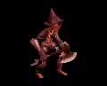 | 両手剣(380) | ステッキ(250) | 盾(380) | 足(210) | 槍投擲機(190) | 帰還(150) | 鎌(380) | |||
| 骸骨狂戦士 | アンデット | 一般3 | ||||||||
 | 両手剣(360) | 鈍器(240) | 矢(360) | 足(200) | 槍投擲機(180) | 帰還(140) | 鎌(360) | 魔弾(240) | ||
| 死の斧 | アンデット | セミ1 | ||||||||
 | 両手剣(390) | ステッキ(260) | 盾(390) | 足(220) | 槍投擲機(200) | 帰還(160) | 鎌(390) | |||
| 地獄の斧 | アンデット | ボス1 | ||||||||
| 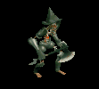 | 両手剣(470) | 鈍器(310) | 盾(470) | 足(260) | 槍投擲機(240) | 帰還(190) | 鎌(470) | |||
| 両刀骸骨戦士 | アンデット | 一般1 | ||||||||
 | 片手剣(410) | 弓(270) | 矢(410) | 兜・帽子(230) | 槍投擲機(210) | 帰還(160) | クロー(410) | 銃(270) | 魔弾(410) | |
| 防御骸骨戦士 | アンデット | 一般2 | ||||||||
 | 片手剣(380) | 槍(250) | 弾(380) | 兜・帽子(210) | 槍投擲機(190) | 帰還(150) | クロー(380) | 箒(250) | ||
| 骸骨剣士 | アンデット | 一般3 | ||||||||
 | 片手剣(360) | 弓(240) | 矢(360) | 兜・帽子(200) | 槍投擲機(180) | 帰還(140) | クロー(360) | 銃(240) | 魔弾(360) | |
| 死の双剣士 | アンデット | セミ1 | ||||||||
 | 片手剣(390) | 槍(260) | 鍵(30) | 兜・帽子(220) | 槍投擲機(200) | 帰還(160) | クロー(390) | 箒(260) | ||
| 地獄の双剣 | アンデット | ボス1 | ||||||||
 | 片手剣(470) | 弓(310) | 鍵(50) | 兜・帽子(260) | 槍投擲機(240) | 帰還(190) | クロー(470) | 銃(310) | ||
| 大型骸骨 | アンデット | 一般1 | ||||||||
 | 鈍器(410) | 両手剣(270) | 弾(410) | 職業鎧(230) | 冠(210) | 能力向上1(160) | 鎌(270) | |||
| 巨人骸骨 | アンデット | 一般2 | ||||||||
 | 鈍器(380) | 牙(250) | 矢(380) | 職業鎧(210) | 指輪(190) | 能力向上1(150) | 双剣(250) | 魔弾(380) | ||
| 骸骨騎士 | アンデット | 一般3 | ||||||||
 | 鈍器(360) | スリング(240) | 矢(360) | 職業鎧(200) | 爪(180) | 能力向上1(140) | 魔弾(360) | |||
| デスナイト | アンデット | セミ1 | ||||||||
 | 鈍器(390) | 牙(260) | 弾(390) | 鎧(220) | 爪(200) | 能力向上1(160) | 双剣(260) | |||
| 地獄の騎士 | アンデット | ボス1 | ||||||||
 | 鈍器(470) | ステッキ(310) | 矢(470) | 鎧(260) | 爪(240) | 能力向上1(190) | 魔弾(470) | |||
| リビングデッド | アンデット | 一般1 | ||||||||
 | 投擲(410) | 牙(270) | イベント(410) | 腰(230) | 爪(210) | 帰還(160) | 双剣(270) | |||
| グール | アンデット | 一般2 | ||||||||
 | 投擲(380) | スリング(250) | イベント(380) | 足(210) | 爪(190) | 帰還(150) | ||||
| ゾンビ | アンデット | 一般3 | ||||||||
 | 投擲(360) | 牙(240) | イベント(360) | 兜・帽子(200) | 爪(180) | 帰還(140) | 双剣(240) | |||
| スプーク | アンデット | セミ1 | ||||||||
 | 投擲(390) | スリング(260) | 状態異常回復1(390) | 腰(220) | 爪(200) | 帰還(160) | ||||
| デスピンサー | アンデット | ボス1 | ||||||||
| 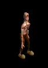 | 投擲(470) | 牙(310) | 状態異常回復1(470) | 鎧(260) | 爪(240) | 帰還(190) | 双剣(310) | |||
| スリップワーカー | アンデット | 一般1 | ||||||||
 | スリング(410) | ステッキ(270) | 弾(410) | 兜・帽子(230) | 首(210) | ブローチ(120) | ||||
| ルナティック | アンデット | 一般2 | ||||||||
 | スリング(380) | ステッキ(250) | 弾(380) | 足(210) | 首(190) | ブローチ(130) | ||||
| プレーガー | アンデット | 一般3 | ||||||||
 | スリング(360) | ステッキ(240) | 弾(360) | 腰(200) | 首(180) | ブローチ(140) | ||||
| ジャンキー | アンデット | セミ1 | ||||||||
 | スリング(390) | ステッキ(260) | 鍵(30) | 兜・帽子(220) | イヤリング(200) | ブローチ(150) | ||||
| アライブコープス | アンデット | ボス1 | ||||||||
 | スリング(470) | ステッキ(310) | 鍵(50) | 足(260) | 首(240) | ブローチ(160) | ||||
| ゴースト | アンデット | 一般1 | ||||||||
| 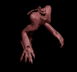 | 笛(410) | 翼(10) | 鍵(10) | マント(230) | イヤリング(210) | ブローチ(150) | 水晶(410) | |||
| イリュージョン | アンデット | 一般2 | ||||||||
 | 笛(380) | 翼(250) | 矢(380) | マント(210) | イヤリング(190) | ブローチ(160) | 水晶(380) | 魔弾(380) | ||
| ファントム | アンデット | 一般3 | ||||||||
 | 笛(360) | 翼(240) | 矢(360) | マント(200) | イヤリング(180) | ブローチ(170) | 水晶(240) | 魔弾(360) | ||
| バンシー | アンデット | セミ1 | ||||||||
 | 笛(390) | 翼(260) | イベント(390) | マント(220) | イヤリング(200) | ブローチ(180) | 水晶(260) | |||
| 幻影 | アンデット | ボス1 | ||||||||
| 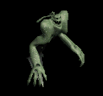 | 笛(470) | 翼(310) | 鍵(470) | マント(260) | イヤリング(240) | ブローチ(190) | 水晶(310) | |||
| ミイラ | アンデット | 一般2 | ||||||||
 | 槍(380) | 杖(250) | 状態異常回復1(380) | 腰(210) | 手首(190) | 能力向上2(150) | 本(250) | 箒(380) | ||
| 包帯人間 | アンデット | 一般3 | ||||||||
 | 槍(360) | 杖(240) | 矢(360) | 腰(200) | 手首(180) | 能力向上2(140) | 本(240) | 箒(360) | 魔弾(360) | |
| エンバームド | アンデット | 一般4 | ||||||||
 | 槍(300) | 鞭(200) | 状態異常回復1(300) | 腰(170) | 手首(150) | 能力向上2(120) | 箒(300) | |||
| マミー | アンデット | セミ1 | ||||||||
 | 槍(390) | 杖(260) | 状態異常回復1(390) | 腰(220) | 手首(200) | 能力向上2(160) | 本(260) | 箒(390) | ||
| マミーキング | アンデット | ボス1 | ||||||||
 | 槍(470) | 鞭(310) | 状態異常回復1(470) | 腰(260) | 手首(240) | 能力向上2(190) | 箒(470) | |||
| リビングメイル | アンデット | 一般2 | ||||||||
 | 弓(380) | 片手剣(250) | 盾(380) | 鎧(210) | 手首(190) | 能力向上1(150) | クロー(250) | 銃(380) | ||
| 鎧霊 | アンデット | 一般3 | ||||||||
 | 弓(360) | 片手剣(240) | 弾(360) | 鎧(200) | 首(180) | 能力向上1(140) | クロー(240) | 銃(360) | ||
| 幽霊鎧 | アンデット | 一般4 | ||||||||
 | 弓(300) | 両手剣(200) | 盾(300) | 鎧(170) | 手首(150) | 能力向上1(120) | 鎌(200) | 銃(300) | ||
| 守護鎧 | アンデット | セミ1 | ||||||||
 | 弓(390) | 片手剣(260) | 盾(390) | 鎧(220) | 首(200) | 能力向上1(160) | クロー(260) | 銃(390) | ||
| 幻想鎧 | アンデット | ボス1 | ||||||||
 | 弓(470) | 両手剣(310) | 盾(470) | 鎧(260) | 手首(240) | 能力向上2(190) | 鎌(310) | 銃(470) | ||
| ヴァンパイア | アンデット | 一般3 | ||||||||
 | 鞭(360) | 牙(240) | イベント(360) | 職業鎧(200) | 指輪(180) | 特殊1(140) | 双剣(240) | |||
| 上級ヴァンパイア | アンデット | セミ1 | ||||||||
 | 鞭(390) | 笛(260) | イベント(390) | 職業鎧(220) | 指輪(200) | 特殊1(160) | ||||
| 古代ヴァンパイア | アンデット | セミ2 | ||||||||
 | 鞭(420) | 牙(280) | 弾(420) | 職業鎧(230) | 指輪(210) | 特殊1(170) | 双剣(280) | |||
| ドラキュラ | アンデット | ボス1 | ||||||||
 | 鞭(470) | 笛(310) | cP回復(470) | 職業鎧(260) | 指輪(240) | 特殊1(190) | ||||
| ノースフェラトゥ | アンデット | ボス2 | ||||||||
 | 鞭(490) | 牙(330) | HP回復(490) | 職業鎧(270) | 指輪(250) | 特殊1(200) | 双剣(330) | |||
| 死霊魔術師 | アンデット | セミ1 | ||||||||
 | 杖(390) | 翼(260) | イベント(390) | グローブ(220) | 冠(200) | ブローチ(200) | 本(390) | 水晶(260) | ||
| レイス | アンデット | セミ2 | ||||||||
| 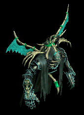 | 杖(420) | 翼(280) | 状態異常回復1(420) | グローブ(230) | 冠(210) | ブローチ(250) | 本(420) | 水晶(280) | ||
| ワイト | アンデット | セミ3 | ||||||||
| 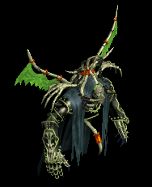 | 杖(450) | 投擲(300) | cP回復(450) | グローブ(250) | 冠(230) | ブローチ(300) | 本(450) | |||
| リッチ | アンデット | ボス2 | ||||||||
 | 杖(490) | 翼(330) | HP回復(490) | グローブ(270) | 冠(250) | ブローチ(400) | 本(490) | 水晶(330) | ||
| アークリッチ | アンデット | ボス3 | ||||||||
 | 杖(510) | 投擲(340) | 状態異常回復2(130) | グローブ(280) | 冠(260) | ブローチ(500) | 本(510) | |||
| ハンター | 人間 | 一般1 | ||||||||
 | 弓(410) | 片手剣(270) | 矢(410) | グローブ(230) | 手首(210) | 腕刺青(150) | クロー(270) | 銃(410) | 魔弾(410) | |
| アーチャー | 人間 | 一般2 | ||||||||
 | 弓(380) | 片手剣(250) | 矢(380) | グローブ(210) | 手首(190) | 腕刺青(160) | クロー(250) | 銃(380) | 魔弾(380) | |
| シューター | 人間 | 一般3 | ||||||||
 | 弓(360) | 片手剣(240) | 矢(360) | グローブ(200) | 手首(180) | 腕刺青(170) | クロー(240) | 銃(360) | 魔弾(360) | |
| スナイパー | 人間 | セミ1 | ||||||||
 | 弓(390) | 片手剣(260) | 矢(390) | グローブ(220) | 手首(200) | 腕刺青(180) | クロー(260) | 銃(390) | 魔弾(390) | |
| ブラックエルフ | 人間 | ボス1 | ||||||||
| 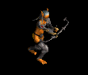 | 弓(470) | 片手剣(310) | イベント(470) | グローブ(260) | 手首(240) | 腕刺青(190) | クロー(310) | 銃(470) | ||
| シーフ | 人間 | 一般1 | ||||||||
 | 投擲(410) | ステッキ(270) | イベント(410) | 職業鎧(230) | 指輪(210) | 特殊1(160) | ||||
| ローグ | 人間 | 一般2 | ||||||||
| 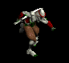 | 投擲(380) | ステッキ(250) | 鍵(10) | 職業鎧(210) | 爪(190) | 特殊1(150) | ||||
| スナッチャー | 人間 | 一般3 | ||||||||
 | 投擲(360) | ステッキ(140) | 鍵(30) | 職業鎧(200) | 爪(180) | 特殊1(140) | ||||
| ロバー | 人間 | セミ1 | ||||||||
 | 投擲(390) | ステッキ(260) | 弾(390) | 職業鎧(220) | 爪(200) | 特殊1(160) | ||||
| アサシン | 人間 | セミ2 | ||||||||
 | 投擲(420) | ステッキ(280) | 矢(420) | 職業鎧(230) | 爪(210) | 特殊1(170) | 魔弾(420) | |||
| レッドアイ信奉者 | 人間 | 一般1 | ||||||||
 | 笛(410) | 牙(270) | イベント(410) | 鎧(230) | 槍投擲機(210) | 十字架(50) | 双剣(270) | |||
| 原人 | 人間 | 一般2 | ||||||||
 | 笛(380) | 牙(250) | イベント(380) | グローブ(210) | 槍投擲機(190) | 十字架(60) | 双剣(250) | |||
| 原始人 | 人間 | 一般3 | ||||||||
 | 笛(360) | 牙(240) | 状態異常回復1(360) | 足(200) | 槍投擲機(180) | 十字架(70) | 双剣(240) | |||
| イーター | 人間 | セミ1 | ||||||||
 | 笛(390) | 牙(260) | 状態異常回復1(390) | グローブ(220) | 槍投擲機(200) | 十字架(80) | 双剣(260) | |||
| 呪術者 | 人間 | ボス1 | ||||||||
 | 笛(470) | 牙(310) | 状態異常回復1(470) | 足(260) | 槍投擲機(240) | 十字架(90) | 双剣(310) | |||
| ストラグラー | 人間 | 一般1 | ||||||||
 | 杖(410) | スリング(270) | 弾(410) | 腰(230) | 首(210) | 能力向上2(160) | 本(410) | |||
| 堕落魔法師 | 人間 | 一般3 | ||||||||
 | 杖(360) | スリング(240) | イベント(360) | マント(200) | 首(180) | 能力向上2(140) | 本(360) | |||
| ブラックメイジ | 人間 | 一般4 | ||||||||
 | 杖(300) | スリング(200) | 弾(300) | グローブ(170) | 爪(150) | 宝石(120) | 本(300) | |||
| ソーサラー | 人間 | セミ1 | ||||||||
 | 杖(390) | スリング(260) | 状態異常回復2(100) | 職業鎧(220) | 首(200) | 能力向上2(160) | 本(390) | |||
| ドゥームキャスター | 人間 | ボス1 | ||||||||
 | 杖(470) | スリング(310) | 弾(470) | 兜・帽子(260) | 首(240) | 能力向上2(190) | 本(470) | |||
| 斧槍兵 | 人間 | 一般2 | ||||||||
 | 槍(380) | 両手剣(250) | 状態異常回復1(380) | 鎧(210) | 手首(190) | 十字架(120) | 鎌(250) | 箒(380) | ||
| コートナイト | 人間 | 一般3 | ||||||||
 | 槍(360) | 両手剣(240) | イベント(360) | 兜・帽子(200) | 手首(180) | 十字架(130) | 鎌(240) | 箒(360) | ||
| レッドアイ護衛兵 | 人間 | 一般4 | ||||||||
 | 槍(300) | 両手剣(200) | 鍵(20) | 鎧(170) | 手首(150) | 十字架(140) | 鎌(200) | 箒(300) | ||
| テンプラー | 人間 | セミ2 | ||||||||
 | 槍(420) | 両手剣(280) | 鍵(30) | 兜・帽子(230) | 手首(210) | 十字架(150) | 鎌(280) | 箒(420) | ||
| アベンジャー | 人間 | ボス2 | ||||||||
 | 槍(490) | 両手剣(330) | 矢(490) | 鎧(270) | 手首(250) | 十字架(160) | 鎌(330) | 箒(490) | 魔弾(490) | |
| 偽伝道師 | 人間 | 一般2 | ||||||||
| 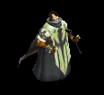 | 鈍器(380) | 翼(250) | 盾(380) | 職業鎧(210) | 冠(190) | 十字架(180) | 水晶(250) | |||
| エクソシスト | 人間 | 一般3 | ||||||||
 | 鈍器(360) | 翼(240) | 状態異常回復2(90) | 職業鎧(200) | 冠(180) | 十字架(190) | 水晶(240) | |||
| 偽聖職者 | 人間 | 一般4 | ||||||||
 | 鈍器(300) | 翼(200) | 盾(300) | 職業鎧(170) | 首(150) | 十字架(200) | 水晶(200) | |||
| ダークプリースト | 人間 | セミ2 | ||||||||
 | 鈍器(420) | 翼(280) | 状態異常回復2(110) | 職業鎧(230) | 首(210) | 十字架(210) | 水晶(280) | |||
| ダークビショップ | 人間 | ボス2 | ||||||||
 | 鈍器(490) | 翼(330) | 盾(490) | 兜・帽子(270) | 首(250) | 十字架(220) | 水晶(330) | |||
| ダークサマナー | 人間 | 一般2 | ||||||||
 | 鞭(380) | 投擲(250) | 弾(380) | 腰(210) | イヤリング(190) | 肩刺青(110) | ||||
| レッドアイ所員 | 人間 | 一般3 | ||||||||
 | 鞭(360) | 投擲(240) | 弾(360) | 腰(200) | イヤリング(180) | 肩刺青(120) | ||||
| デビルスカラー | 人間 | 一般4 | ||||||||
 | 鞭(300) | 牙(200) | cP回復(300) | 腰(170) | イヤリング(150) | 肩刺青(130) | 双剣(200) | |||
| 降神術師 | 人間 | セミ2 | ||||||||
| 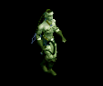 | 鞭(420) | スリング(280) | 弾(420) | 腰(230) | イヤリング(210) | 肩刺青(140) | ||||
| 堕落予言者 | 人間 | ボス1 | ||||||||
 | 鞭(470) | 投擲(310) | cP回復(470) | 腰(260) | イヤリング(240) | 肩刺青(150) | ||||
| オーク | 人間 | 一般3 | ||||||||
 | 鈍器(360) | 牙(240) | 弾(360) | 足(200) | 冠(180) | 帰還(140) | 双剣(240) | |||
| ジャイアント | 人間 | セミ1 | ||||||||
 | 鈍器(390) | 牙(260) | HP回復(390) | 足(220) | 首(200) | 能力向上1(160) | 双剣(260) | |||
| キクロップス | 人間 | セミ1 | ||||||||
 | スリング(390) | 杖(260) | 弾(390) | 足(220) | 爪(200) | 帰還(160) | 本(260) | |||
| コロッサス | 人間 | ボス1 | ||||||||
 | 鈍器(470) | 牙(310) | HP回復(470) | 足(260) | 指輪(240) | 能力向上1(190) | 双剣(310) | |||
| チタン | 人間 | ボス1 | ||||||||
 | スリング(470) | 杖(310) | 弾(470) | 足(260) | 冠(240) | 帰還(190) | 本(310) | |||
| エルフ戦士 | 人間 | 一般3 | ||||||||
 | 片手剣(360) | 弓(240) | 矢(360) | 鎧(200) | 指輪(180) | 腕刺青(120) | クロー(360) | 銃(240) | 魔弾(360) | |
| エルフ暗殺者 | 人間 | 一般4 | ||||||||
 | 片手剣(300) | 投擲(200) | 盾(300) | 兜・帽子(170) | 指輪(150) | 腕刺青(130) | クロー(300) | |||
| エルフ巡察者 | 人間 | セミ1 | ||||||||
 | 片手剣(390) | 弓(260) | 矢(390) | 兜・帽子(220) | 指輪(200) | 腕刺青(140) | クロー(390) | 銃(260) | 魔弾(390) | |
| エルフ騎士 | 人間 | セミ2 | ||||||||
 | 片手剣(420) | 槍(280) | 盾(420) | 鎧(230) | 指輪(210) | 腕刺青(150) | クロー(420) | 箒(280) | ||
| エルフ王 | 人間 | ボス3 | ||||||||
 | 片手剣(510) | 弓(340) | 矢(510) | 鎧(280) | 指輪(260) | 腕刺青(160) | クロー(510) | 銃(340) | 魔弾(510) | |
| レッドアイ魔法師 | 人間 | 一般4 | ||||||||
 | ステッキ(300) | 笛(200) | 矢(300) | マント(170) | 冠(150) | ブローチ(180) | 魔弾(300) | |||
| レッドアイ幹部 | 人間 | セミ1 | ||||||||
 | ステッキ(390) | 鞭(260) | cP回復(390) | マント(220) | 冠(200) | ブローチ(190) | ||||
| レッドアイ元老 | 人間 | セミ2 | ||||||||
 | ステッキ(420) | 笛(280) | 矢(420) | マント(230) | 冠(210) | ブローチ(200) | 魔弾(420) | |||
| レッドアイ法術師 | 人間 | ボス1 | ||||||||
 | ステッキ(470) | 杖(310) | 状態異常回復2(120) | マント(260) | 冠(240) | ブローチ(210) | 本(310) | |||
| レッドアイ元帥 | 人間 | ボス2 | ||||||||
 | ステッキ(490) | 笛(330) | 弾(490) | マント(270) | イヤリング(250) | ブローチ(220) | ||||
| アイウィング | 悪魔 | 一般3 | ||||||||
 | 笛(360) | 翼(240) | 状態異常回復1(360) | 兜・帽子(200) | 冠(180) | 帰還(140) | 水晶(240) | |||
| ドゥームスフィア | 悪魔 | 一般4 | ||||||||
 | 笛(300) | 翼(200) | 状態異常回復1(300) | 兜・帽子(170) | 首(150) | 帰還(120) | 水晶(200) | |||
| ビホルダー | 悪魔 | セミ2 | ||||||||
 | 投擲(420) | 翼(280) | 状態異常回復1(420) | 兜・帽子(230) | 冠(210) | 帰還(170) | 水晶(280) | |||
| アルゴス | 悪魔 | セミ3 | ||||||||
| 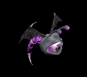 | 笛(450) | 翼(300) | 鍵(450) | 兜・帽子(250) | 首(230) | 帰還(180) | 水晶(300) | |||
| オーバーシアー | 悪魔 | ボス2 | ||||||||
 | 投擲(490) | 翼(330) | cP回復(490) | 兜・帽子(270) | 冠(250) | 帰還(200) | 水晶(330) | |||
| コボルト | 悪魔 | 一般1 | ||||||||
 | 牙(410) | スリング(270) | 弾(410) | 腰(230) | 爪(210) | 肩刺青(120) | 双剣(410) | |||
| グレムリン | 悪魔 | 一般2 | ||||||||
 | 牙(380) | スリング(250) | 弾(380) | 腰(210) | 爪(190) | 肩刺青(130) | 双剣(380) | |||
| ゴブリン | 悪魔 | 一般3 | ||||||||
 | 牙(360) | スリング(240) | 弾(360) | 腰(200) | 爪(180) | 肩刺青(140) | 双剣(360) | |||
| ファミリア | 悪魔 | 一般4 | ||||||||
 | 牙(300) | スリング(200) | 弾(300) | 腰(170) | 爪(150) | 肩刺青(150) | 双剣(300) | |||
| インプ | 悪魔 | セミ1 | ||||||||
 | 牙(390) | スリング(260) | 弾(390) | 腰(220) | 爪(200) | 肩刺青(160) | 双剣(390) | |||
| 鷲戦士 | 悪魔 | 一般1 | ||||||||
 | 片手剣(410) | 両手剣(270) | 盾(410) | グローブ(230) | 手首(210) | 腕刺青(110) | 鎌(270) | クロー(410) | ||
| 鷲闘士 | 悪魔 | 一般2 | ||||||||
 | 片手剣(380) | 弓(250) | 盾(380) | グローブ(210) | 手首(190) | 腕刺青(120) | クロー(380) | 銃(250) | ||
| 鷲狂戦士 | 悪魔 | 一般3 | ||||||||
 | 片手剣(360) | 弓(240) | 矢(360) | グローブ(200) | 手首(180) | 腕刺青(130) | クロー(360) | 銃(240) | 魔弾(360) | |
| 鷲剣士 | 悪魔 | セミ1 | ||||||||
 | 片手剣(390) | 両手剣(260) | 盾(390) | グローブ(220) | 手首(200) | 腕刺青(140) | 鎌(260) | クロー(390) | ||
| 鷲王 | 悪魔 | ボス1 | ||||||||
 | 片手剣(470) | 弓(310) | 盾(470) | グローブ(260) | 手首(240) | 腕刺青(150) | クロー(470) | 銃(310) | ||
| リザードマン | 悪魔 | 一般1 | ||||||||
 | 槍(410) | 両手剣(270) | イベント(410) | 鎧(230) | 槍投擲機(210) | 肩刺青(90) | 鎌(270) | 箒(410) | ||
| リザードウォリア | 悪魔 | 一般2 | ||||||||
| 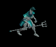 | 槍(380) | 両手剣(250) | イベント(380) | 鎧(210) | 槍投擲機(190) | 肩刺青(100) | 鎌(250) | 箒(380) | ||
| リザードキリング | 悪魔 | 一般3 | ||||||||
 | 槍(360) | 両手剣(240) | イベント(360) | 鎧(200) | 槍投擲機(180) | 肩刺青(110) | 鎌(240) | 箒(360) | ||
| ナーガファイター | 悪魔 | セミ1 | ||||||||
 | 槍(390) | 両手剣(260) | イベント(390) | 鎧(220) | 槍投擲機(200) | 肩刺青(120) | 鎌(260) | 箒(390) | ||
| ナーガスフィア | 悪魔 | ボス1 | ||||||||
 | 槍(470) | 両手剣(310) | イベント(470) | グローブ(260) | 槍投擲機(240) | 肩刺青(130) | 鎌(310) | 箒(470) | ||
| リザードライダー | 悪魔 | 一般2 | ||||||||
 | スリング(380) | 槍(250) | イベント(380) | 職業鎧(210) | 首(190) | 能力向上2(150) | 箒(250) | |||
| リザードチャージ | 悪魔 | 一般3 | ||||||||
 | ステッキ(360) | 槍(240) | イベント(360) | 職業鎧(200) | 首(180) | 能力向上2(140) | 箒(240) | |||
| リザードトルーパ | 悪魔 | 一般4 | ||||||||
| 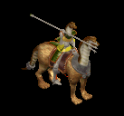 | ステッキ(300) | 弓(200) | 矢(300) | 職業鎧(170) | 首(150) | 能力向上2(120) | 銃(200) | 魔弾(300) | ||
| ナーガナイト | 悪魔 | セミ2 | ||||||||
 | ステッキ(420) | 弓(280) | HP回復(420) | 職業鎧(230) | 首(210) | 能力向上2(170) | 銃(280) | |||
| ナーガランサー | 悪魔 | ボス2 | ||||||||
 | スリング(490) | 弓(330) | 矢(490) | 職業鎧(270) | 首(250) | 能力向上2(200) | 銃(330) | 魔弾(490) | ||
| ラットマン | 悪魔 | 一般1 | ||||||||
 | 投擲(410) | 笛(270) | 弾(410) | 足(230) | 指輪(210) | 帰還(160) | ||||
| ワーラット | 悪魔 | 一般2 | ||||||||
| 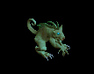 | 投擲(380) | ステッキ(250) | 矢(380) | 足(210) | 槍投擲機(190) | 帰還(150) | 魔弾(380) | |||
| ラティアン | 悪魔 | 一般3 | ||||||||
 | 投擲(360) | 笛(240) | 弾(360) | 足(200) | 手首(180) | 帰還(140) | ||||
| ラットシーフ | 悪魔 | 一般4 | ||||||||
 | 投擲(300) | ステッキ(200) | 矢(300) | 足(170) | 槍投擲機(150) | 能力向上2(120) | 魔弾(300) | |||
| ラットキング | 悪魔 | ボス1 | ||||||||
 | 投擲(470) | 笛(310) | 弾(470) | 足(260) | 冠(240) | 能力向上1(190) | ||||
| ピエンド | 悪魔 | 一般1 | ||||||||
| 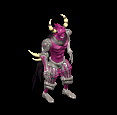 | 鞭(410) | 杖(270) | 状態異常回復1(410) | 腰(230) | 指輪(210) | 十字架(180) | 本(270) | |||
| レッサーデーモン | 悪魔 | 一般2 | ||||||||
 | 鞭(380) | 牙(250) | 矢(380) | マント(210) | 指輪(190) | 十字架(190) | 双剣(250) | 魔弾(380) | ||
| デーモン | 悪魔 | セミ2 | ||||||||
 | 鞭(420) | 杖(280) | cP回復(420) | 腰(230) | 指輪(210) | 十字架(200) | 本(280) | |||
| デビル | 悪魔 | セミ3 | ||||||||
 | 鞭(450) | 牙(300) | 矢(450) | マント(250) | 指輪(230) | 十字架(210) | 双剣(300) | 魔弾(450) | ||
| サタン | 悪魔 | ボス2 | ||||||||
 | 鞭(490) | 杖(330) | 状態異常回復1(490) | 腰(270) | 指輪(250) | 十字架(220) | 本(330) | |||
| オーガ | 悪魔 | 一般3 | ||||||||
 | 鈍器(360) | 杖(240) | イベント(360) | 鎧(200) | イヤリング(180) | 能力向上1(140) | 本(240) | |||
| オーガソルジャー | 悪魔 | 一般4 | ||||||||
 | 鈍器(300) | スリング(200) | 弾(300) | 鎧(170) | イヤリング(150) | 能力向上1(120) | ||||
| オーガチーフ | 悪魔 | セミ1 | ||||||||
 | 鈍器(390) | 杖(260) | 状態異常回復1(390) | 鎧(220) | イヤリング(200) | 能力向上1(160) | 本(260) | |||
| オーガオフィサー | 悪魔 | セミ3 | ||||||||
 | ステッキ(450) | 弓(300) | HP回復(450) | 鎧(250) | イヤリング(230) | 能力向上1(180) | 銃(300) | |||
| オーガゼネラル | 悪魔 | ボス2 | ||||||||
 | 鈍器(490) | 杖(330) | 状態異常回復2(120) | 鎧(270) | イヤリング(250) | 能力向上1(200) | 本(330) | |||
| ゴートマン | 悪魔 | 一般1 | ||||||||
 | 笛(410) | 鈍器(270) | 状態異常回復2(100) | マント(230) | 冠(210) | 能力向上1(160) | ||||
| ウェアーゴート | 悪魔 | 一般3 | ||||||||
 | 鞭(360) | 翼(240) | 鍵(20) | グローブ(200) | 指輪(180) | 宝石(140) | 水晶(240) | |||
| ホーンド | 悪魔 | セミ1 | ||||||||
 | ステッキ(390) | 翼(260) | 状態異常回復2(100) | マント(220) | 手首(200) | 宝石(160) | 水晶(260) | |||
| ブレイマ | 悪魔 | セミ3 | ||||||||
 | 槍(450) | 片手剣(300) | 弾(450) | 職業鎧(250) | 爪(230) | 特殊1(180) | クロー(300) | 箒(450) | ||
| バフォメット | 悪魔 | ボス3 | ||||||||
 | 槍(510) | 鞭(340) | cP回復(510) | 足(280) | 槍投擲機(260) | 特殊1(200) | 箒(510) | |||
| ストーンオブザー | 悪魔 | セミ2 | ||||||||
| 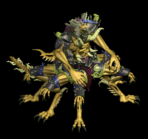 | none(420) | 弓(280) | 矢(420) | 足(230) | 冠(210) | 特殊1(170) | 銃(280) | 魔弾(420) | ||
| ストーントルド | 悪魔 | セミ3 | ||||||||
 | none(450) | 鈍器(300) | 盾(450) | 腰(250) | 手首(230) | 能力向上2(180) | ||||
| ストーンラーバ | 悪魔 | ボス1 | ||||||||
 | none(470) | 杖(310) | 鍵(470) | マント(260) | イヤリング(240) | 宝石(190) | 本(310) | |||
| ストーンキーパー | 悪魔 | ボス2 | ||||||||
 | none(490) | 片手剣(330) | 鍵(490) | 足(270) | 爪(250) | 宝石(200) | クロー(330) | |||
| 赤い悪魔 | 悪魔 | ボス3 | ||||||||
 | none(510) | 両手剣(340) | 鍵(510) | 職業鎧(280) | 首(260) | 能力向上1(200) | 鎌(340) | |||
| 淡水亀 | 動物 | 一般1 | ||||||||
| 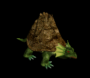 | ステッキ(410) | 杖(270) | 盾(410) | 鎧(230) | 冠(210) | 能力向上2(160) | 本(270) | |||
| ヒュージタートル | 動物 | 一般2 | ||||||||
 | ステッキ(380) | 杖(250) | 状態異常回復2(100) | 鎧(210) | 冠(190) | 能力向上2(150) | 本(250) | |||
| ビッグシェル | 動物 | 一般3 | ||||||||
 | ステッキ(360) | 杖(240) | 盾(360) | 鎧(200) | 冠(180) | 能力向上2(140) | 本(240) | |||
| トライアングル | 動物 | セミ1 | ||||||||
 | ステッキ(390) | 杖(260) | cP回復(390) | 鎧(220) | 冠(200) | 能力向上2(160) | 本(260) | |||
| タートルドラゴン | 動物 | ボス1 | ||||||||
 | ステッキ(470) | 杖(310) | 盾(470) | 鎧(260) | 冠(240) | 能力向上2(190) | 本(310) | |||
| スパイダー | 動物 | 一般1 | ||||||||
 | 片手剣(410) | 投擲(270) | 矢(410) | グローブ(230) | 首(210) | 帰還(160) | クロー(410) | 魔弾(410) | ||
| フェイズスパイダ | 動物 | 一般2 | ||||||||
 | 片手剣(380) | 投擲(250) | 矢(380) | グローブ(210) | 首(190) | 帰還(150) | クロー(380) | 魔弾(380) | ||
| ソードスパイダー | 動物 | 一般3 | ||||||||
 | 片手剣(360) | 槍(240) | 矢(360) | グローブ(200) | 首(180) | 能力向上1(140) | クロー(360) | 箒(240) | 魔弾(360) | |
| ウィーブウィドウ | 動物 | セミ1 | ||||||||
 | 片手剣(390) | 槍(260) | 矢(390) | グローブ(220) | 首(200) | 帰還(160) | クロー(390) | 箒(260) | 魔弾(390) | |
| アラクノーイド | 動物 | ボス1 | ||||||||
| 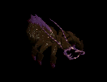 | 片手剣(470) | 投擲(310) | 矢(470) | グローブ(260) | 首(240) | 宝石(190) | クロー(470) | 魔弾(470) | ||
| スコーピオン | 動物 | 一般1 | ||||||||
 | 弓(410) | 槍(270) | 盾(410) | 兜・帽子(230) | イヤリング(210) | 特殊1(160) | 箒(270) | 銃(410) | ||
| ポイズンテール | 動物 | 一般2 | ||||||||
 | 弓(380) | 槍(250) | 矢(380) | 兜・帽子(210) | 手首(190) | 特殊1(150) | 箒(250) | 銃(380) | 魔弾(380) | |
| デスピンサー | 動物 | 一般3 | ||||||||
 | 弓(360) | 槍(240) | 盾(360) | 兜・帽子(200) | イヤリング(180) | 特殊1(140) | 箒(240) | 銃(360) | ||
| 食人スコーピオン | 動物 | セミ2 | ||||||||
 | 弓(420) | 槍(280) | 矢(420) | 兜・帽子(230) | イヤリング(210) | 特殊1(170) | 箒(280) | 銃(420) | 魔弾(420) | |
| スノースコルピオ | 動物 | ボス2 | ||||||||
 | 弓(490) | 槍(330) | 盾(490) | 兜・帽子(270) | 手首(250) | 特殊1(200) | 箒(330) | 銃(490) | ||
| 飛海月 | 動物 | 一般1 | ||||||||
 | 鞭(410) | スリング(270) | 弾(410) | 腰(230) | 手首(210) | 帰還(160) | ||||
| エアスライム | 動物 | 一般2 | ||||||||
 | 鞭(380) | スリング(250) | 弾(380) | 腰(210) | イヤリング(190) | 特殊1(150) | ||||
| アクアスライム | 動物 | 一般3 | ||||||||
 | 鞭(360) | スリング(240) | 弾(360) | 腰(200) | 手首(180) | 帰還(140) | ||||
| 水晶烏賊 | 動物 | セミ1 | ||||||||
 | 鞭(390) | スリング(260) | 弾(390) | 腰(220) | 手首(200) | 能力向上2(160) | ||||
| クラーケン | 動物 | ボス1 | ||||||||
 | 鞭(470) | スリング(310) | 弾(470) | 腰(260) | 手首(240) | 帰還(190) | ||||
| 蟲 | 動物 | 一般1 | ||||||||
 | 鈍器(410) | スリング(270) | イベント(410) | マント(230) | 冠(210) | 帰還(160) | ||||
| リーチ | 動物 | 一般2 | ||||||||
 | 鈍器(380) | 片手剣(250) | イベント(380) | マント(210) | 冠(190) | 帰還(150) | クロー(250) | |||
| マゴット | 動物 | 一般3 | ||||||||
 | 鈍器(360) | スリング(240) | イベント(360) | マント(200) | 冠(180) | 帰還(140) | ||||
| クローラー | 動物 | 一般4 | ||||||||
 | 鈍器(300) | 片手剣(200) | イベント(300) | マント(170) | 冠(150) | 帰還(120) | クロー(200) | |||
| クリーパー | 動物 | セミ1 | ||||||||
 | 鈍器(390) | スリング(260) | イベント(390) | マント(220) | 冠(200) | 帰還(160) | ||||
| クラブシェル | 動物 | 一般1 | ||||||||
 | 投擲(410) | 両手剣(270) | 盾(410) | 足(230) | 爪(210) | 帰還(160) | 鎌(270) | |||
| ビッグクラブ | 動物 | 一般2 | ||||||||
 | 投擲(380) | 両手剣(250) | 状態異常回復1(380) | 足(210) | 指輪(190) | 能力向上2(150) | 鎌(250) | |||
| サイドウォーカー | 動物 | 一般3 | ||||||||
 | 投擲(360) | 両手剣(240) | 盾(360) | 足(200) | 爪(180) | 宝石(140) | 鎌(240) | |||
| キングクラブ | 動物 | セミ1 | ||||||||
 | 投擲(390) | 両手剣(260) | 状態異常回復1(390) | 足(220) | 指輪(200) | 帰還(160) | 鎌(260) | |||
| キャンサー | 動物 | ボス1 | ||||||||
 | 投擲(470) | 両手剣(310) | 状態異常回復1(470) | 腰(260) | 爪(240) | 宝石(190) | 鎌(310) | |||
| 蟲の群れ | 動物 | 一般1 | ||||||||
 | 笛(410) | 翼(270) | イベント(410) | グローブ(230) | イヤリング(210) | 帰還(160) | 水晶(270) | |||
| 鋏昆虫の群れ | 動物 | 一般2 | ||||||||
 | 笛(380) | 翼(250) | イベント(380) | 腰(210) | 首(190) | 帰還(150) | 水晶(250) | |||
| 殺人蚊の群れ | 動物 | 一般3 | ||||||||
 | 笛(360) | 翼(240) | イベント(360) | 足(200) | イヤリング(180) | 帰還(140) | 水晶(240) | |||
| イナゴの群れ | 動物 | セミ1 | ||||||||
 | 笛(390) | 翼(260) | イベント(390) | 兜・帽子(220) | 首(200) | 帰還(160) | 水晶(260) | |||
| ディザースター | 動物 | ボス1 | ||||||||
 | 笛(470) | 翼(310) | イベント(470) | マント(260) | イヤリング(240) | 帰還(190) | 水晶(310) | |||
| 野良犬 | 動物 | 一般1 | ||||||||
 | 牙(410) | 笛(270) | 鍵(10) | 職業鎧(230) | 槍投擲機(210) | 特殊1(160) | 双剣(410) | |||
| ウルフ | 動物 | 一般3 | ||||||||
 | 牙(360) | 弓(240) | 状態異常回復1(360) | マント(200) | 槍投擲機(180) | 特殊1(140) | 双剣(360) | 銃(240) | ||
| レッドアイ警備犬 | 動物 | セミ1 | ||||||||
 | 牙(390) | 鞭(260) | 鍵(30) | 職業鎧(220) | 槍投擲機(200) | 特殊1(160) | 双剣(390) | |||
| ダイアーウルフ | 動物 | セミ2 | ||||||||
 | 牙(420) | 鈍器(280) | cP回復(420) | 足(230) | 槍投擲機(210) | 特殊1(170) | 双剣(420) | |||
| ヘルハウンド | 動物 | ボス2 | ||||||||
 | 牙(490) | 両手剣(330) | 鍵(50) | 職業鎧(270) | 槍投擲機(250) | 特殊1(200) | 鎌(330) | 双剣(490) | ||
| 大型モグラ | 動物 | 一般3 | ||||||||
 | 両手剣(360) | ステッキ(240) | 弾(360) | 職業鎧(200) | 指輪(180) | 能力向上1(140) | 鎌(360) | |||
| 巨大モグラ | 動物 | 一般4 | ||||||||
| 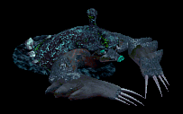 | 鞭(300) | 杖(200) | 状態異常回復2(80) | グローブ(170) | 指輪(150) | 能力向上1(120) | 本(200) | |||
| ディガー | 動物 | セミ1 | ||||||||
 | 弓(390) | スリング(260) | 弾(390) | 職業鎧(220) | 指輪(200) | 能力向上1(160) | 銃(390) | |||
| マインスィーパ | 動物 | セミ2 | ||||||||
 | 鞭(420) | 杖(280) | 弾(420) | グローブ(230) | 指輪(210) | 能力向上1(170) | 本(280) | |||
| ロードブローカー | 動物 | ボス1 | ||||||||
 | 笛(470) | ステッキ(310) | 弾(470) | 職業鎧(260) | 指輪(240) | 能力向上1(190) | ||||
| ブラックベアー | 動物 | 一般3 | ||||||||
 | 牙(360) | 鞭(240) | 状態異常回復1(360) | グローブ(200) | 爪(180) | 宝石(140) | 双剣(360) | |||
| ブラウンベアー | 動物 | 一般4 | ||||||||
 | 牙(300) | 笛(200) | HP回復(300) | 足(170) | 爪(150) | 宝石(120) | 双剣(300) | |||
| ポーラーベアー | 動物 | セミ1 | ||||||||
 | 両手剣(390) | 鞭(260) | 状態異常回復2(100) | 鎧(220) | イヤリング(200) | 宝石(160) | 鎌(390) | |||
| キングベアー | 動物 | ボス1 | ||||||||
 | 翼(470) | 笛(310) | 鍵(30) | 兜・帽子(260) | 爪(240) | 宝石(190) | 水晶(470) | |||
| 弓張月熊 | 動物 | ボス3 | ||||||||
| 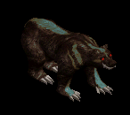 | 牙(510) | 鈍器(340) | HP回復(510) | マント(280) | 爪(260) | 宝石(200) | 双剣(510) | |||
| ファイアブロアー | 神獣 | 一般1 | ||||||||
 | 双剣(270) | スリング(100) | 牙(270) | |||||||
| フーフー | 神獣 | 一般2 | ||||||||
 | スリング(380) | 杖(250) | 本(250) | |||||||
| ブレイジャー | 神獣 | 一般3 | ||||||||
 | 双剣(240) | スリング(100) | 牙(240) | |||||||
| 炎鬼 | 神獣 | セミ1 | ||||||||
| 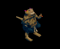 | スリング(390) | 杖(260) | 本(260) | |||||||
| 火炎悪魔 | 神獣 | ボス1 | ||||||||
 | 双剣(310) | スリング(100) | 牙(310) | |||||||
| オクトパストン | 神獣 | 一般1 | ||||||||
 | 双剣(270) | 投擲(100) | 牙(270) | |||||||
| 凍破 | 神獣 | 一般2 | ||||||||
| 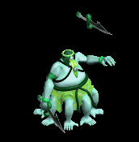 | 双剣(250) | 投擲(100) | 牙(250) | |||||||
| キャストアイ | 神獣 | 一般3 | ||||||||
| 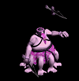 | 双剣(240) | 投擲(100) | 牙(240) | |||||||
| スノーツリー | 神獣 | セミ1 | ||||||||
 | 双剣(260) | 投擲(100) | 牙(260) | |||||||
| サーリビラエ | 神獣 | ボス1 | ||||||||
 | 双剣(310) | 投擲(100) | 牙(310) | |||||||
| ガーゴイル | 神獣 | 一般1 | ||||||||
 | 水晶(270) | 鞭(410) | 翼(270) | |||||||
| マーブルガゴイル | 神獣 | 一般4 | ||||||||
| 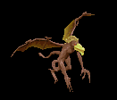 | 水晶(200) | 鞭(300) | 翼(200) | |||||||
| エボニーガゴイル | 神獣 | セミ1 | ||||||||
 | 水晶(260) | 鞭(390) | 翼(260) | |||||||
| オニキスガゴイル | 神獣 | セミ2 | ||||||||
 | 水晶(280) | 鞭(420) | 翼(280) | |||||||
| オデロンガゴイル | 神獣 | ボス2 | ||||||||
 | 鞭(490) | 投擲(330) | ||||||||
| ゴーレム | 神獣 | 一般2 | ||||||||
 | 鎌(100) | 両手剣(100) | 杖(250) | 本(250) | ||||||
| クレイゴーレム | 神獣 | 一般3 | ||||||||
 | 鎌(100) | 両手剣(100) | 杖(240) | 本(240) | ||||||
| ロックゴーレム | 神獣 | 一般4 | ||||||||
 | 鎌(100) | 両手剣(100) | ステッキ(200) | |||||||
| メタルゴーレム | 神獣 | セミ3 | ||||||||
 | 鎌(100) | 両手剣(100) | スリング(300) | |||||||
| ダイヤゴーレム | 神獣 | ボス1 | ||||||||
 | 鎌(100) | 両手剣(100) | 鈍器(310) | |||||||
| パン | 神獣 | 一般1 | ||||||||
| 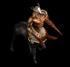 | 箒(270) | 笛(100) | 槍(270) | |||||||
| サティロス | 神獣 | 一般4 | ||||||||
 | 箒(200) | 笛(100) | 槍(200) | |||||||
| ケンタウロス | 神獣 | セミ1 | ||||||||
 | 箒(260) | 笛(100) | 槍(260) | |||||||
| ケンタウロス騎士 | 神獣 | セミ2 | ||||||||
 | 箒(280) | 笛(100) | 槍(280) | |||||||
| ケンタウロス王 | 神獣 | ボス2 | ||||||||
| 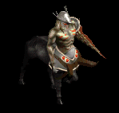 | 箒(330) | 笛(100) | 槍(330) | |||||||
| ニックス | 神獣 | 一般2 | ||||||||
 | クロー(250) | 鈍器(100) | 片手剣(250) | |||||||
| メロウ | 神獣 | 一般3 | ||||||||
 | クロー(240) | 鈍器(100) | 片手剣(240) | |||||||
| マーマン | 神獣 | 一般4 | ||||||||
 | クロー(200) | 鈍器(100) | 片手剣(200) | |||||||
| マーマンファイタ | 神獣 | セミ2 | ||||||||
| 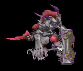 | クロー(280) | 鈍器(100) | 片手剣(280) | |||||||
| トリトン | 神獣 | ボス2 | ||||||||
 | クロー(330) | 鈍器(100) | 片手剣(330) | |||||||
| トランクマン | 神獣 | 一般3 | ||||||||
 | 杖(360) | 鞭(240) | 本(360) | |||||||
| ティンバーマン | 神獣 | 一般4 | ||||||||
 | クロー(200) | 杖(100) | 片手剣(200) | 本(100) | ||||||
| トレント | 神獣 | 一般4 | ||||||||
 | 鎌(200) | 杖(100) | 両手剣(200) | 本(100) | ||||||
| エンティング | 神獣 | セミ1 | ||||||||
 | 杖(390) | 鈍器(260) | 本(390) | |||||||
| エント | 神獣 | ボス1 | ||||||||
 | 箒(310) | 杖(100) | 槍(310) | 本(470) | ||||||
| トーチリザード | 神獣 | 一般1 | ||||||||
 | 銃(100) | 弓(100) | ステッキ(270) | |||||||
| ファイアドレイク | 神獣 | 一般2 | ||||||||
 | 銃(100) | 弓(100) | ステッキ(250) | |||||||
| サラマンダー | 神獣 | セミ1 | ||||||||
 | 銃(100) | 弓(100) | ステッキ(260) | |||||||
| イフリィト | 神獣 | セミ2 | ||||||||
 | 銃(100) | 弓(100) | ステッキ(280) | |||||||
| スルタン | 神獣 | ボス2 | ||||||||
 | 銃(100) | 弓(100) | ステッキ(330) | |||||||
| ディムジェスター | 神獣 | 一般2 | ||||||||
 | 水晶(250) | 笛(380) | 翼(250) | |||||||
| リプリートマーキ | 神獣 | 一般4 | ||||||||
| 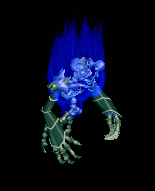 | 銃(200) | 投擲(100) | 弓(200) | |||||||
| シャドウス | 神獣 | セミ2 | ||||||||
 | 鎌(100) | 両手剣(100) | スリング(280) | |||||||
| ダークファイア | 神獣 | ボス1 | ||||||||
 | 箒(100) | 水晶(310) | 槍(100) | 翼(310) | ||||||
| ビビッドブラック | 神獣 | ボス3 | ||||||||
 | 水晶(340) | スリング(510) | 翼(340) | |||||||
| グリムジョーカー | 神獣 | 一般1 | ||||||||
 | 箒(100) | 槍(100) | 鞭(270) | |||||||
| ボイドラスター | 神獣 | 一般3 | ||||||||
| 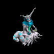 | 笛(360) | ステッキ(240) | ||||||||
| ウィルオウィスプ | 神獣 | セミ1 | ||||||||
 | 銃(260) | 投擲(100) | 弓(260) | |||||||
| ホワイトシャドー | 神獣 | セミ2 | ||||||||
 | 鎌(280) | クロー(100) | 片手剣(100) | 両手剣(280) | ||||||
| ペールライト | 神獣 | ボス3 | ||||||||
 | 笛(510) | ステッキ(340) | ||||||||
| 斧骸骨戦士Ex | アンデット | 一般1 | ||||||||
| | 両手剣(410) | 鈍器(270) | 矢(410) | 足(230) | 槍投擲機(210) | 帰還(160) | 鎌(410) | 魔弾(410) | ||
| 攻撃骸骨戦士Ex | アンデット | 一般2 | ||||||||
| 両手剣(380) | ステッキ(250) | 盾(380) | 足(210) | 槍投擲機(190) | 帰還(150) | 鎌(380) | ||||
| 骸骨狂戦士Ex | アンデット | 一般3 | ||||||||
| | 両手剣(360) | 鈍器(240) | 矢(360) | 足(200) | 槍投擲機(180) | 帰還(140) | 鎌(360) | 魔弾(360) | ||
| 死の斧Ex | アンデット | セミ1 | ||||||||
| | 両手剣(450) | ステッキ(300) | 盾(450) | 足(250) | 槍投擲機(230) | 帰還(180) | 鎌(450) | |||
| 地獄の斧Ex | アンデット | ボス1 | ||||||||
| 両手剣(1200) | 鈍器(800) | 盾(1200) | 足(670) | 槍投擲機(600) | 帰還(480) | 鎌(1200) | ||||
| 両刀骸骨戦士Ex | アンデット | 一般1 | ||||||||
| | 片手剣(410) | 弓(270) | 矢(410) | 兜・帽子(230) | 槍投擲機(210) | 帰還(160) | クロー(410) | 銃(270) | 魔弾(410) | |
| 防御骸骨戦士Ex | アンデット | 一般2 | ||||||||
| | 片手剣(380) | 槍(250) | 弾(380) | 兜・帽子(210) | 槍投擲機(190) | 帰還(150) | クロー(380) | 箒(250) | ||
| 骸骨剣士Ex | アンデット | 一般3 | ||||||||
| | 片手剣(360) | 弓(240) | 矢(360) | 兜・帽子(200) | 槍投擲機(180) | 帰還(140) | クロー(360) | 銃(240) | 魔弾(360) | |
| 死の双剣士Ex | アンデット | セミ1 | ||||||||
| | 片手剣(450) | 槍(300) | 鍵(30) | 兜・帽子(250) | 槍投擲機(230) | 帰還(180) | クロー(450) | 箒(300) | ||
| 地獄の双剣Ex | アンデット | ボス1 | ||||||||
| | 片手剣(1200) | 弓(800) | 鍵(50) | 兜・帽子(670) | 槍投擲機(600) | 帰還(480) | クロー(1200) | 銃(800) | ||
| 大型骸骨Ex | アンデット | 一般1 | ||||||||
| | 鈍器(410) | 両手剣(270) | 弾(410) | 職業鎧(230) | 冠(210) | 能力向上1(160) | 鎌(270) | |||
| 巨人骸骨Ex | アンデット | 一般2 | ||||||||
| | 鈍器(380) | 牙(250) | 矢(380) | 職業鎧(210) | 指輪(190) | 能力向上1(150) | 双剣(250) | 魔弾(380) | ||
| 骸骨騎士Ex | アンデット | 一般3 | ||||||||
| | 鈍器(360) | スリング(240) | 矢(360) | 職業鎧(200) | 爪(180) | 能力向上1(140) | 魔弾(360) | |||
| デスナイトEx | アンデット | セミ1 | ||||||||
| | 鈍器(450) | 牙(300) | 弾(450) | 鎧(250) | 爪(230) | 能力向上1(180) | 双剣(300) | |||
| 地獄の騎士Ex | アンデット | ボス1 | ||||||||
| | 鈍器(1200) | ステッキ(800) | 矢(1200) | 鎧(670) | 爪(600) | 能力向上1(480) | 魔弾(1200) | |||
| リビングデッドEx | アンデット | 一般1 | ||||||||
| | 投擲(410) | 牙(270) | イベント(410) | 腰(230) | 爪(210) | 帰還(160) | 双剣(270) | |||
| グールEx | アンデット | 一般2 | ||||||||
| | 投擲(380) | スリング(250) | イベント(380) | 足(210) | 爪(190) | 帰還(150) | ||||
| ゾンビEx | アンデット | 一般3 | ||||||||
| | 投擲(360) | 牙(240) | イベント(360) | 兜・帽子(200) | 爪(180) | 帰還(140) | 双剣(240) | |||
| スプークEx | アンデット | セミ1 | ||||||||
| | 投擲(450) | スリング(300) | 状態異常回復1(450) | 腰(250) | 爪(230) | 帰還(180) | ||||
| デスピンサーEx | アンデット | ボス1 | ||||||||
| 投擲(1200) | 牙(800) | 状態異常回復1(1200) | 鎧(670) | 爪(600) | 帰還(480) | 双剣(800) | ||||
| スリップワーカーEx | アンデット | 一般1 | ||||||||
| | スリング(410) | ステッキ(270) | 弾(410) | 兜・帽子(230) | 首(210) | ブローチ(120) | ||||
| ルナティックEx | アンデット | 一般2 | ||||||||
| | スリング(380) | ステッキ(250) | 弾(380) | 足(210) | 首(190) | ブローチ(130) | ||||
| プレーガーEx | アンデット | 一般3 | ||||||||
| | スリング(360) | ステッキ(240) | 弾(360) | 腰(200) | 首(180) | ブローチ(140) | ||||
| ジャンキーEx | アンデット | セミ1 | ||||||||
| | スリング(450) | ステッキ(300) | 鍵(30) | 兜・帽子(250) | イヤリング(230) | ブローチ(150) | ||||
| アライブコープスEx | アンデット | ボス1 | ||||||||
| | スリング(1200) | ステッキ(800) | 鍵(60) | 足(670) | 首(600) | ブローチ(160) | ||||
| ゴーストEx | アンデット | 一般1 | ||||||||
| 笛(410) | 翼(270) | 鍵(10) | マント(230) | イヤリング(210) | ブローチ(150) | 水晶(270) | ||||
| イリュージョンEx | アンデット | 一般2 | ||||||||
| | 笛(380) | 翼(250) | 矢(380) | マント(210) | イヤリング(190) | ブローチ(160) | 水晶(250) | 魔弾(380) | ||
| ファントムEx | アンデット | 一般3 | ||||||||
| | 笛(360) | 翼(240) | 矢(360) | マント(200) | イヤリング(180) | ブローチ(170) | 水晶(240) | 魔弾(360) | ||
| バンシーEx | アンデット | セミ1 | ||||||||
| | 笛(450) | 翼(300) | イベント(450) | マント(250) | イヤリング(230) | ブローチ(180) | 水晶(300) | |||
| 幻影Ex | アンデット | ボス1 | ||||||||
| 笛(1200) | 翼(800) | 鍵(1200) | マント(670) | イヤリング(600) | ブローチ(190) | 水晶(800) | ||||
| ミイラEx | アンデット | 一般2 | ||||||||
| | 槍(380) | 杖(250) | 状態異常回復1(380) | 腰(210) | 手首(190) | 能力向上2(150) | 本(250) | 箒(380) | ||
| 包帯人間Ex | アンデット | 一般3 | ||||||||
| | 槍(360) | 杖(240) | 矢(360) | 腰(200) | 手首(180) | 能力向上2(140) | 本(240) | 箒(360) | 魔弾(360) | |
| エンバームドEx | アンデット | 一般4 | ||||||||
| | 槍(300) | 鞭(200) | 状態異常回復1(300) | 腰(170) | 手首(150) | 能力向上2(120) | 箒(300) | |||
| マミーEx | アンデット | セミ1 | ||||||||
| | 槍(450) | 杖(300) | 状態異常回復1(450) | 腰(250) | 手首(230) | 能力向上2(180) | 本(300) | 箒(450) | ||
| マミーキングEx | アンデット | ボス1 | ||||||||
| | 槍(1200) | 鞭(800) | 状態異常回復1(1200) | 腰(670) | 手首(600) | 能力向上2(480) | 箒(1200) | |||
| リビングメイルEx | アンデット | 一般2 | ||||||||
| | 弓(380) | 片手剣(250) | 盾(380) | 鎧(210) | 手首(190) | 能力向上1(150) | クロー(250) | 銃(380) | ||
| 鎧霊Ex | アンデット | 一般3 | ||||||||
| | 弓(360) | 片手剣(240) | 弾(360) | 鎧(200) | 首(180) | 能力向上1(140) | クロー(240) | 銃(360) | ||
| 幽霊鎧Ex | アンデット | 一般4 | ||||||||
| | 弓(300) | 両手剣(200) | 盾(300) | 鎧(170) | 手首(150) | 能力向上1(120) | 鎌(200) | 銃(300) | ||
| 守護鎧Ex | アンデット | セミ1 | ||||||||
| | 弓(450) | 片手剣(300) | 盾(450) | 鎧(250) | 首(230) | 能力向上1(180) | クロー(300) | 銃(450) | ||
| 幻想鎧Ex | アンデット | ボス1 | ||||||||
| | 弓(1200) | 両手剣(800) | 盾(1200) | 鎧(670) | 手首(600) | 能力向上2(480) | 鎌(800) | 銃(1200) | ||
| ヴァンパイアEx | アンデット | 一般3 | ||||||||
| | 鞭(360) | 牙(240) | イベント(360) | 職業鎧(200) | 指輪(180) | ブローチ(200) | 双剣(240) | |||
| 上級ヴァンパイアEx | アンデット | セミ1 | ||||||||
| | 鞭(450) | 笛(300) | イベント(450) | 職業鎧(250) | 指輪(230) | ブローチ(250) | ||||
| 古代ヴァンパイアEx | アンデット | セミ2 | ||||||||
| | 鞭(650) | 牙(430) | 弾(650) | 職業鎧(360) | 指輪(330) | ブローチ(300) | 双剣(430) | |||
| ドラキュラEx | アンデット | ボス1 | ||||||||
| | 鞭(1200) | 笛(800) | cP回復(1200) | 職業鎧(670) | 指輪(600) | ブローチ(400) | ||||
| ノースフェラトゥEx | アンデット | ボス2 | ||||||||
| | 鞭(2000) | 牙(1330) | HP回復(2000) | 職業鎧(1110) | 指輪(1000) | ブローチ(500) | 双剣(1330) | |||
| 死霊魔術師Ex | アンデット | セミ1 | ||||||||
| | 杖(450) | 翼(300) | イベント(450) | グローブ(250) | 冠(230) | 宝石(180) | 本(450) | 水晶(300) | ||
| レイスEx | アンデット | セミ2 | ||||||||
| 杖(650) | 翼(430) | 状態異常回復1(650) | グローブ(360) | 冠(330) | 宝石(260) | 本(650) | 水晶(430) | |||
| ワイトEx | アンデット | セミ3 | ||||||||
| 杖(800) | 投擲(530) | cP回復(800) | グローブ(440) | 冠(400) | 宝石(320) | 本(800) | ||||
| リッチEx | アンデット | ボス2 | ||||||||
| | 杖(2000) | 翼(1330) | HP回復(2000) | グローブ(1110) | 冠(1000) | 宝石(800) | 本(2000) | 水晶(1330) | ||
| アークリッチEx | アンデット | ボス3 | ||||||||
| | 杖(2800) | 投擲(1870) | 状態異常回復2(700) | グローブ(1560) | 冠(1400) | 宝石(1120) | 本(2800) | |||
| ハンターEx | 人間 | 一般1 | ||||||||
| | 弓(410) | 片手剣(270) | 矢(410) | グローブ(230) | 手首(210) | 腕刺青(150) | クロー(270) | 銃(410) | 魔弾(410) | |
| アーチャーEx | 人間 | 一般2 | ||||||||
| | 弓(380) | 片手剣(250) | 矢(380) | グローブ(210) | 手首(190) | 腕刺青(160) | クロー(250) | 銃(380) | 魔弾(380) | |
| アーチャーEx | 人間 | 一般3 | ||||||||
| | 弓(360) | 片手剣(240) | 矢(360) | グローブ(200) | 手首(180) | 腕刺青(170) | クロー(240) | 銃(360) | 魔弾(360) | |
| スナイパーEx | 人間 | セミ1 | ||||||||
| | 弓(450) | 片手剣(300) | 矢(450) | グローブ(250) | 手首(230) | 腕刺青(180) | クロー(300) | 銃(450) | 魔弾(450) | |
| ブラックエルフEx | 人間 | ボス1 | ||||||||
| 弓(1200) | 片手剣(800) | イベント(1200) | グローブ(670) | 手首(600) | 腕刺青(190) | クロー(800) | 銃(1200) | |||
| シーフEx | 人間 | 一般1 | ||||||||
| | 投擲(410) | ステッキ(270) | イベント(410) | 職業鎧(230) | 指輪(210) | 特殊1(160) | ||||
| ローグEx | 人間 | 一般2 | ||||||||
| 投擲(380) | ステッキ(250) | 鍵(20) | 職業鎧(210) | 爪(190) | 特殊1(150) | |||||
| スナッチャーEx | 人間 | 一般3 | ||||||||
| | 投擲(360) | ステッキ(240) | 鍵(30) | 職業鎧(200) | 爪(180) | 特殊1(140) | ||||
| ロバーEx | 人間 | セミ1 | ||||||||
| | 投擲(450) | ステッキ(300) | 弾(450) | 職業鎧(250) | 爪(230) | 特殊1(180) | ||||
| アサシンEx | 人間 | セミ2 | ||||||||
| | 投擲(650) | ステッキ(430) | 矢(650) | 職業鎧(360) | 爪(330) | 特殊1(260) | 魔弾(650) | |||
| レッドアイ信奉者Ex | 人間 | 一般1 | ||||||||
| | 笛(410) | 牙(270) | イベント(410) | 鎧(230) | 槍投擲機(210) | 十字架(50) | 双剣(270) | |||
| 原人Ex | 人間 | 一般2 | ||||||||
| | 笛(380) | 牙(250) | イベント(380) | グローブ(210) | 槍投擲機(190) | 十字架(60) | 双剣(250) | |||
| 原始人Ex | 人間 | 一般3 | ||||||||
| | 笛(360) | 牙(240) | 状態異常回復1(360) | 足(200) | 槍投擲機(180) | 十字架(70) | 双剣(240) | |||
| イーターEx | 人間 | セミ1 | ||||||||
| | 笛(450) | 牙(300) | 状態異常回復1(450) | グローブ(250) | 槍投擲機(230) | 十字架(80) | 双剣(300) | |||
| 呪術者Ex | 人間 | ボス1 | ||||||||
| | 笛(1200) | 牙(800) | 状態異常回復1(1200) | 足(670) | 槍投擲機(600) | 十字架(90) | 双剣(800) | |||
| ストラグラーEx | 人間 | 一般1 | ||||||||
| | 杖(410) | スリング(270) | 弾(410) | 腰(230) | 首(210) | 能力向上2(160) | 本(410) | |||
| 堕落魔法師Ex | 人間 | 一般3 | ||||||||
| | 杖(360) | スリング(240) | イベント(360) | マント(200) | 首(180) | 能力向上2(140) | 本(360) | |||
| ブラックメイジEx | 人間 | 一般4 | ||||||||
| | 杖(300) | スリング(200) | 弾(300) | グローブ(170) | 爪(150) | 宝石(120) | 本(300) | |||
| ソーサラーEx | 人間 | セミ1 | ||||||||
| | 杖(450) | スリング(300) | 状態異常回復2(110) | 職業鎧(250) | 首(230) | 能力向上2(180) | 本(450) | |||
| ドゥームキャスターEx | 人間 | ボス1 | ||||||||
| | 杖(1200) | スリング(800) | 弾(1200) | 兜・帽子(670) | 首(600) | 能力向上2(480) | 本(1200) | |||
| 斧槍兵Ex | 人間 | 一般2 | ||||||||
| | 槍(380) | 両手剣(250) | 状態異常回復1(380) | 鎧(210) | 手首(190) | 十字架(120) | 鎌(250) | 箒(380) | ||
| コートナイトEx | 人間 | 一般3 | ||||||||
| | 槍(360) | 両手剣(240) | イベント(360) | 兜・帽子(200) | 手首(180) | 十字架(130) | 鎌(240) | 箒(360) | ||
| レッドアイ護衛兵Ex | 人間 | 一般4 | ||||||||
| | 槍(300) | 両手剣(200) | 鍵(30) | 鎧(170) | 手首(150) | 十字架(140) | 鎌(200) | 箒(300) | ||
| テンプラーEx | 人間 | セミ2 | ||||||||
| | 槍(650) | 両手剣(430) | 鍵(50) | 兜・帽子(360) | 手首(330) | 十字架(150) | 鎌(430) | 箒(650) | ||
| アベンジャーEx | 人間 | ボス2 | ||||||||
| | 槍(2000) | 両手剣(1330) | 矢(2000) | 鎧(1110) | 手首(1000) | 十字架(160) | 鎌(1330) | 箒(2000) | 魔弾(2000) | |
| 偽伝道師Ex | 人間 | 一般2 | ||||||||
| 鈍器(380) | 翼(250) | 盾(380) | 職業鎧(210) | 冠(190) | 十字架(180) | 水晶(250) | ||||
| エクソシストEx | 人間 | 一般3 | ||||||||
| | 鈍器(360) | 翼(240) | 状態異常回復2(90) | 職業鎧(200) | 冠(180) | 十字架(190) | 水晶(240) | |||
| 偽聖職者Ex | 人間 | 一般4 | ||||||||
| | 鈍器(300) | 翼(200) | 盾(300) | 職業鎧(170) | 首(150) | 十字架(200) | 水晶(200) | |||
| ダークプリーストEx | 人間 | セミ2 | ||||||||
| | 鈍器(650) | 翼(430) | 状態異常回復2(160) | 職業鎧(360) | 首(330) | 十字架(210) | 水晶(430) | |||
| ダークビショップEx | 人間 | ボス2 | ||||||||
| | 鈍器(2000) | 翼(1330) | 盾(2000) | 兜・帽子(1110) | 首(1000) | 十字架(220) | 水晶(1330) | |||
| ダークサマナーEx | 人間 | 一般2 | ||||||||
| | 鞭(380) | 投擲(250) | 弾(380) | 腰(210) | イヤリング(190) | 肩刺青(110) | ||||
| レッドアイ所員Ex | 人間 | 一般3 | ||||||||
| | 鞭(360) | 投擲(240) | 弾(360) | 腰(200) | イヤリング(180) | 肩刺青(120) | ||||
| デビルスカラーEx | 人間 | 一般4 | ||||||||
| | 鞭(300) | 牙(200) | cP回復(300) | 腰(170) | イヤリング(150) | 肩刺青(130) | 双剣(200) | |||
| 降神術師Ex | 人間 | セミ2 | ||||||||
| 鞭(650) | スリング(430) | 弾(650) | 腰(360) | イヤリング(330) | 肩刺青(140) | |||||
| 堕落予言者Ex | 人間 | ボス1 | ||||||||
| | 鞭(1200) | 投擲(800) | cP回復(1200) | 腰(670) | イヤリング(600) | 肩刺青(150) | ||||
| オークEx | 人間 | 一般3 | ||||||||
| | 鈍器(360) | 牙(240) | 弾(360) | 足(200) | 冠(180) | 帰還(140) | 双剣(240) | |||
| ジャイアントEx | 人間 | セミ1 | ||||||||
| | 鈍器(450) | 牙(300) | HP回復(450) | 足(250) | 首(230) | 能力向上1(180) | 双剣(300) | |||
| キクロップスEx | 人間 | セミ1 | ||||||||
| | スリング(450) | 杖(300) | 弾(450) | 足(250) | 爪(230) | 帰還(180) | 本(300) | |||
| コロッサスEx | 人間 | ボス1 | ||||||||
| | 鈍器(1200) | 牙(800) | HP回復(1200) | 足(670) | 指輪(600) | 能力向上1(480) | 双剣(800) | |||
| チタンEx | 人間 | ボス1 | ||||||||
| | スリング(1200) | 杖(800) | 弾(1200) | 足(670) | 冠(600) | 帰還(480) | 本(800) | |||
| エルフ戦士Ex | 人間 | 一般3 | ||||||||
| | 片手剣(360) | 弓(240) | 矢(360) | 鎧(200) | 指輪(180) | 腕刺青(120) | クロー(360) | 銃(240) | 魔弾(360) | |
| エルフ暗殺者Ex | 人間 | 一般4 | ||||||||
| | 片手剣(300) | 投擲(200) | 盾(300) | 兜・帽子(170) | 指輪(150) | 腕刺青(130) | クロー(300) | |||
| エルフ巡察者Ex | 人間 | セミ1 | ||||||||
| | 片手剣(450) | 弓(300) | 矢(450) | 兜・帽子(250) | 指輪(230) | 腕刺青(140) | クロー(450) | 銃(300) | 魔弾(450) | |
| エルフ騎士Ex | 人間 | セミ2 | ||||||||
| | 片手剣(650) | 槍(430) | 盾(650) | 鎧(360) | 指輪(330) | 腕刺青(150) | クロー(650) | 箒(430) | ||
| エルフ王Ex | 人間 | ボス3 | ||||||||
| | 片手剣(2800) | 弓(1870) | 矢(2800) | 鎧(1560) | 指輪(1400) | 腕刺青(160) | クロー(2800) | 銃(1870) | 魔弾(2800) | |
| レッドアイ魔法師Ex | 人間 | 一般4 | ||||||||
| | ステッキ(300) | 笛(200) | 矢(300) | マント(170) | 冠(150) | ブローチ(180) | 魔弾(300) | |||
| レッドアイ幹部Ex | 人間 | セミ1 | ||||||||
| | ステッキ(450) | 鞭(300) | cP回復(450) | マント(250) | 冠(230) | ブローチ(190) | ||||
| レッドアイ元老Ex | 人間 | セミ2 | ||||||||
| | ステッキ(650) | 笛(430) | 矢(650) | マント(360) | 冠(330) | ブローチ(200) | 魔弾(650) | |||
| レッドアイ法術師Ex | 人間 | ボス1 | ||||||||
| | ステッキ(1200) | 杖(800) | 状態異常回復2(300) | マント(670) | 冠(600) | ブローチ(210) | 本(800) | |||
| レッドアイ元帥Ex | 人間 | ボス2 | ||||||||
| | ステッキ(2000) | 笛(1330) | 弾(2000) | マント(1110) | イヤリング(1000) | ブローチ(220) | ||||
| アイウィングEx | 悪魔 | 一般3 | ||||||||
| | 笛(360) | 翼(240) | 状態異常回復1(360) | 兜・帽子(200) | 冠(180) | 帰還(140) | 水晶(240) | |||
| ドゥームスフィアEx | 悪魔 | 一般4 | ||||||||
| | 笛(300) | 翼(200) | 状態異常回復1(300) | 兜・帽子(170) | 首(150) | 帰還(120) | 水晶(200) | |||
| ビホルダーEx | 悪魔 | セミ2 | ||||||||
| | 投擲(650) | 翼(430) | 状態異常回復1(650) | 兜・帽子(360) | 冠(330) | 帰還(260) | 水晶(430) | |||
| アルゴスEx | 悪魔 | セミ3 | ||||||||
| 笛(800) | 翼(530) | 鍵(50) | 兜・帽子(440) | 首(400) | 帰還(320) | 水晶(530) | ||||
| オーバーシアーEx | 悪魔 | ボス2 | ||||||||
| | 投擲(2000) | 翼(1330) | cP回復(2000) | 兜・帽子(1110) | 冠(1000) | 帰還(800) | 水晶(1330) | |||
| コボルトEx | 悪魔 | 一般1 | ||||||||
| | 牙(410) | スリング(270) | 弾(410) | 腰(230) | 爪(210) | 肩刺青(120) | 双剣(410) | |||
| グレムリンEx | 悪魔 | 一般2 | ||||||||
| | 牙(380) | スリング(250) | 弾(380) | 腰(210) | 爪(190) | 肩刺青(130) | 双剣(380) | |||
| ゴブリンEx | 悪魔 | 一般3 | ||||||||
| | 牙(360) | スリング(240) | 弾(360) | 腰(200) | 爪(180) | 肩刺青(140) | 双剣(360) | |||
| ファミリアEx | 悪魔 | 一般4 | ||||||||
| | 牙(300) | スリング(200) | 弾(300) | 腰(170) | 爪(150) | 肩刺青(150) | 双剣(300) | |||
| インプEx | 悪魔 | セミ1 | ||||||||
| | 牙(450) | スリング(300) | 弾(450) | 腰(250) | 爪(230) | 肩刺青(160) | 双剣(450) | |||
| 鷲戦士Ex | 悪魔 | 一般1 | ||||||||
| | 片手剣(410) | 両手剣(270) | 盾(410) | グローブ(230) | 手首(210) | 腕刺青(110) | 鎌(270) | クロー(410) | ||
| 鷲闘士Ex | 悪魔 | 一般2 | ||||||||
| | 片手剣(380) | 弓(250) | 盾(380) | グローブ(210) | 手首(190) | 腕刺青(120) | クロー(380) | 銃(250) | ||
| 鷲狂戦士Ex | 悪魔 | 一般3 | ||||||||
| | 片手剣(360) | 弓(240) | 矢(360) | グローブ(200) | 手首(180) | 腕刺青(130) | クロー(360) | 銃(240) | 魔弾(360) | |
| 鷲剣士Ex | 悪魔 | セミ1 | ||||||||
| | 片手剣(450) | 両手剣(300) | 盾(450) | グローブ(250) | 手首(230) | 腕刺青(140) | 鎌(300) | クロー(450) | ||
| 鷲王Ex | 悪魔 | ボス1 | ||||||||
| | 片手剣(1200) | 弓(800) | 盾(1200) | グローブ(670) | 手首(600) | 腕刺青(150) | クロー(1200) | 銃(800) | ||
| リザードマンEx | 悪魔 | 一般1 | ||||||||
| | 槍(410) | 両手剣(270) | イベント(410) | 鎧(230) | 槍投擲機(210) | 肩刺青(90) | 鎌(270) | 箒(410) | ||
| リザードウォリアEx | 悪魔 | 一般2 | ||||||||
| 槍(380) | 両手剣(250) | イベント(380) | 鎧(210) | 槍投擲機(190) | 肩刺青(100) | 鎌(250) | 箒(380) | |||
| キラーリザードEx | 悪魔 | 一般3 | ||||||||
| | 槍(360) | 両手剣(240) | イベント(360) | 鎧(200) | 槍投擲機(180) | 肩刺青(110) | 鎌(240) | 箒(360) | ||
| ナーガファイタEx | 悪魔 | セミ1 | ||||||||
| | 槍(450) | 両手剣(300) | イベント(450) | 鎧(250) | 槍投擲機(230) | 肩刺青(120) | 鎌(300) | 箒(450) | ||
| ナーガスフィアEx | 悪魔 | ボス1 | ||||||||
| | 槍(1200) | 両手剣(800) | イベント(1200) | グローブ(670) | 槍投擲機(600) | 肩刺青(130) | 鎌(800) | 箒(1200) | ||
| リザードライダーEx | 悪魔 | 一般2 | ||||||||
| | スリング(380) | 槍(250) | イベント(380) | 職業鎧(210) | 首(190) | 能力向上2(150) | 箒(250) | |||
| リザードチャージEx | 悪魔 | 一般3 | ||||||||
| | ステッキ(360) | 槍(240) | イベント(360) | 職業鎧(200) | 首(180) | 能力向上2(140) | 箒(240) | |||
| リザードトルーパEx | 悪魔 | 一般4 | ||||||||
| ステッキ(300) | 弓(200) | 矢(300) | 職業鎧(170) | 首(150) | 能力向上2(120) | 銃(200) | 魔弾(300) | |||
| ナーガナイトEx | 悪魔 | セミ2 | ||||||||
| | ステッキ(650) | 弓(430) | HP回復(650) | 職業鎧(360) | 首(330) | 能力向上2(260) | 銃(430) | |||
| ナーガランサーEx | 悪魔 | ボス2 | ||||||||
| | スリング(2000) | 弓(1330) | 矢(2000) | 職業鎧(1110) | 首(1000) | 能力向上2(800) | 銃(1330) | 魔弾(2000) | ||
| ラットマンEx | 悪魔 | 一般1 | ||||||||
| | 投擲(410) | 笛(270) | 弾(410) | 足(230) | 指輪(210) | 帰還(160) | ||||
| ワーラットEx | 悪魔 | 一般2 | ||||||||
| 投擲(380) | ステッキ(250) | 矢(380) | 足(210) | 槍投擲機(190) | 帰還(150) | 魔弾(380) | ||||
| ラティアンEx | 悪魔 | 一般3 | ||||||||
| | 投擲(360) | 笛(240) | 弾(360) | 足(200) | 手首(180) | 帰還(140) | ||||
| ラットシーフEx | 悪魔 | 一般4 | ||||||||
| | 投擲(300) | ステッキ(200) | 矢(300) | 足(170) | 槍投擲機(150) | 能力向上2(120) | 魔弾(300) | |||
| ラットキングEx | 悪魔 | ボス1 | ||||||||
| | 投擲(1200) | 笛(800) | 弾(1200) | 足(670) | 冠(600) | 能力向上1(480) | ||||
| ピエンドEx | 悪魔 | 一般1 | ||||||||
| 鞭(410) | 杖(270) | 状態異常回復1(410) | 腰(230) | 指輪(210) | 十字架(180) | 本(270) | ||||
| レッサーデーモンEx | 悪魔 | 一般2 | ||||||||
| | 鞭(380) | 牙(250) | 矢(380) | マント(210) | 指輪(190) | 十字架(190) | 双剣(250) | 魔弾(380) | ||
| デーモンEx | 悪魔 | セミ2 | ||||||||
| | 鞭(650) | 杖(430) | cP回復(650) | 腰(360) | 指輪(330) | 十字架(200) | 本(430) | |||
| デビルEx | 悪魔 | セミ3 | ||||||||
| | 鞭(800) | 牙(530) | 矢(800) | マント(440) | 指輪(400) | 十字架(210) | 双剣(530) | 魔弾(800) | ||
| サタンEx | 悪魔 | ボス2 | ||||||||
| | 鞭(2000) | 杖(1330) | 状態異常回復1(2000) | 腰(1110) | 指輪(1000) | 十字架(220) | 本(1330) | |||
| オーガEx | 悪魔 | 一般3 | ||||||||
| | 鈍器(360) | 杖(240) | イベント(360) | 鎧(200) | イヤリング(180) | 能力向上1(140) | 本(240) | |||
| オーガソルジャーEx | 悪魔 | 一般4 | ||||||||
| | 鈍器(300) | スリング(200) | 弾(300) | 鎧(170) | イヤリング(150) | 能力向上1(120) | ||||
| オーガチーフEx | 悪魔 | セミ1 | ||||||||
| | 鈍器(450) | 杖(300) | 状態異常回復1(450) | 鎧(250) | イヤリング(230) | 能力向上1(180) | 本(300) | |||
| オーガオフィサーEx | 悪魔 | セミ3 | ||||||||
| | ステッキ(800) | 弓(530) | HP回復(800) | 鎧(440) | イヤリング(400) | 能力向上1(320) | 銃(530) | |||
| オーガゼネラルEx | 悪魔 | ボス2 | ||||||||
| | 鈍器(2000) | 杖(1330) | 状態異常回復2(500) | 鎧(1110) | イヤリング(1000) | 能力向上1(800) | 本(1330) | |||
| ゴートマンEx | 悪魔 | 一般1 | ||||||||
| | 笛(410) | 鈍器(270) | 状態異常回復2(100) | マント(230) | 冠(210) | 能力向上1(160) | ||||
| ウェアーゴートEx | 悪魔 | 一般3 | ||||||||
| | 鞭(360) | 翼(240) | 鍵(40) | グローブ(200) | 指輪(180) | 宝石(140) | 水晶(240) | |||
| ホーンドEx | 悪魔 | セミ1 | ||||||||
| | ステッキ(450) | 翼(300) | 状態異常回復2(110) | マント(250) | 手首(230) | 宝石(180) | 水晶(300) | |||
| ブレイマEx | 悪魔 | セミ3 | ||||||||
| | 槍(800) | 片手剣(530) | 弾(800) | 職業鎧(440) | 爪(400) | 特殊1(320) | クロー(530) | 箒(800) | ||
| バフォメットEx | 悪魔 | ボス3 | ||||||||
| | 槍(2800) | 鞭(1870) | cP回復(2800) | 足(1560) | 槍投擲機(1400) | 特殊1(1120) | 箒(2800) | |||
| ストーンオブザーEx | 悪魔 | セミ2 | ||||||||
| none(650) | 弓(430) | 矢(650) | 足(360) | 冠(330) | 特殊1(260) | 銃(430) | 魔弾(650) | |||
| ストーントルドEx | 悪魔 | セミ3 | ||||||||
| | none(800) | 鈍器(530) | 盾(800) | 腰(440) | 手首(400) | 能力向上2(320) | ||||
| ストーンラーバEx | 悪魔 | ボス1 | ||||||||
| | none(1200) | 杖(800) | 鍵(550) | マント(670) | イヤリング(600) | 宝石(480) | 本(800) | |||
| ストーンキーパーEx | 悪魔 | ボス2 | ||||||||
| | none(2000) | 片手剣(1330) | 鍵(600) | 足(1110) | 爪(1000) | 宝石(800) | クロー(1330) | |||
| 赤い悪魔Ex | 悪魔 | ボス3 | ||||||||
| | none(2800) | 両手剣(1870) | 鍵(700) | 職業鎧(1560) | 首(1400) | 能力向上1(1120) | 鎌(1870) | |||
| 淡水亀Ex | 動物 | 一般1 | ||||||||
| ステッキ(410) | 杖(270) | 盾(410) | 鎧(230) | 冠(210) | 能力向上2(160) | 本(270) | ||||
| ヒュージタートルEx | 動物 | 一般2 | ||||||||
| | ステッキ(380) | 杖(250) | 状態異常回復2(100) | 鎧(210) | 冠(190) | 能力向上2(150) | 本(250) | |||
| ビッグシェルEx | 動物 | 一般3 | ||||||||
| | ステッキ(360) | 杖(240) | 盾(360) | 鎧(200) | 冠(180) | 能力向上2(140) | 本(240) | |||
| トライアングルEx | 動物 | セミ1 | ||||||||
| | ステッキ(450) | 杖(300) | cP回復(450) | 鎧(250) | 冠(230) | 能力向上2(180) | 本(300) | |||
| タートルドラゴンEx | 動物 | ボス1 | ||||||||
| | ステッキ(1200) | 杖(800) | 盾(1200) | 鎧(670) | 冠(600) | 能力向上2(480) | 本(800) | |||
| スパイダーEx | 動物 | 一般1 | ||||||||
| | 片手剣(410) | 投擲(270) | 矢(410) | グローブ(230) | 首(210) | 帰還(160) | クロー(410) | 魔弾(410) | ||
| フェイズスパイダEx | 動物 | 一般2 | ||||||||
| | 片手剣(380) | 投擲(250) | 矢(380) | グローブ(210) | 首(190) | 帰還(150) | クロー(380) | 魔弾(380) | ||
| ソードスパイダーEx | 動物 | 一般3 | ||||||||
| | 片手剣(360) | 槍(240) | 矢(360) | グローブ(200) | 首(180) | 能力向上1(140) | クロー(360) | 箒(240) | 魔弾(360) | |
| ウィーブウィドウEx | 動物 | セミ1 | ||||||||
| | 片手剣(450) | 槍(300) | 矢(450) | グローブ(250) | 首(230) | 帰還(180) | クロー(450) | 箒(300) | 魔弾(450) | |
| アラクノーイドEx | 動物 | ボス1 | ||||||||
| 片手剣(1200) | 投擲(800) | 矢(1200) | グローブ(670) | 首(600) | 宝石(480) | クロー(1200) | 魔弾(1200) | |||
| スコーピオンEx | 動物 | 一般1 | ||||||||
| | 弓(410) | 槍(270) | 盾(410) | 兜・帽子(230) | イヤリング(210) | 特殊1(160) | 箒(270) | 銃(410) | ||
| ポイズンテールEx | 動物 | 一般2 | ||||||||
| | 弓(380) | 槍(250) | 矢(380) | 兜・帽子(210) | 手首(190) | 特殊1(150) | 箒(250) | 銃(380) | 魔弾(380) | |
| デスピンサーEx | 動物 | 一般3 | ||||||||
| | 弓(360) | 槍(240) | 盾(360) | 兜・帽子(200) | イヤリング(180) | 特殊1(140) | 箒(240) | 銃(360) | ||
| 食人スコーピオンEx | 動物 | セミ2 | ||||||||
| | 弓(650) | 槍(430) | 矢(650) | 兜・帽子(360) | イヤリング(330) | 特殊1(260) | 箒(430) | 銃(650) | 魔弾(650) | |
| スノースコルピオEx | 動物 | ボス2 | ||||||||
| | 弓(2000) | 槍(1330) | 盾(2000) | 兜・帽子(1110) | 手首(1000) | 特殊1(800) | 箒(1330) | 銃(2000) | ||
| 飛海月Ex | 動物 | 一般1 | ||||||||
| | 鞭(410) | スリング(270) | 弾(410) | 腰(230) | 手首(210) | 帰還(160) | ||||
| エアスライムEx | 動物 | 一般2 | ||||||||
| | 鞭(380) | スリング(250) | 弾(380) | 腰(210) | イヤリング(190) | 特殊1(150) | ||||
| アクアスライムEx | 動物 | 一般3 | ||||||||
| | 鞭(360) | スリング(240) | 弾(360) | 腰(200) | 手首(180) | 帰還(140) | ||||
| 水晶烏賊Ex | 動物 | セミ1 | ||||||||
| | 鞭(450) | スリング(300) | 弾(450) | 腰(250) | 手首(230) | 能力向上2(180) | ||||
| クラーケンEx | 動物 | ボス1 | ||||||||
| | 鞭(1200) | スリング(800) | 弾(1200) | 腰(670) | 手首(600) | 帰還(480) | ||||
| ワームEx | 動物 | 一般1 | ||||||||
| | 鈍器(410) | スリング(270) | イベント(410) | マント(230) | 冠(210) | 帰還(160) | ||||
| リーチEx | 動物 | 一般2 | ||||||||
| | 鈍器(380) | 片手剣(250) | イベント(380) | マント(210) | 冠(190) | 帰還(150) | クロー(250) | |||
| マゴットEx | 動物 | 一般3 | ||||||||
| | 鈍器(360) | スリング(240) | イベント(360) | マント(200) | 冠(180) | 帰還(140) | ||||
| クローラーEx | 動物 | 一般4 | ||||||||
| | 鈍器(300) | 片手剣(200) | イベント(300) | マント(170) | 冠(150) | 帰還(120) | クロー(200) | |||
| クリーパーEx | 動物 | セミ1 | ||||||||
| | 鈍器(450) | スリング(300) | イベント(450) | マント(250) | 冠(230) | 帰還(180) | ||||
| クラブシェルEx | 動物 | 一般1 | ||||||||
| | 投擲(410) | 両手剣(270) | 盾(410) | 足(230) | 爪(210) | 帰還(160) | 鎌(270) | |||
| ビッグクラブEx | 動物 | 一般2 | ||||||||
| | 投擲(380) | 両手剣(250) | 状態異常回復1(380) | 足(210) | 指輪(190) | 能力向上2(150) | 鎌(250) | |||
| サイドウォーカーEx | 動物 | 一般3 | ||||||||
| | 投擲(360) | 両手剣(240) | 盾(360) | 足(200) | 爪(180) | 宝石(140) | 鎌(240) | |||
| キングクラブEx | 動物 | セミ1 | ||||||||
| | 投擲(450) | 両手剣(300) | 状態異常回復1(450) | 足(250) | 指輪(230) | 帰還(180) | 鎌(300) | |||
| キャンサーEx | 動物 | ボス1 | ||||||||
| | 投擲(1200) | 両手剣(800) | 状態異常回復1(1200) | 腰(670) | 爪(600) | 宝石(480) | 鎌(800) | |||
| 蟲の群れEx | 動物 | 一般1 | ||||||||
| | 笛(410) | 翼(270) | イベント(410) | グローブ(230) | イヤリング(210) | 帰還(160) | 水晶(270) | |||
| 鋏昆虫の群れEx | 動物 | 一般2 | ||||||||
| | 笛(380) | 翼(250) | イベント(380) | 腰(210) | 首(190) | 帰還(150) | 水晶(250) | |||
| 殺人蚊の群れEx | 動物 | 一般3 | ||||||||
| | 笛(360) | 翼(240) | イベント(360) | 足(200) | イヤリング(180) | 帰還(140) | 水晶(240) | |||
| イナゴの群れEx | 動物 | セミ1 | ||||||||
| | 笛(450) | 翼(300) | イベント(450) | 兜・帽子(250) | 首(230) | 帰還(180) | 水晶(300) | |||
| ディザースターEx | 動物 | ボス1 | ||||||||
| | 笛(1200) | 翼(800) | イベント(1200) | マント(670) | イヤリング(600) | 帰還(480) | 水晶(800) | |||
| 野良犬Ex | 動物 | 一般1 | ||||||||
| | 牙(410) | 笛(270) | 鍵(20) | 職業鎧(230) | 槍投擲機(210) | 特殊1(160) | 双剣(410) | |||
| ウルフEx | 動物 | 一般3 | ||||||||
| | 牙(360) | 弓(240) | 状態異常回復1(360) | マント(200) | 槍投擲機(180) | 特殊1(140) | 双剣(360) | 銃(240) | ||
| レッドアイ警備犬Ex | 動物 | セミ1 | ||||||||
| | 牙(450) | 鞭(300) | 鍵(60) | 職業鎧(250) | 槍投擲機(230) | 特殊1(180) | 双剣(450) | |||
| ダイアーウルフEx | 動物 | セミ2 | ||||||||
| | 牙(650) | 鈍器(430) | cP回復(650) | 足(360) | 槍投擲機(330) | 特殊1(260) | 双剣(650) | |||
| ヘルハウンドEx | 動物 | ボス2 | ||||||||
| | 牙(2000) | 両手剣(1330) | 鍵(130) | 職業鎧(1110) | 槍投擲機(1000) | 特殊1(800) | 鎌(1330) | 双剣(2000) | ||
| 大型モグラEx | 動物 | 一般3 | ||||||||
| | 両手剣(360) | ステッキ(240) | 弾(360) | 職業鎧(200) | 指輪(180) | 能力向上1(140) | 鎌(360) | |||
| 巨大モグラEx | 動物 | 一般4 | ||||||||
| 鞭(300) | 杖(200) | 状態異常回復2(80) | グローブ(170) | 指輪(150) | 能力向上1(120) | 本(200) | ||||
| ディガーEx | 動物 | セミ1 | ||||||||
| | 弓(450) | スリング(300) | 弾(450) | 職業鎧(250) | 指輪(230) | 能力向上1(180) | 銃(450) | |||
| マインスィーパEx | 動物 | セミ2 | ||||||||
| | 鞭(650) | 杖(430) | 弾(650) | グローブ(360) | 指輪(330) | 能力向上1(260) | 本(430) | |||
| ロードブローカーEx | 動物 | ボス1 | ||||||||
| | 笛(1200) | ステッキ(800) | 弾(1200) | 職業鎧(670) | 指輪(600) | 能力向上1(480) | ||||
| ブラックベアーEx | 動物 | 一般3 | ||||||||
| | 牙(360) | 鞭(240) | 状態異常回復1(360) | グローブ(200) | 爪(180) | 宝石(140) | 双剣(360) | |||
| ブラウンベアーEx | 動物 | 一般4 | ||||||||
| | 牙(300) | 笛(200) | HP回復(300) | 足(170) | 爪(150) | 宝石(120) | 双剣(300) | |||
| 北極熊Ex | 動物 | セミ1 | ||||||||
| | 両手剣(450) | 鞭(300) | 状態異常回復2(110) | 鎧(250) | イヤリング(230) | 宝石(180) | 鎌(450) | |||
| キングベアーEx | 動物 | ボス1 | ||||||||
| | 翼(1200) | 笛(800) | 鍵(200) | 兜・帽子(670) | 爪(600) | 宝石(480) | 水晶(1200) | |||
| 弓張月熊Ex | 動物 | ボス3 | ||||||||
| 牙(2800) | 鈍器(1870) | HP回復(2800) | マント(1560) | 爪(1400) | 宝石(1120) | 双剣(2800) | ||||
| ファイアブロアーEx | 神獣 | 一般1 | ||||||||
| | スリング(410) | 牙(270) | 弾(410) | グローブ(230) | 手首(210) | 能力向上2(160) | 双剣(410) | |||
| フーフーEx | 神獣 | 一般2 | ||||||||
| | スリング(380) | 杖(250) | 弾(380) | グローブ(210) | 手首(190) | 能力向上2(150) | 本(250) | |||
| ブレイジャーEx | 神獣 | 一般3 | ||||||||
| | スリング(360) | 牙(240) | 弾(360) | グローブ(200) | 手首(180) | 能力向上2(140) | 双剣(240) | |||
| 炎鬼Ex | 神獣 | セミ1 | ||||||||
| スリング(450) | 杖(300) | 弾(450) | グローブ(250) | 手首(230) | 能力向上2(180) | 本(300) | ||||
| 火炎悪魔Ex | 神獣 | ボス1 | ||||||||
| | スリング(1200) | 牙(800) | 弾(1200) | グローブ(670) | 手首(600) | 能力向上2(480) | 双剣(800) | |||
| オクトパストンEx | 神獣 | 一般1 | ||||||||
| | 投擲(410) | 牙(270) | イベント(410) | マント(230) | 首(210) | 肩刺青(170) | 双剣(270) | |||
| 凍破Ex | 神獣 | 一般2 | ||||||||
| 投擲(380) | 牙(250) | イベント(380) | マント(210) | 首(190) | 肩刺青(180) | 双剣(250) | ||||
| キャストアイEx | 神獣 | 一般3 | ||||||||
| 投擲(360) | 牙(240) | イベント(360) | マント(200) | 首(180) | 肩刺青(190) | 双剣(240) | ||||
| スノーツリーEx | 神獣 | セミ1 | ||||||||
| | 投擲(450) | 牙(300) | イベント(450) | マント(250) | 首(230) | 肩刺青(200) | 双剣(300) | |||
| サーリビラエEx | 神獣 | ボス1 | ||||||||
| | 投擲(1200) | 牙(800) | イベント(1200) | マント(670) | 首(600) | 肩刺青(210) | 双剣(800) | |||
| ガーゴイルEx | 神獣 | 一般1 | ||||||||
| | 鞭(410) | 翼(270) | 鍵(10) | 兜・帽子(230) | 爪(210) | 能力向上1(160) | 水晶(270) | |||
| マーブルガゴイルEx | 神獣 | 一般4 | ||||||||
| 鞭(300) | 翼(200) | 鍵(10) | 兜・帽子(170) | 爪(150) | 能力向上1(120) | 水晶(200) | ||||
| エボニーガゴイルEx | 神獣 | セミ1 | ||||||||
| | 鞭(450) | 翼(300) | 鍵(20) | 兜・帽子(250) | 爪(230) | 能力向上1(180) | 水晶(300) | |||
| オニキスガゴイルEx | 神獣 | セミ2 | ||||||||
| | 鞭(650) | 翼(430) | 鍵(40) | 兜・帽子(360) | 爪(330) | 能力向上1(260) | 水晶(430) | |||
| オデロンガゴイルEx | 神獣 | ボス2 | ||||||||
| | 鞭(2000) | 投擲(1330) | 鍵(60) | 兜・帽子(1110) | 爪(1000) | 能力向上1(800) | ||||
| ゴーレムEx | 神獣 | 一般2 | ||||||||
| | 両手剣(380) | 杖(250) | 状態異常回復2(100) | 足(210) | 爪(190) | 腕刺青(130) | 鎌(380) | 本(250) | ||
| クレイゴーレムEx | 神獣 | 一般3 | ||||||||
| | 両手剣(360) | 杖(240) | 状態異常回復2(90) | 足(200) | 槍投擲機(180) | 腕刺青(140) | 鎌(360) | 本(240) | ||
| ロックゴーレムEx | 神獣 | 一般4 | ||||||||
| | 両手剣(300) | ステッキ(200) | 状態異常回復2(80) | 足(170) | 槍投擲機(150) | 腕刺青(150) | 鎌(300) | |||
| メタルゴーレムEx | 神獣 | セミ3 | ||||||||
| | 両手剣(800) | スリング(530) | 状態異常回復2(200) | 足(440) | 槍投擲機(400) | 腕刺青(160) | 鎌(800) | |||
| ダイヤゴーレムEx | 神獣 | ボス1 | ||||||||
| | 両手剣(1200) | 鈍器(800) | 状態異常回復2(300) | 足(670) | 冠(600) | 腕刺青(170) | 鎌(1200) | |||
| パンEx | 神獣 | 一般1 | ||||||||
| 笛(410) | 槍(270) | 状態異常回復1(410) | 職業鎧(230) | 槍投擲機(210) | 宝石(160) | 箒(270) | ||||
| サティロスEx | 神獣 | 一般4 | ||||||||
| | 笛(300) | 槍(200) | 状態異常回復1(300) | 職業鎧(170) | 槍投擲機(150) | 宝石(120) | 箒(200) | |||
| ケンタウロスEx | 神獣 | セミ1 | ||||||||
| | 笛(450) | 槍(300) | 状態異常回復1(450) | 職業鎧(250) | 槍投擲機(230) | 宝石(180) | 箒(300) | |||
| ケンタウロス騎士Ex | 神獣 | セミ2 | ||||||||
| | 笛(650) | 槍(430) | 状態異常回復1(650) | 職業鎧(360) | 槍投擲機(330) | 宝石(260) | 箒(430) | |||
| ダークエルフ王Ex | 神獣 | ボス2 | ||||||||
| 笛(2000) | 槍(1330) | 状態異常回復1(2000) | 職業鎧(1110) | 槍投擲機(1000) | 宝石(800) | 箒(1330) | ||||
| ニックスEx | 神獣 | 一般2 | ||||||||
| | 鈍器(380) | 片手剣(250) | 鍵(30) | 鎧(210) | イヤリング(190) | 肩刺青(110) | クロー(250) | |||
| メロウEx | 神獣 | 一般3 | ||||||||
| | 鈍器(360) | 片手剣(240) | イベント(360) | 鎧(200) | イヤリング(180) | 肩刺青(120) | クロー(240) | |||
| マーマンEx | 神獣 | 一般4 | ||||||||
| | 鈍器(300) | 片手剣(200) | イベント(300) | 鎧(170) | イヤリング(150) | 肩刺青(130) | クロー(200) | |||
| マーマンファイタEx | 神獣 | セミ2 | ||||||||
| 鈍器(650) | 片手剣(430) | イベント(650) | 鎧(360) | イヤリング(330) | 肩刺青(140) | クロー(430) | ||||
| トリトンEx | 神獣 | ボス2 | ||||||||
| | 鈍器(2000) | 片手剣(1330) | 鍵(210) | 鎧(1110) | イヤリング(1000) | 肩刺青(150) | クロー(1330) | |||
| トランクマンEx | 神獣 | 一般3 | ||||||||
| | 杖(360) | 鞭(240) | イベント(360) | 腰(200) | 指輪(180) | 能力向上1(140) | 本(360) | |||
| ティンバーマンEx | 神獣 | 一般4 | ||||||||
| | 杖(300) | 片手剣(200) | HP回復(300) | グローブ(170) | 首(150) | 能力向上1(120) | クロー(200) | 本(300) | ||
| トレントEx | 神獣 | 一般4 | ||||||||
| | 杖(300) | 両手剣(200) | cP回復(300) | 腰(170) | 冠(150) | 能力向上1(120) | 鎌(200) | 本(300) | ||
| エンティングEx | 神獣 | セミ1 | ||||||||
| | 杖(450) | 鈍器(300) | HP回復(450) | 腰(250) | イヤリング(230) | 能力向上1(180) | 本(450) | |||
| エントEx | 神獣 | ボス1 | ||||||||
| | 杖(1200) | 槍(800) | cP回復(1200) | 腰(670) | イヤリング(600) | 能力向上1(480) | 本(1200) | 箒(800) | ||
| トーチリザードEx | 神獣 | 一般1 | ||||||||
| | 弓(410) | ステッキ(270) | 矢(410) | 足(230) | 冠(210) | 能力向上2(160) | 銃(410) | 魔弾(410) | ||
| ファイアドレイクEx | 神獣 | 一般2 | ||||||||
| | 弓(380) | ステッキ(250) | 矢(380) | 兜・帽子(210) | 冠(190) | 能力向上2(150) | 銃(380) | 魔弾(380) | ||
| サラマンダEx | 神獣 | セミ1 | ||||||||
| | 弓(450) | ステッキ(300) | 矢(450) | 足(250) | 冠(230) | 能力向上2(180) | 銃(450) | 魔弾(450) | ||
| イフリィトEx | 神獣 | セミ2 | ||||||||
| | 弓(650) | ステッキ(430) | 矢(650) | マント(360) | 首(330) | 能力向上2(260) | 銃(650) | 魔弾(650) | ||
| スルタンEx | 神獣 | ボス2 | ||||||||
| | 弓(2000) | ステッキ(1330) | 矢(2000) | 足(1110) | 首(1000) | 能力向上2(800) | 銃(2000) | 魔弾(2000) | ||
| ディムジェスターEx | 神獣 | 一般2 | ||||||||
| | 笛(380) | 翼(250) | 盾(380) | 兜・帽子(210) | 指輪(190) | 特殊1(150) | 水晶(250) | |||
| リプリートマーキEx | 神獣 | 一般4 | ||||||||
| 投擲(300) | 弓(200) | 盾(300) | マント(170) | 指輪(150) | 特殊1(120) | 銃(200) | ||||
| シャドウスEx | 神獣 | セミ2 | ||||||||
| | 両手剣(650) | スリング(430) | 盾(650) | グローブ(360) | 手首(330) | 特殊1(260) | 鎌(650) | |||
| ダークファイアEx | 神獣 | ボス1 | ||||||||
| | 槍(1200) | 翼(800) | HP回復(1200) | 職業鎧(670) | 指輪(600) | 特殊1(480) | 箒(1200) | 水晶(800) | ||
| ビビッドブラックEx | 神獣 | ボス3 | ||||||||
| | スリング(2800) | 翼(1870) | 弾(2800) | 兜・帽子(1560) | イヤリング(1400) | 特殊1(1120) | 水晶(1870) | |||
| グリムジョーカーEx | 神獣 | 一般1 | ||||||||
| | 槍(410) | 鞭(270) | 盾(410) | 鎧(230) | 指輪(210) | 特殊1(160) | 箒(410) | |||
| ボイドラスターEx | 神獣 | 一般3 | ||||||||
| 笛(360) | ステッキ(240) | 盾(360) | マント(200) | 指輪(180) | 特殊1(140) | |||||
| ウィルオウィスプEx | 神獣 | セミ1 | ||||||||
| | 投擲(450) | 弓(300) | 盾(450) | 腰(250) | 指輪(230) | 特殊1(180) | 銃(300) | |||
| ホワイトシャドーEx | 神獣 | セミ2 | ||||||||
| | 片手剣(650) | 両手剣(430) | 盾(650) | 鎧(360) | 手首(330) | 特殊1(260) | 鎌(430) | クロー(650) | ||
| ペールライトEx | 神獣 | ボス3 | ||||||||
| | 笛(2800) | ステッキ(1870) | 盾(2800) | 腰(1560) | 手首(1400) | 帰還(1120) | ||||
| 骸骨サンタ | アンデット | ボス3 | ||||||||
 | 弓(1210) | 片手剣(810) | 矢(1210) | グローブ(700) | 手首(610) | 腕刺青(150) | クロー(810) | 銃(1210) | 魔弾(1210) | |
| 斧骸骨戦士Zin | アンデット | 一般1 | ||||||||
| | 両手剣(1210) | 鈍器(810) | 矢(1210) | 足(670) | 槍投擲機(610) | 帰還(480) | 鎌(1210) | 魔弾(1210) | ||
| 攻撃骸骨戦士Zin | アンデット | 一般2 | ||||||||
| 両手剣(1380) | ステッキ(920) | 盾(1380) | 足(770) | 槍投擲機(690) | 帰還(550) | 鎌(1380) | ||||
| 骸骨狂戦士Zin | アンデット | 一般3 | ||||||||
| | 両手剣(1560) | 鈍器(1040) | 矢(1560) | 足(870) | 槍投擲機(780) | 帰還(620) | 鎌(1560) | 魔弾(1560) | ||
| 死の斧Zin | アンデット | セミ1 | ||||||||
| | 両手剣(650) | ステッキ(430) | 盾(650) | 足(360) | 槍投擲機(330) | 帰還(260) | 鎌(650) | |||
| 地獄の斧Zin | アンデット | ボス1 | ||||||||
| 両手剣(1000) | 鈍器(670) | 盾(1000) | 足(560) | 槍投擲機(500) | 帰還(400) | 鎌(1000) | ||||
| 両刀骸骨戦士Zin | アンデット | 一般1 | ||||||||
| | 片手剣(1210) | 弓(810) | 矢(1210) | 兜・帽子(670) | 槍投擲機(610) | 帰還(480) | クロー(1210) | 銃(810) | 魔弾(1210) | |
| 防御骸骨戦士Zin | アンデット | 一般2 | ||||||||
| | 片手剣(1380) | 槍(920) | 弾(1380) | 兜・帽子(770) | 槍投擲機(690) | 帰還(550) | クロー(1380) | 箒(920) | ||
| 骸骨剣士Zin | アンデット | 一般3 | ||||||||
| | 片手剣(1560) | 弓(1040) | 矢(1560) | 兜・帽子(870) | 槍投擲機(780) | 帰還(620) | クロー(1560) | 銃(1040) | 魔弾(1560) | |
| 死の双剣士Zin | アンデット | セミ1 | ||||||||
| | 片手剣(650) | 槍(430) | 鍵(10) | 兜・帽子(360) | 槍投擲機(330) | 帰還(260) | クロー(650) | 箒(430) | ||
| 地獄の双剣Zin | アンデット | ボス1 | ||||||||
| | 片手剣(1000) | 弓(670) | 鍵(40) | 兜・帽子(560) | 槍投擲機(500) | 帰還(400) | クロー(1000) | 銃(670) | ||
| 大型骸骨Zin | アンデット | 一般1 | ||||||||
| | 鈍器(1210) | 両手剣(810) | 弾(1210) | 職業鎧(670) | 冠(610) | 能力向上1(480) | 鎌(810) | |||
| 巨人骸骨Zin | アンデット | 一般2 | ||||||||
| | 鈍器(1380) | 牙(920) | 矢(1380) | 職業鎧(770) | 指輪(690) | 能力向上1(550) | 双剣(920) | 魔弾(1380) | ||
| 骸骨騎士Zin | アンデット | 一般3 | ||||||||
| | 鈍器(1560) | スリング(1040) | 矢(1560) | 職業鎧(870) | 爪(780) | 能力向上1(620) | 魔弾(1560) | |||
| デスナイトZin | アンデット | セミ1 | ||||||||
| | 鈍器(650) | 牙(430) | 弾(650) | 鎧(360) | 爪(330) | 能力向上1(260) | 双剣(430) | |||
| 地獄の騎士Zin | アンデット | ボス1 | ||||||||
| | 鈍器(1000) | ステッキ(670) | 矢(1000) | 鎧(560) | 爪(500) | 能力向上1(400) | 魔弾(1000) | |||
| リビングデッドZin | アンデット | 一般1 | ||||||||
| | 投擲(1210) | 牙(810) | イベント(1210) | 腰(670) | 爪(610) | 帰還(480) | 双剣(810) | |||
| グールZin | アンデット | 一般2 | ||||||||
| | 投擲(1380) | スリング(920) | イベント(1380) | 足(770) | 爪(690) | 帰還(550) | ||||
| ゾンビZin | アンデット | 一般3 | ||||||||
| | 投擲(1560) | 牙(1040) | イベント(1560) | 兜・帽子(870) | 爪(780) | 帰還(620) | 双剣(1040) | |||
| スプクZin | アンデット | セミ1 | ||||||||
| | 投擲(650) | スリング(430) | 状態異常回復1(650) | 腰(360) | 爪(330) | 帰還(260) | ||||
| デスピンサーZin | アンデット | ボス1 | ||||||||
| 投擲(1000) | 牙(670) | 状態異常回復1(1000) | 鎧(560) | 爪(500) | 帰還(400) | 双剣(670) | ||||
| スリップワーカーZin | アンデット | 一般1 | ||||||||
| | スリング(1210) | ステッキ(810) | 弾(1210) | 兜・帽子(670) | 首(610) | ブローチ(120) | ||||
| ルナティックZin | アンデット | 一般2 | ||||||||
| | スリング(1380) | ステッキ(920) | 弾(1380) | 足(770) | 首(690) | ブローチ(130) | ||||
| プレーガーZin | アンデット | 一般3 | ||||||||
| | スリング(1560) | ステッキ(1040) | 弾(1560) | 腰(870) | 首(780) | ブローチ(140) | ||||
| ジャンキーZin | アンデット | セミ1 | ||||||||
| | スリング(650) | ステッキ(430) | 鍵(60) | 兜・帽子(360) | イヤリング(330) | ブローチ(150) | ||||
| アライブコープスZin | アンデット | ボス1 | ||||||||
| | スリング(1000) | ステッキ(670) | 鍵(130) | 足(560) | 首(500) | ブローチ(160) | ||||
| ゴーストZin | アンデット | 一般1 | ||||||||
| 笛(1210) | 翼(810) | 鍵(70) | マント(670) | イヤリング(610) | ブローチ(150) | 水晶(810) | ||||
| イリュージョンZin | アンデット | 一般2 | ||||||||
| | 笛(1380) | 翼(920) | 矢(1380) | マント(770) | イヤリング(690) | ブローチ(160) | 水晶(920) | 魔弾(1380) | ||
| ファントムZin | アンデット | 一般3 | ||||||||
| | 笛(1560) | 翼(1040) | 矢(1560) | マント(870) | イヤリング(780) | ブローチ(170) | 水晶(1040) | 魔弾(1560) | ||
| バンシーZin | アンデット | セミ1 | ||||||||
| | 笛(650) | 翼(430) | イベント(650) | マント(360) | イヤリング(330) | ブローチ(180) | 水晶(430) | |||
| 幻影Zin | アンデット | ボス1 | ||||||||
| 笛(1000) | 翼(670) | 鍵(160) | マント(560) | イヤリング(500) | ブローチ(190) | 水晶(670) | ||||
| ミイラZin | アンデット | 一般2 | ||||||||
| | 槍(1380) | 杖(920) | 状態異常回復1(1380) | 腰(770) | 手首(690) | 能力向上2(550) | 本(920) | 箒(1380) | ||
| 包帯人間Zin | アンデット | 一般3 | ||||||||
| | 槍(1560) | 杖(1040) | 矢(1560) | 腰(870) | 手首(780) | 能力向上2(620) | 本(1040) | 箒(1560) | 魔弾(1560) | |
| エンバームドZin | アンデット | 一般4 | ||||||||
| | 槍(1200) | 鞭(800) | 状態異常回復1(1200) | 腰(670) | 手首(600) | 能力向上2(480) | 箒(1200) | |||
| マミーZin | アンデット | セミ1 | ||||||||
| | 槍(650) | 杖(430) | 状態異常回復1(650) | 腰(360) | 手首(330) | 能力向上2(260) | 本(430) | 箒(650) | ||
| マミーキングZin | アンデット | ボス1 | ||||||||
| | 槍(1000) | 鞭(670) | 状態異常回復1(1000) | 腰(560) | 手首(500) | 能力向上2(400) | 箒(1000) | |||
| リビングメイルZin | アンデット | 一般2 | ||||||||
| | 弓(1380) | 片手剣(920) | 盾(1380) | 鎧(770) | 手首(690) | 能力向上1(550) | クロー(920) | 銃(1380) | ||
| 鎧霊Zin | アンデット | 一般3 | ||||||||
| | 弓(1560) | 片手剣(1040) | 弾(1560) | 鎧(870) | 首(780) | 能力向上1(620) | クロー(1040) | 銃(1560) | ||
| 幽霊鎧Zin | アンデット | 一般4 | ||||||||
| | 弓(1200) | 両手剣(800) | 盾(1200) | 鎧(670) | 手首(600) | 能力向上1(480) | 鎌(800) | 銃(1200) | ||
| 守護鎧Zin | アンデット | セミ1 | ||||||||
| | 弓(650) | 片手剣(430) | 盾(650) | 鎧(360) | 首(330) | 能力向上1(260) | クロー(430) | 銃(650) | ||
| 幻想鎧Zin | アンデット | ボス1 | ||||||||
| | 弓(1000) | 両手剣(670) | 盾(1000) | 鎧(560) | 手首(500) | 能力向上2(400) | 鎌(670) | 銃(1000) | ||
| ヴァンパイアZin | アンデット | 一般3 | ||||||||
| | 鞭(1560) | 牙(1040) | イベント(1560) | 職業鎧(870) | 指輪(780) | ブローチ(200) | 双剣(1040) | |||
| 上級ヴァンパイアZin | アンデット | セミ1 | ||||||||
| | 鞭(650) | 笛(430) | イベント(650) | 職業鎧(360) | 指輪(330) | ブローチ(250) | ||||
| 古代ヴァンパイアZin | アンデット | セミ2 | ||||||||
| | 鞭(750) | 牙(500) | 弾(750) | 職業鎧(420) | 指輪(380) | ブローチ(300) | 双剣(500) | |||
| ドラキュラZin | アンデット | ボス1 | ||||||||
| | 鞭(1000) | 笛(670) | cP回復(1000) | 職業鎧(560) | 指輪(500) | ブローチ(400) | ||||
| ノースフェラトゥZin | アンデット | ボス2 | ||||||||
| | 鞭(1100) | 牙(730) | HP回復(1100) | 職業鎧(610) | 指輪(550) | ブローチ(500) | 双剣(730) | |||
| 死霊魔術師Zin | アンデット | セミ1 | ||||||||
| | 杖(650) | 翼(430) | イベント(650) | グローブ(360) | 冠(330) | 宝石(260) | 本(650) | 水晶(430) | ||
| レイスZin | アンデット | セミ2 | ||||||||
| 杖(750) | 翼(500) | 状態異常回復1(750) | グローブ(420) | 冠(380) | 宝石(300) | 本(750) | 水晶(500) | |||
| ワイトZin | アンデット | セミ3 | ||||||||
| 杖(900) | 投擲(600) | cP回復(900) | グローブ(500) | 冠(450) | 宝石(360) | 本(900) | ||||
| リッチZin | アンデット | ボス2 | ||||||||
| | 杖(1100) | 翼(730) | HP回復(1100) | グローブ(610) | 冠(550) | 宝石(440) | 本(1100) | 水晶(730) | ||
| アークリッチZin | アンデット | ボス3 | ||||||||
| | 杖(1200) | 投擲(800) | 状態異常回復2(300) | グローブ(670) | 冠(600) | 宝石(480) | 本(1200) | |||
| ハンターZin | 人間 | 一般1 | ||||||||
| | 弓(1210) | 片手剣(810) | 矢(1210) | グローブ(670) | 手首(610) | 腕刺青(150) | クロー(810) | 銃(1210) | 魔弾(1210) | |
| アーチャーZin | 人間 | 一般2 | ||||||||
| | 弓(1380) | 片手剣(920) | 矢(1380) | グローブ(770) | 手首(690) | 腕刺青(160) | クロー(920) | 銃(1380) | 魔弾(1380) | |
| アーチャーZin | 人間 | 一般3 | ||||||||
| | 弓(1560) | 片手剣(1040) | 矢(1560) | グローブ(870) | 手首(780) | 腕刺青(170) | クロー(1040) | 銃(1560) | 魔弾(1560) | |
| スナイパーZin | 人間 | セミ1 | ||||||||
| | 弓(650) | 片手剣(430) | 矢(650) | グローブ(360) | 手首(330) | 腕刺青(180) | クロー(430) | 銃(650) | 魔弾(650) | |
| ブラックエルフZin | 人間 | ボス1 | ||||||||
| 弓(1000) | 片手剣(670) | イベント(1000) | グローブ(560) | 手首(500) | 腕刺青(190) | クロー(670) | 銃(1000) | |||
| シーフZin | 人間 | 一般1 | ||||||||
| | 投擲(1210) | ステッキ(810) | イベント(1210) | 職業鎧(670) | 指輪(610) | 特殊1(480) | ||||
| ローグZin | 人間 | 一般2 | ||||||||
| 投擲(1380) | ステッキ(920) | 鍵(110) | 職業鎧(770) | 爪(690) | 特殊1(550) | |||||
| スナッチャーZin | 人間 | 一般3 | ||||||||
| | 投擲(1560) | ステッキ(1040) | 鍵(170) | 職業鎧(870) | 爪(780) | 特殊1(620) | ||||
| ロバーZin | 人間 | セミ1 | ||||||||
| | 投擲(650) | ステッキ(430) | 弾(650) | 職業鎧(360) | 爪(330) | 特殊1(260) | ||||
| アサシンZin | 人間 | セミ2 | ||||||||
| | 投擲(750) | ステッキ(500) | 矢(750) | 職業鎧(420) | 爪(380) | 特殊1(300) | 魔弾(750) | |||
| レッドアイ信奉者Zin | 人間 | 一般1 | ||||||||
| | 笛(1210) | 牙(810) | イベント(1210) | 鎧(670) | 槍投擲機(610) | 十字架(50) | 双剣(810) | |||
| 原人Zin | 人間 | 一般2 | ||||||||
| | 笛(1380) | 牙(920) | イベント(1380) | グローブ(770) | 槍投擲機(690) | 十字架(60) | 双剣(920) | |||
| 原始人Zin | 人間 | 一般3 | ||||||||
| | 笛(1560) | 牙(1040) | 状態異常回復1(1560) | 足(870) | 槍投擲機(780) | 十字架(70) | 双剣(1040) | |||
| イーターZin | 人間 | セミ1 | ||||||||
| | 笛(650) | 牙(430) | 状態異常回復1(650) | グローブ(360) | 槍投擲機(330) | 十字架(80) | 双剣(430) | |||
| 呪術者Zin | 人間 | ボス1 | ||||||||
| | 笛(1000) | 牙(670) | 状態異常回復1(1000) | 足(560) | 槍投擲機(500) | 十字架(90) | 双剣(670) | |||
| ストラグラーZin | 人間 | 一般1 | ||||||||
| | 杖(1210) | スリング(810) | 弾(1210) | 腰(670) | 首(610) | 能力向上2(480) | 本(1210) | |||
| 堕落魔法師Zin | 人間 | 一般3 | ||||||||
| | 杖(1560) | スリング(1040) | イベント(1560) | マント(870) | 首(780) | 能力向上2(620) | 本(1560) | |||
| ブラックメイジZin | 人間 | 一般4 | ||||||||
| | 杖(1200) | スリング(800) | 弾(1200) | グローブ(670) | 爪(600) | 宝石(480) | 本(1200) | |||
| ソーサラーZin | 人間 | セミ1 | ||||||||
| | 杖(650) | スリング(430) | 状態異常回復2(160) | 職業鎧(360) | 首(330) | 能力向上2(260) | 本(650) | |||
| ドゥームキャスターZin | 人間 | ボス1 | ||||||||
| | 杖(1000) | スリング(670) | 弾(1000) | 兜・帽子(560) | 首(500) | 能力向上2(400) | 本(1000) | |||
| 斧槍兵Zin | 人間 | 一般2 | ||||||||
| | 槍(1380) | 両手剣(920) | 状態異常回復1(1380) | 鎧(770) | 手首(690) | 十字架(120) | 鎌(920) | 箒(1380) | ||
| コートナイトZin | 人間 | 一般3 | ||||||||
| | 槍(1560) | 両手剣(1040) | イベント(1560) | 兜・帽子(870) | 手首(780) | 十字架(130) | 鎌(1040) | 箒(1560) | ||
| レッドアイ護衛兵Zin | 人間 | 一般4 | ||||||||
| | 槍(1200) | 両手剣(800) | 鍵(70) | 鎧(670) | 手首(600) | 十字架(140) | 鎌(800) | 箒(1200) | ||
| テンプラーZin | 人間 | セミ2 | ||||||||
| | 槍(750) | 両手剣(500) | 鍵(80) | 兜・帽子(420) | 手首(380) | 十字架(150) | 鎌(500) | 箒(750) | ||
| アベンジャーZin | 人間 | ボス2 | ||||||||
| | 槍(1100) | 両手剣(730) | 矢(1100) | 鎧(610) | 手首(550) | 十字架(160) | 鎌(730) | 箒(1100) | 魔弾(1100) | |
| 偽伝道師Zin | 人間 | 一般2 | ||||||||
| 鈍器(1380) | 翼(920) | 盾(1380) | 職業鎧(770) | 冠(690) | 十字架(180) | 水晶(920) | ||||
| エクソシストZin | 人間 | 一般3 | ||||||||
| | 鈍器(1560) | 翼(1040) | 状態異常回復2(390) | 職業鎧(870) | 冠(780) | 十字架(190) | 水晶(1040) | |||
| 偽聖職者Zin | 人間 | 一般4 | ||||||||
| | 鈍器(1200) | 翼(800) | 盾(1200) | 職業鎧(670) | 首(600) | 十字架(200) | 水晶(800) | |||
| ダークプリーストZin | 人間 | セミ2 | ||||||||
| | 鈍器(750) | 翼(500) | 状態異常回復2(190) | 職業鎧(420) | 首(380) | 十字架(210) | 水晶(500) | |||
| ダークビショップZin | 人間 | ボス2 | ||||||||
| | 鈍器(1100) | 翼(730) | 盾(1100) | 兜・帽子(610) | 首(550) | 十字架(220) | 水晶(730) | |||
| ダークサマナーZin | 人間 | 一般2 | ||||||||
| | 鞭(1380) | 投擲(920) | 弾(1380) | 腰(770) | イヤリング(690) | 肩刺青(110) | ||||
| レッドアイ所員Zin | 人間 | 一般3 | ||||||||
| | 鞭(1560) | 投擲(1040) | 弾(1560) | 腰(870) | イヤリング(780) | 肩刺青(120) | ||||
| デビルスカラーZin | 人間 | 一般4 | ||||||||
| | 鞭(1200) | 牙(800) | cP回復(1200) | 腰(670) | イヤリング(600) | 肩刺青(130) | 双剣(800) | |||
| 降神術師Zin | 人間 | セミ2 | ||||||||
| 鞭(750) | スリング(500) | 弾(750) | 腰(420) | イヤリング(380) | 肩刺青(140) | |||||
| 堕落予言者Zin | 人間 | ボス1 | ||||||||
| | 鞭(1000) | 投擲(670) | cP回復(1000) | 腰(560) | イヤリング(500) | 肩刺青(150) | ||||
| オークZin | 人間 | 一般3 | ||||||||
| | 鈍器(1560) | 牙(1040) | 弾(1560) | 足(870) | 冠(780) | 帰還(620) | 双剣(1040) | |||
| ジャイアントZin | 人間 | セミ1 | ||||||||
| | 鈍器(650) | 牙(430) | HP回復(650) | 足(360) | 首(330) | 能力向上1(260) | 双剣(430) | |||
| キクロップスZin | 人間 | セミ1 | ||||||||
| | スリング(650) | 杖(430) | 弾(650) | 足(360) | 爪(330) | 帰還(260) | 本(430) | |||
| コロッサスZin | 人間 | ボス1 | ||||||||
| | 鈍器(1000) | 牙(670) | HP回復(1000) | 足(560) | 指輪(500) | 能力向上1(400) | 双剣(670) | |||
| チタンZin | 人間 | ボス1 | ||||||||
| | スリング(1000) | 杖(670) | 弾(1000) | 足(560) | 冠(500) | 帰還(400) | 本(670) | |||
| エルフ戦士Zin | 人間 | 一般3 | ||||||||
| | 片手剣(1560) | 弓(1040) | 矢(1560) | 鎧(870) | 指輪(780) | 腕刺青(120) | クロー(1560) | 銃(1040) | 魔弾(1560) | |
| エルフ暗殺者Zin | 人間 | 一般4 | ||||||||
| | 片手剣(1200) | 投擲(800) | 盾(1200) | 兜・帽子(670) | 指輪(600) | 腕刺青(130) | クロー(1200) | |||
| エルフ巡察者Zin | 人間 | セミ1 | ||||||||
| | 片手剣(650) | 弓(430) | 矢(650) | 兜・帽子(360) | 指輪(330) | 腕刺青(140) | クロー(650) | 銃(430) | 魔弾(650) | |
| エルフ騎士Zin | 人間 | セミ2 | ||||||||
| | 片手剣(750) | 槍(500) | 盾(750) | 鎧(420) | 指輪(380) | 腕刺青(150) | クロー(750) | 箒(500) | ||
| エルフ王Zin | 人間 | ボス3 | ||||||||
| | 片手剣(1200) | 弓(800) | 矢(1200) | 鎧(670) | 指輪(600) | 腕刺青(160) | クロー(1200) | 銃(800) | 魔弾(1200) | |
| レッドアイ魔法師Zin | 人間 | 一般4 | ||||||||
| | ステッキ(1200) | 笛(800) | 矢(1200) | マント(670) | 冠(600) | ブローチ(180) | 魔弾(1200) | |||
| レッドアイ幹部Zin | 人間 | セミ1 | ||||||||
| | ステッキ(650) | 鞭(430) | cP回復(650) | マント(360) | 冠(330) | ブローチ(190) | ||||
| レッドアイ元老Zin | 人間 | セミ2 | ||||||||
| | ステッキ(750) | 笛(500) | 矢(750) | マント(420) | 冠(380) | ブローチ(200) | 魔弾(750) | |||
| レッドアイ法術師Zin | 人間 | ボス1 | ||||||||
| | ステッキ(1000) | 杖(670) | 状態異常回復2(250) | マント(560) | 冠(500) | ブローチ(210) | 本(670) | |||
| レッドアイ元帥Zin | 人間 | ボス2 | ||||||||
| | ステッキ(1100) | 笛(730) | 弾(1100) | マント(610) | イヤリング(550) | ブローチ(220) | ||||
| アイウィングZin | 悪魔 | 一般3 | ||||||||
| | 笛(1560) | 翼(1040) | 状態異常回復1(1560) | 兜・帽子(870) | 冠(780) | 帰還(620) | 水晶(1040) | |||
| ドゥームスフィアZin | 悪魔 | 一般4 | ||||||||
| | 笛(1200) | 翼(800) | 状態異常回復1(1200) | 兜・帽子(670) | 首(600) | 帰還(480) | 水晶(800) | |||
| ビホルダーZin | 悪魔 | セミ2 | ||||||||
| | 投擲(750) | 翼(500) | 状態異常回復1(750) | 兜・帽子(420) | 冠(380) | 帰還(300) | 水晶(500) | |||
| アルゴスZin | 悪魔 | セミ3 | ||||||||
| 笛(900) | 翼(600) | 鍵(40) | 兜・帽子(500) | 首(450) | 帰還(360) | 水晶(600) | ||||
| オーバーシアーZin | 悪魔 | ボス2 | ||||||||
| | 投擲(1100) | 翼(730) | cP回復(1100) | 兜・帽子(610) | 冠(550) | 帰還(440) | 水晶(730) | |||
| コボルトZin | 悪魔 | 一般1 | ||||||||
| | 牙(1210) | スリング(810) | 弾(1210) | 腰(670) | 爪(610) | 肩刺青(120) | 双剣(1210) | |||
| グレムリンZin | 悪魔 | 一般2 | ||||||||
| | 牙(1380) | スリング(920) | 弾(1380) | 腰(770) | 爪(690) | 肩刺青(130) | 双剣(1380) | |||
| ゴブリンZin | 悪魔 | 一般3 | ||||||||
| | 牙(1560) | スリング(1040) | 弾(1560) | 腰(870) | 爪(780) | 肩刺青(140) | 双剣(1560) | |||
| ファミリアZin | 悪魔 | 一般4 | ||||||||
| | 牙(1200) | スリング(800) | 弾(1200) | 腰(670) | 爪(600) | 肩刺青(150) | 双剣(1200) | |||
| インプZin | 悪魔 | セミ1 | ||||||||
| | 牙(650) | スリング(430) | 弾(650) | 腰(360) | 爪(330) | 肩刺青(160) | 双剣(650) | |||
| 鷲戦士Zin | 悪魔 | 一般1 | ||||||||
| | 片手剣(1210) | 両手剣(810) | 盾(1210) | グローブ(670) | 手首(610) | 腕刺青(110) | 鎌(810) | クロー(1210) | ||
| 鷲闘士Zin | 悪魔 | 一般2 | ||||||||
| | 片手剣(1380) | 弓(920) | 盾(1380) | グローブ(770) | 手首(690) | 腕刺青(120) | クロー(1380) | 銃(920) | ||
| 鷲狂戦士Zin | 悪魔 | 一般3 | ||||||||
| | 片手剣(1560) | 弓(1040) | 矢(1560) | グローブ(870) | 手首(780) | 腕刺青(130) | クロー(1560) | 銃(1040) | 魔弾(1560) | |
| 鷲剣士Zin | 悪魔 | セミ1 | ||||||||
| | 片手剣(650) | 両手剣(430) | 盾(650) | グローブ(360) | 手首(330) | 腕刺青(140) | 鎌(430) | クロー(650) | ||
| 鷲王Zin | 悪魔 | ボス1 | ||||||||
| | 片手剣(1000) | 弓(670) | 盾(1000) | グローブ(560) | 手首(500) | 腕刺青(150) | クロー(1000) | 銃(670) | ||
| リザードマンZin | 悪魔 | 一般1 | ||||||||
| | 槍(1210) | 両手剣(810) | イベント(1210) | 鎧(670) | 槍投擲機(610) | 肩刺青(90) | 鎌(810) | 箒(1210) | ||
| リザードウォリアZin | 悪魔 | 一般2 | ||||||||
| 槍(1380) | 両手剣(920) | イベント(1380) | 鎧(770) | 槍投擲機(690) | 肩刺青(100) | 鎌(920) | 箒(1380) | |||
| リザードキリングZin | 悪魔 | 一般3 | ||||||||
| | 槍(1560) | 両手剣(1040) | イベント(1560) | 鎧(870) | 槍投擲機(780) | 肩刺青(110) | 鎌(1040) | 箒(1560) | ||
| ナーガファイターZin | 悪魔 | セミ1 | ||||||||
| | 槍(650) | 両手剣(430) | イベント(650) | 鎧(360) | 槍投擲機(330) | 肩刺青(120) | 鎌(430) | 箒(650) | ||
| ナーガスフィアZin | 悪魔 | ボス1 | ||||||||
| | 槍(1000) | 両手剣(670) | イベント(1000) | グローブ(560) | 槍投擲機(500) | 肩刺青(130) | 鎌(670) | 箒(1000) | ||
| リザードライダーZin | 悪魔 | 一般2 | ||||||||
| | スリング(1380) | 槍(920) | イベント(1380) | 職業鎧(770) | 首(690) | 能力向上2(550) | 箒(920) | |||
| リザードチャージZin | 悪魔 | 一般3 | ||||||||
| | ステッキ(1560) | 槍(1040) | イベント(1560) | 職業鎧(870) | 首(780) | 能力向上2(620) | 箒(1040) | |||
| リザードトルーパZin | 悪魔 | 一般4 | ||||||||
| ステッキ(1200) | 弓(800) | 矢(1200) | 職業鎧(670) | 首(600) | 能力向上2(480) | 銃(800) | 魔弾(1200) | |||
| ナーガナイトZin | 悪魔 | セミ2 | ||||||||
| | ステッキ(750) | 弓(500) | HP回復(750) | 職業鎧(420) | 首(380) | 能力向上2(300) | 銃(500) | |||
| ナーガランサーZin | 悪魔 | ボス2 | ||||||||
| | スリング(1100) | 弓(730) | 矢(1100) | 職業鎧(610) | 首(550) | 能力向上2(440) | 銃(730) | 魔弾(1100) | ||
| ラットマンZin | 悪魔 | 一般1 | ||||||||
| | 投擲(1210) | 笛(810) | 弾(1210) | 足(670) | 指輪(610) | 帰還(480) | ||||
| ワーラットZin | 悪魔 | 一般2 | ||||||||
| 投擲(1380) | ステッキ(920) | 矢(1380) | 足(770) | 槍投擲機(690) | 帰還(550) | 魔弾(1380) | ||||
| ラティアンZin | 悪魔 | 一般3 | ||||||||
| | 投擲(1560) | 笛(1040) | 弾(1560) | 足(870) | 手首(780) | 帰還(620) | ||||
| ラットシーフZin | 悪魔 | 一般4 | ||||||||
| | 投擲(1200) | ステッキ(800) | 矢(1200) | 足(670) | 槍投擲機(600) | 能力向上2(480) | 魔弾(1200) | |||
| ラットキングZin | 悪魔 | ボス1 | ||||||||
| | 投擲(1000) | 笛(670) | 弾(1000) | 足(560) | 冠(500) | 能力向上1(400) | ||||
| ピエンドZin | 悪魔 | 一般1 | ||||||||
| 鞭(1210) | 杖(810) | 状態異常回復1(1210) | 腰(670) | 指輪(610) | 十字架(180) | 本(810) | ||||
| レッサーデーモンZin | 悪魔 | 一般2 | ||||||||
| | 鞭(1380) | 牙(920) | 矢(1380) | マント(770) | 指輪(690) | 十字架(190) | 双剣(920) | 魔弾(1380) | ||
| デーモンZin | 悪魔 | セミ2 | ||||||||
| | 鞭(750) | 杖(500) | cP回復(750) | 腰(420) | 指輪(380) | 十字架(200) | 本(500) | |||
| デビルZin | 悪魔 | セミ3 | ||||||||
| | 鞭(900) | 牙(600) | 矢(900) | マント(500) | 指輪(450) | 十字架(210) | 双剣(600) | 魔弾(900) | ||
| サタンZin | 悪魔 | ボス2 | ||||||||
| | 鞭(1100) | 杖(730) | 状態異常回復1(1100) | 腰(610) | 指輪(550) | 十字架(220) | 本(730) | |||
| オーガZin | 悪魔 | 一般3 | ||||||||
| | 鈍器(1560) | 杖(1040) | イベント(1560) | 鎧(870) | イヤリング(780) | 能力向上1(620) | 本(1040) | |||
| オーガソルジャーZin | 悪魔 | 一般4 | ||||||||
| | 鈍器(1200) | スリング(800) | 弾(1200) | 鎧(670) | イヤリング(600) | 能力向上1(480) | ||||
| オーガチーフZin | 悪魔 | セミ1 | ||||||||
| | 鈍器(650) | 杖(430) | 状態異常回復1(650) | 鎧(360) | イヤリング(330) | 能力向上1(260) | 本(430) | |||
| オーガオフィサーZin | 悪魔 | セミ3 | ||||||||
| | ステッキ(900) | 弓(600) | HP回復(900) | 鎧(500) | イヤリング(450) | 能力向上1(360) | 銃(600) | |||
| オーガゼネラルZin | 悪魔 | ボス2 | ||||||||
| | 鈍器(1100) | 杖(730) | 状態異常回復2(280) | 鎧(610) | イヤリング(550) | 能力向上1(440) | 本(730) | |||
| ゴートマンZin | 悪魔 | 一般1 | ||||||||
| | 笛(1210) | 鈍器(810) | 状態異常回復2(300) | マント(670) | 冠(610) | 能力向上1(480) | ||||
| ウェアーゴートZin | 悪魔 | 一般3 | ||||||||
| | 鞭(1560) | 翼(1040) | 鍵(1560) | グローブ(870) | 指輪(780) | 宝石(620) | 水晶(1040) | |||
| ホーンドZin | 悪魔 | セミ1 | ||||||||
| | ステッキ(650) | 翼(430) | 状態異常回復2(160) | マント(360) | 手首(330) | 宝石(260) | 水晶(430) | |||
| ブレイマZin | 悪魔 | セミ3 | ||||||||
| | 槍(900) | 片手剣(600) | 弾(900) | 職業鎧(500) | 爪(450) | 特殊1(360) | クロー(600) | 箒(900) | ||
| バフォメットZin | 悪魔 | ボス3 | ||||||||
| | 槍(1200) | 鞭(800) | cP回復(1200) | 足(670) | 槍投擲機(600) | 特殊1(480) | 箒(1200) | |||
| ストーンオブザーZin | 悪魔 | セミ2 | ||||||||
| none(750) | 弓(500) | 矢(750) | 足(420) | 冠(380) | 特殊1(300) | 銃(500) | 魔弾(750) | |||
| ストーントルドZin | 悪魔 | セミ3 | ||||||||
| | none(900) | 鈍器(600) | 盾(900) | 腰(500) | 手首(450) | 能力向上2(360) | ||||
| ストーンラバーZin | 悪魔 | ボス1 | ||||||||
| | none(1000) | 杖(670) | 鍵(1000) | マント(560) | イヤリング(500) | 宝石(400) | 本(670) | |||
| ストーンキーパーZin | 悪魔 | ボス2 | ||||||||
| | none(1100) | 片手剣(730) | 鍵(1100) | 足(610) | 爪(550) | 宝石(440) | クロー(730) | |||
| 赤い悪魔Zin | 悪魔 | ボス3 | ||||||||
| | none(1200) | 両手剣(800) | 鍵(1200) | 職業鎧(670) | 首(600) | 能力向上1(480) | 鎌(800) | |||
| 淡水亀Zin | 動物 | 一般1 | ||||||||
| ステッキ(1210) | 杖(810) | 盾(1210) | 鎧(670) | 冠(610) | 能力向上2(480) | 本(810) | ||||
| ヒュージタートルZin | 動物 | 一般2 | ||||||||
| | ステッキ(1380) | 杖(920) | 状態異常回復2(350) | 鎧(770) | 冠(690) | 能力向上2(550) | 本(920) | |||
| ビッグシェルZin | 動物 | 一般3 | ||||||||
| | ステッキ(1560) | 杖(1040) | 盾(1560) | 鎧(870) | 冠(780) | 能力向上2(620) | 本(1040) | |||
| トライアングルZin | 動物 | セミ1 | ||||||||
| | ステッキ(650) | 杖(430) | cP回復(650) | 鎧(360) | 冠(330) | 能力向上2(260) | 本(430) | |||
| タートルドラゴンZin | 動物 | ボス1 | ||||||||
| | ステッキ(1000) | 杖(670) | 盾(1000) | 鎧(560) | 冠(500) | 能力向上2(400) | 本(670) | |||
| スパイダーZin | 動物 | 一般1 | ||||||||
| | 片手剣(1210) | 投擲(810) | 矢(1210) | グローブ(670) | 首(610) | 帰還(480) | クロー(1210) | 魔弾(1210) | ||
| フェイズスパイダZin | 動物 | 一般2 | ||||||||
| | 片手剣(1380) | 投擲(920) | 矢(1380) | グローブ(770) | 首(690) | 帰還(550) | クロー(1380) | 魔弾(1380) | ||
| ソードスパイダーZin | 動物 | 一般3 | ||||||||
| | 片手剣(1560) | 槍(1040) | 矢(1560) | グローブ(870) | 首(780) | 能力向上1(620) | クロー(1560) | 箒(1040) | 魔弾(1560) | |
| ウィーブウィドウZin | 動物 | セミ1 | ||||||||
| | 片手剣(650) | 槍(430) | 矢(650) | グローブ(360) | 首(330) | 帰還(260) | クロー(650) | 箒(430) | 魔弾(650) | |
| アラクノーイドZin | 動物 | ボス1 | ||||||||
| 片手剣(1000) | 投擲(670) | 矢(1000) | グローブ(560) | 首(500) | 宝石(400) | クロー(1000) | 魔弾(1000) | |||
| スコーピオンZin | 動物 | 一般1 | ||||||||
| | 弓(1210) | 槍(810) | 盾(1210) | 兜・帽子(670) | イヤリング(610) | 特殊1(480) | 箒(810) | 銃(1210) | ||
| ポイズンテールZin | 動物 | 一般2 | ||||||||
| | 弓(1380) | 槍(920) | 矢(1380) | 兜・帽子(770) | 手首(690) | 特殊1(550) | 箒(920) | 銃(1380) | 魔弾(1380) | |
| デスピンサーZin | 動物 | 一般3 | ||||||||
| | 弓(1560) | 槍(1040) | 盾(1560) | 兜・帽子(870) | イヤリング(780) | 特殊1(620) | 箒(1040) | 銃(1560) | ||
| 食人スコーピオンZin | 動物 | セミ2 | ||||||||
| | 弓(750) | 槍(500) | 矢(750) | 兜・帽子(420) | イヤリング(380) | 特殊1(300) | 箒(500) | 銃(750) | 魔弾(750) | |
| スノースコルピオZin | 動物 | ボス2 | ||||||||
| | 弓(1100) | 槍(730) | 盾(1100) | 兜・帽子(610) | 手首(550) | 特殊1(440) | 箒(730) | 銃(1100) | ||
| 飛海月Zin | 動物 | 一般1 | ||||||||
| | 鞭(1210) | スリング(810) | 弾(1210) | 腰(670) | 手首(610) | 帰還(480) | ||||
| エアスライムZin | 動物 | 一般2 | ||||||||
| | 鞭(1380) | スリング(920) | 弾(1380) | 腰(770) | イヤリング(690) | 特殊1(550) | ||||
| アクアスライムZin | 動物 | 一般3 | ||||||||
| | 鞭(1560) | スリング(1040) | 弾(1560) | 腰(870) | 手首(780) | 帰還(620) | ||||
| 水晶烏賊Zin | 動物 | セミ1 | ||||||||
| | 鞭(650) | スリング(430) | 弾(650) | 腰(360) | 手首(330) | 能力向上2(260) | ||||
| クラーケンZin | 動物 | ボス1 | ||||||||
| | 鞭(1000) | スリング(670) | 弾(1000) | 腰(560) | 手首(500) | 帰還(400) | ||||
| 蟲Zin | 動物 | 一般1 | ||||||||
| | 鈍器(1210) | スリング(810) | イベント(1210) | マント(670) | 冠(610) | 帰還(480) | ||||
| リーチZin | 動物 | 一般2 | ||||||||
| | 鈍器(1380) | 片手剣(920) | イベント(1380) | マント(770) | 冠(690) | 帰還(550) | クロー(920) | |||
| マゴットZin | 動物 | 一般3 | ||||||||
| | 鈍器(1560) | スリング(1040) | イベント(1560) | マント(870) | 冠(780) | 帰還(620) | ||||
| クローラーZin | 動物 | 一般4 | ||||||||
| | 鈍器(1200) | 片手剣(800) | イベント(1200) | マント(670) | 冠(600) | 帰還(480) | クロー(800) | |||
| クリーパーZin | 動物 | セミ1 | ||||||||
| | 鈍器(650) | スリング(430) | イベント(650) | マント(360) | 冠(330) | 帰還(260) | ||||
| クラブシェルZin | 動物 | 一般1 | ||||||||
| | 投擲(1210) | 両手剣(810) | 盾(1210) | 足(670) | 爪(610) | 帰還(480) | 鎌(810) | |||
| ビッグクラブZin | 動物 | 一般2 | ||||||||
| | 投擲(1380) | 両手剣(920) | 状態異常回復1(1380) | 足(770) | 指輪(690) | 能力向上2(550) | 鎌(920) | |||
| サイドウォーカーZin | 動物 | 一般3 | ||||||||
| | 投擲(1560) | 両手剣(1040) | 盾(1560) | 足(870) | 爪(780) | 宝石(620) | 鎌(1040) | |||
| キングクラブZin | 動物 | セミ1 | ||||||||
| | 投擲(650) | 両手剣(430) | 状態異常回復1(650) | 足(360) | 指輪(330) | 帰還(260) | 鎌(430) | |||
| キャンサーZin | 動物 | ボス1 | ||||||||
| | 投擲(1000) | 両手剣(670) | 状態異常回復1(1000) | 腰(560) | 爪(500) | 宝石(400) | 鎌(670) | |||
| 蟲の群れZin | 動物 | 一般1 | ||||||||
| | 笛(1210) | 翼(810) | イベント(1210) | グローブ(670) | イヤリング(610) | 帰還(480) | 水晶(810) | |||
| 鋏昆虫の群れZin | 動物 | 一般2 | ||||||||
| | 笛(1380) | 翼(920) | イベント(1380) | 腰(770) | 首(690) | 帰還(550) | 水晶(920) | |||
| 殺人蚊の群れZin | 動物 | 一般3 | ||||||||
| | 笛(1560) | 翼(1040) | イベント(1560) | 足(870) | イヤリング(780) | 帰還(620) | 水晶(1040) | |||
| イナゴの群れZin | 動物 | セミ1 | ||||||||
| | 笛(650) | 翼(430) | イベント(650) | 兜・帽子(360) | 首(330) | 帰還(260) | 水晶(430) | |||
| ディザースターZin | 動物 | ボス1 | ||||||||
| | 笛(1000) | 翼(670) | イベント(1000) | マント(560) | イヤリング(500) | 帰還(400) | 水晶(670) | |||
| 野良犬Zin | 動物 | 一般1 | ||||||||
| | 牙(1210) | 笛(810) | 鍵(30) | 職業鎧(670) | 槍投擲機(610) | 特殊1(480) | 双剣(1210) | |||
| ウルフZin | 動物 | 一般3 | ||||||||
| | 牙(1560) | 弓(1040) | 状態異常回復1(1560) | マント(870) | 槍投擲機(780) | 特殊1(620) | 双剣(1560) | 銃(1040) | ||
| レッドアイ警備犬Zin | 動物 | セミ1 | ||||||||
| | 牙(650) | 鞭(430) | 鍵(50) | 職業鎧(360) | 槍投擲機(330) | 特殊1(260) | 双剣(650) | |||
| ダイアーウルフZin | 動物 | セミ2 | ||||||||
| | 牙(750) | 鈍器(500) | cP回復(750) | 足(420) | 槍投擲機(380) | 特殊1(300) | 双剣(750) | |||
| ヘルハウンドZin | 動物 | ボス2 | ||||||||
| | 牙(1100) | 両手剣(730) | 鍵(70) | 職業鎧(610) | 槍投擲機(550) | 特殊1(440) | 鎌(730) | 双剣(1100) | ||
| 大型モグラZin | 動物 | 一般3 | ||||||||
| | 両手剣(1560) | ステッキ(1040) | 弾(1560) | 職業鎧(870) | 指輪(780) | 能力向上1(620) | 鎌(1560) | |||
| 巨大モグラZin | 動物 | 一般4 | ||||||||
| 鞭(1200) | 杖(800) | 状態異常回復2(300) | グローブ(670) | 指輪(600) | 能力向上1(480) | 本(800) | ||||
| ディガーZin | 動物 | セミ1 | ||||||||
| | 弓(650) | スリング(430) | 弾(650) | 職業鎧(360) | 指輪(330) | 能力向上1(260) | 銃(650) | |||
| マインスィーパZin | 動物 | セミ2 | ||||||||
| | 鞭(750) | 杖(500) | 弾(750) | グローブ(420) | 指輪(380) | 能力向上1(300) | 本(500) | |||
| ロードブローカーZin | 動物 | ボス1 | ||||||||
| | 笛(1000) | ステッキ(670) | 弾(1000) | 職業鎧(560) | 指輪(500) | 能力向上1(400) | ||||
| ブラックベアーZin | 動物 | 一般3 | ||||||||
| | 牙(1560) | 鞭(1040) | 状態異常回復1(1560) | グローブ(870) | 爪(780) | 宝石(620) | 双剣(1560) | |||
| ブラウンベアーZin | 動物 | 一般4 | ||||||||
| | 牙(1200) | 笛(800) | HP回復(1200) | 足(670) | 爪(600) | 宝石(480) | 双剣(1200) | |||
| 北極熊Zin | 動物 | セミ1 | ||||||||
| | 両手剣(650) | 鞭(430) | 状態異常回復2(160) | 鎧(360) | イヤリング(330) | 宝石(260) | 鎌(650) | |||
| キングベアーZin | 動物 | ボス1 | ||||||||
| | 翼(1000) | 笛(670) | 鍵(130) | 兜・帽子(560) | 爪(500) | 宝石(400) | 水晶(1000) | |||
| 弓張月熊Zin | 動物 | ボス3 | ||||||||
| 牙(1200) | 鈍器(800) | HP回復(1200) | マント(670) | 爪(600) | 宝石(480) | 双剣(1200) | ||||
| ファイアブロアーZin | 神獣 | 一般1 | ||||||||
| | スリング(1210) | 牙(810) | 弾(1210) | グローブ(670) | 手首(610) | 能力向上2(480) | 双剣(810) | |||
| フーフーZin | 神獣 | 一般2 | ||||||||
| | スリング(1380) | 杖(920) | 弾(1380) | グローブ(770) | 手首(690) | 能力向上2(550) | 本(920) | |||
| ブレイジャーZin | 神獣 | 一般3 | ||||||||
| | スリング(1560) | 牙(1040) | 弾(1560) | グローブ(870) | 手首(780) | 能力向上2(620) | 双剣(1040) | |||
| 炎鬼Zin | 神獣 | セミ1 | ||||||||
| スリング(650) | 杖(430) | 弾(650) | グローブ(360) | 手首(330) | 能力向上2(260) | 本(430) | ||||
| 火炎悪魔Zin | 神獣 | ボス1 | ||||||||
| | スリング(1000) | 牙(670) | 弾(1000) | グローブ(560) | 手首(500) | 能力向上2(400) | 双剣(670) | |||
| オクトパストンZin | 神獣 | 一般1 | ||||||||
| | 投擲(1210) | 牙(810) | イベント(1210) | マント(670) | 首(610) | 肩刺青(170) | 双剣(810) | |||
| 凍破Zin | 神獣 | 一般2 | ||||||||
| 投擲(1380) | 牙(920) | イベント(1380) | マント(770) | 首(690) | 肩刺青(180) | 双剣(920) | ||||
| キャストアイZin | 神獣 | 一般3 | ||||||||
| 投擲(1560) | 牙(1040) | イベント(1560) | マント(870) | 首(780) | 肩刺青(190) | 双剣(1040) | ||||
| スノーツリーZin | 神獣 | セミ1 | ||||||||
| | 投擲(650) | 牙(430) | イベント(650) | マント(360) | 首(330) | 肩刺青(200) | 双剣(430) | |||
| サーリビラエZin | 神獣 | ボス1 | ||||||||
| | 投擲(1000) | 牙(670) | イベント(1000) | マント(560) | 首(500) | 肩刺青(210) | 双剣(670) | |||
| ガーゴイルZin | 神獣 | 一般1 | ||||||||
| | 鞭(1210) | 翼(810) | 鍵(20) | 兜・帽子(670) | 爪(610) | 能力向上1(480) | 水晶(810) | |||
| マーブルガゴイルZin | 神獣 | 一般4 | ||||||||
| 鞭(1200) | 翼(800) | 鍵(40) | 兜・帽子(670) | 爪(600) | 能力向上1(480) | 水晶(800) | ||||
| エボニーガゴイルZin | 神獣 | セミ1 | ||||||||
| | 鞭(650) | 翼(430) | 鍵(60) | 兜・帽子(360) | 爪(330) | 能力向上1(260) | 水晶(430) | |||
| オニキスガゴイルZin | 神獣 | セミ2 | ||||||||
| | 鞭(750) | 翼(500) | 鍵(80) | 兜・帽子(420) | 爪(380) | 能力向上1(300) | 水晶(500) | |||
| オデロンガゴイルZin | 神獣 | ボス2 | ||||||||
| | 鞭(1100) | 投擲(730) | 鍵(100) | 兜・帽子(610) | 爪(550) | 能力向上1(440) | ||||
| ゴーレムZin | 神獣 | 一般2 | ||||||||
| | 両手剣(1380) | 杖(920) | 状態異常回復2(350) | 足(770) | 爪(690) | 腕刺青(130) | 鎌(1380) | 本(920) | ||
| クレイゴーレムZin | 神獣 | 一般3 | ||||||||
| | 両手剣(1560) | 杖(1040) | 状態異常回復2(390) | 足(870) | 槍投擲機(780) | 腕刺青(140) | 鎌(1560) | 本(1040) | ||
| ロックゴーレムZin | 神獣 | 一般4 | ||||||||
| | 両手剣(1200) | ステッキ(800) | 状態異常回復2(300) | 足(670) | 槍投擲機(600) | 腕刺青(150) | 鎌(1200) | |||
| メタルゴーレムZin | 神獣 | セミ3 | ||||||||
| | 両手剣(900) | スリング(600) | 状態異常回復2(230) | 足(500) | 槍投擲機(450) | 腕刺青(160) | 鎌(900) | |||
| ダイヤゴーレムZin | 神獣 | ボス1 | ||||||||
| | 両手剣(1000) | 鈍器(670) | 状態異常回復2(250) | 足(560) | 冠(500) | 腕刺青(170) | 鎌(1000) | |||
| パンZin | 神獣 | 一般1 | ||||||||
| 笛(1210) | 槍(810) | 状態異常回復1(1210) | 職業鎧(670) | 槍投擲機(610) | 宝石(480) | 箒(810) | ||||
| サティロスZin | 神獣 | 一般4 | ||||||||
| | 笛(1200) | 槍(800) | 状態異常回復1(1200) | 職業鎧(670) | 槍投擲機(600) | 宝石(480) | 箒(800) | |||
| ケンタウロスZin | 神獣 | セミ1 | ||||||||
| | 笛(650) | 槍(430) | 状態異常回復1(650) | 職業鎧(360) | 槍投擲機(330) | 宝石(260) | 箒(430) | |||
| ケンタウロス騎士Zin | 神獣 | セミ2 | ||||||||
| | 笛(750) | 槍(500) | 状態異常回復1(750) | 職業鎧(420) | 槍投擲機(380) | 宝石(300) | 箒(500) | |||
| ケンタウロス王Zin | 神獣 | ボス2 | ||||||||
| 笛(1100) | 槍(730) | 状態異常回復1(1100) | 職業鎧(610) | 槍投擲機(550) | 宝石(440) | 箒(730) | ||||
| ニックスZin | 神獣 | 一般2 | ||||||||
| | 鈍器(1380) | 片手剣(920) | 鍵(70) | 鎧(770) | イヤリング(690) | 肩刺青(110) | クロー(920) | |||
| メロウZin | 神獣 | 一般3 | ||||||||
| | 鈍器(1560) | 片手剣(1040) | イベント(1560) | 鎧(870) | イヤリング(780) | 肩刺青(120) | クロー(1040) | |||
| マーマンZin | 神獣 | 一般4 | ||||||||
| | 鈍器(1200) | 片手剣(800) | イベント(1200) | 鎧(670) | イヤリング(600) | 肩刺青(130) | クロー(800) | |||
| マーマンファイタZin | 神獣 | セミ2 | ||||||||
| 鈍器(750) | 片手剣(500) | イベント(750) | 鎧(420) | イヤリング(380) | 肩刺青(140) | クロー(500) | ||||
| トリトンZin | 神獣 | ボス2 | ||||||||
| | 鈍器(1100) | 片手剣(730) | 鍵(110) | 鎧(610) | イヤリング(550) | 肩刺青(150) | クロー(730) | |||
| トランクマンZin | 神獣 | 一般3 | ||||||||
| | 杖(1560) | 鞭(1040) | イベント(1560) | 腰(870) | 指輪(780) | 能力向上1(620) | 本(1560) | |||
| ティンバーマンZin | 神獣 | 一般4 | ||||||||
| | 杖(1200) | 片手剣(800) | HP回復(1200) | グローブ(670) | 首(600) | 能力向上1(480) | クロー(800) | 本(1200) | ||
| トレントZin | 神獣 | 一般4 | ||||||||
| | 杖(1200) | 両手剣(800) | cP回復(1200) | 腰(670) | 冠(600) | 能力向上1(480) | 鎌(800) | 本(1200) | ||
| エンティングZin | 神獣 | セミ1 | ||||||||
| | 杖(650) | 鈍器(430) | HP回復(650) | 腰(360) | イヤリング(330) | 能力向上1(260) | 本(650) | |||
| エントZin | 神獣 | ボス1 | ||||||||
| | 杖(1000) | 槍(670) | cP回復(1000) | 腰(560) | イヤリング(500) | 能力向上1(400) | 本(1000) | 箒(670) | ||
| トーチリザードZin | 神獣 | 一般1 | ||||||||
| | 弓(1210) | ステッキ(810) | 矢(1210) | 足(670) | 冠(610) | 能力向上2(480) | 銃(1210) | 魔弾(1210) | ||
| ファイアドレイクZin | 神獣 | 一般2 | ||||||||
| | 弓(1380) | ステッキ(920) | 矢(1380) | 兜・帽子(770) | 冠(690) | 能力向上2(550) | 銃(1380) | 魔弾(1380) | ||
| サラマンダZin | 神獣 | セミ1 | ||||||||
| | 弓(650) | ステッキ(430) | 矢(650) | 足(360) | 冠(330) | 能力向上2(260) | 銃(650) | 魔弾(650) | ||
| イフリィトZin | 神獣 | セミ2 | ||||||||
| | 弓(750) | ステッキ(500) | 矢(750) | マント(420) | 首(380) | 能力向上2(300) | 銃(750) | 魔弾(750) | ||
| スルタンZin | 神獣 | ボス2 | ||||||||
| | 弓(1100) | ステッキ(730) | 矢(1100) | 足(610) | 首(550) | 能力向上2(440) | 銃(1100) | 魔弾(1100) | ||
| ディムジェスターZin | 神獣 | 一般2 | ||||||||
| | 笛(1380) | 翼(920) | 盾(1380) | 兜・帽子(770) | 指輪(690) | 特殊1(550) | 水晶(920) | |||
| リプリートマーキZin | 神獣 | 一般4 | ||||||||
| 投擲(1200) | 弓(800) | 盾(1200) | マント(670) | 指輪(600) | 特殊1(480) | 銃(800) | ||||
| シャドウスZin | 神獣 | セミ2 | ||||||||
| | 両手剣(750) | スリング(500) | 盾(750) | グローブ(420) | 手首(380) | 特殊1(300) | 鎌(750) | |||
| ダークファイアZin | 神獣 | ボス1 | ||||||||
| | 槍(1000) | 翼(670) | HP回復(1000) | 職業鎧(560) | 指輪(500) | 特殊1(400) | 箒(1000) | 水晶(670) | ||
| ビビッドブラックZin | 神獣 | ボス3 | ||||||||
| | スリング(1200) | 翼(800) | 弾(1200) | 兜・帽子(670) | イヤリング(600) | 特殊1(480) | 水晶(800) | |||
| グリムジョーカーZin | 神獣 | 一般1 | ||||||||
| | 槍(1210) | 鞭(810) | 盾(1210) | 鎧(670) | 指輪(610) | 特殊1(480) | 箒(1210) | |||
| ボイドラスターZin | 神獣 | 一般3 | ||||||||
| 笛(1560) | ステッキ(1040) | 盾(1560) | マント(870) | 指輪(780) | 特殊1(620) | |||||
| ウィルオウィスプZin | 神獣 | セミ1 | ||||||||
| | 投擲(650) | 弓(430) | 盾(650) | 腰(360) | 指輪(330) | 特殊1(260) | 銃(430) | |||
| ホワイトシャドーZin | 神獣 | セミ2 | ||||||||
| | 片手剣(750) | 両手剣(500) | 盾(750) | 鎧(420) | 手首(380) | 特殊1(300) | 鎌(500) | クロー(750) | ||
| ペールライトZin | 神獣 | ボス3 | ||||||||
| | 笛(1200) | ステッキ(800) | 盾(1200) | 腰(670) | 手首(600) | 帰還(480) | ||||
| セイジ | 人間 | ボス3 | ||||||||
 | 弓(1380) | 片手剣(920) | 矢(1380) | グローブ(800) | 手首(690) | 腕刺青(160) | クロー(920) | 銃(1380) | 魔弾(1380) | |
| セイジマスター | 人間 | セミ3 | ||||||||
 | 弓(1560) | 片手剣(1040) | 矢(1560) | グローブ(900) | 手首(780) | 腕刺青(170) | クロー(1040) | 銃(1560) | 魔弾(1560) | |
| ティアメス(上部触手) | 動物 | ボス3 | ||||||||
 | 弓(1560) | 片手剣(1040) | 矢(1560) | グローブ(900) | 手首(780) | 腕刺青(170) | クロー(1040) | 銃(1560) | 魔弾(1560) | |
| ティアメス(本体) | 動物 | ボス3 | ||||||||
 | 弓(1560) | 片手剣(1040) | 矢(1560) | グローブ(900) | 手首(780) | 腕刺青(170) | クロー(1040) | 銃(1560) | 魔弾(1560) | |
| ティアメス(下部触手) | 動物 | ボス3 | ||||||||
 | 弓(1560) | 片手剣(1040) | 矢(1560) | グローブ(900) | 手首(780) | 腕刺青(170) | クロー(1040) | 銃(1560) | 魔弾(1560) | |
| アクアドラゴン | 神獣 | ボス3 | ||||||||
 | 弓(1560) | 片手剣(1040) | 矢(1560) | グローブ(900) | 手首(780) | 腕刺青(170) | クロー(1040) | 銃(1560) | 魔弾(1560) | |
| アークデビル | 悪魔 | ボス3 | ||||||||
 | 弓(1560) | 片手剣(1040) | 矢(1560) | グローブ(900) | 手首(780) | 腕刺青(170) | クロー(1040) | 銃(1560) | 魔弾(1560) | |
| ドラコリーチ | アンデット | ボス3 | ||||||||
 | 弓(1560) | 片手剣(1040) | 矢(1560) | グローブ(900) | 手首(780) | 腕刺青(170) | クロー(1040) | 銃(1560) | 魔弾(1560) | |
| ドラコリーチオブ | アンデット | ボス3 | ||||||||
 | 弓(1560) | 片手剣(1040) | 矢(1560) | グローブ(900) | 手首(780) | 腕刺青(170) | クロー(1040) | 銃(1560) | 魔弾(1560) | |
| ジャイアント骸骨 Zin | アンデット | 一般4 | ||||||||
 | 宝石(30) | 状態異常回復2(50) | 腕刺青(90) | 肩刺青(130) | ステッキ(170) | HP回復(200) | ||||
| ジャイアント骸骨1 Zin | アンデット | セミ1 | ||||||||
 | 冠(50) | 鈍器(90) | 牙(160) | 職業鎧(230) | 状態異常回復1(300) | 杖(350) | 本(350) | 双剣(160) | ||
| ジャイアント骸骨2 Zin | アンデット | セミ2 | ||||||||
 | 能力向上2(80) | 職業鎧(140) | 牙(250) | 職業鎧(360) | ステッキ(470) | イベント(550) | 双剣(250) | |||
| ジャイアント骸骨3 Zin | アンデット | ボス1 | ||||||||
 | 冠(150) | 宝石(250) | 十字架(450) | 十字架(650) | ステッキ(850) | 杖(1000) | 本(1000) | |||
| ジャイアント骸骨4 Zin | アンデット | ボス2 | ||||||||
 | 杖(270) | マント(450) | 牙(810) | 職業鎧(1170) | 肩刺青(1530) | 杖(1800) | 本(270) | 双剣(810) | ||
| バイキングヘッド Zin | アンデット | 一般4 | ||||||||
 | 鍵(30) | 鈍器(50) | 牙(90) | 職業鎧(130) | 状態異常回復1(170) | イベント(200) | 双剣(90) | |||
| バイキングヘッド1 Zin | アンデット | セミ2 | ||||||||
 | 冠(80) | 状態異常回復2(140) | 腕刺青(250) | 十字架(360) | ステッキ(470) | 杖(550) | 本(550) | |||
| バイキングヘッド2 Zin | アンデット | ボス1 | ||||||||
| 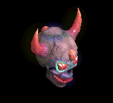 | 冠(150) | 鈍器(250) | 帰還(450) | 職業鎧(650) | 肩刺青(850) | HP回復(1000) | ||||
| バイキングヘッド3 Zin | アンデット | ボス2 | ||||||||
 | 能力向上2(270) | 鈍器(450) | 牙(810) | 職業鎧(1170) | ステッキ(1530) | 杖(1800) | 本(1800) | 双剣(810) | ||
| バイキングヘッド4 Zin | アンデット | ボス3 | ||||||||
 | 冠(360) | cP回復(600) | 宝石(1080) | 職業鎧(1560) | ステッキ(2040) | 杖(2400) | 本(2400) | |||
| デスマスク Zin | アンデット | セミ1 | ||||||||
 | 宝石(50) | 宝石(90) | 牙(160) | 職業鎧(230) | 肩刺青(300) | 杖(350) | 本(350) | 双剣(160) | ||
| デスマスク1 Zin | アンデット | セミ3 | ||||||||
 | 職業鎧(110) | 職業鎧(180) | 腕刺青(320) | 十字架(460) | ステッキ(600) | 杖(700) | 本(700) | |||
| デスマスク2 Zin | アンデット | ボス1 | ||||||||
| 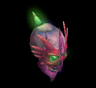 | 冠(150) | 鈍器(250) | 牙(450) | 職業鎧(650) | ステッキ(850) | 職業鎧(1000) | 双剣(450) | |||
| デスマスク3 Zin | アンデット | ボス2 | ||||||||
 | 鍵(270) | 状態異常回復2(450) | 十字架(810) | 職業鎧(1170) | 状態異常回復1(1530) | HP回復(1800) | ||||
| デスマスク4 Zin | アンデット | ボス3 | ||||||||
 | 冠(360) | 鈍器(600) | 牙(1080) | 職業鎧(1560) | ステッキ(2040) | 杖(2400) | 本(2400) | 双剣(1080) | ||
| アンデッド魔法師 Zin | アンデット | 一般3 | ||||||||
 | 宝石(40) | マント(70) | 帰還(120) | マント(170) | 矢(220) | HP回復(260) | 魔弾(220) | |||
| アンデッド魔法師1 Zin | アンデット | 一般4 | ||||||||
 | 指輪(30) | マント(50) | 杖(90) | 能力向上1(130) | 矢(170) | グローブ(200) | 本(90) | 魔弾(170) | 魔弾(170) | |
| アンデッド魔法師2 Zin | アンデット | セミ1 | ||||||||
 | 鍵(50) | マント(90) | 弾(160) | 手首(230) | 肩刺青(300) | グローブ(350) | ||||
| アンデッド魔法師3 Zin | アンデット | セミ2 | ||||||||
 | 能力向上2(80) | マント(140) | cP回復(250) | 十字架(360) | 状態異常回復1(470) | イベント(550) | ||||
| アンデッド魔法師4 Zin | アンデット | ボス1 | ||||||||
| 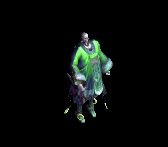 | 指輪(150) | 状態異常回復2(250) | 弾(450) | 手首(650) | 矢(850) | グローブ(1000) | 魔弾(850) | |||
| アンデッドライト Zin | アンデット | 一般4 | ||||||||
| 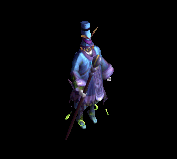 | 指輪(30) | マント(50) | 弾(90) | 手首(130) | 状態異常回復1(170) | 宝石(200) | ||||
| アンデッドライト1 Zin | アンデット | セミ1 | ||||||||
 | 鍵(50) | 状態異常回復2(90) | 帰還(160) | cP回復(230) | 矢(300) | イベント(350) | 魔弾(300) | |||
| アンデッドライト2 Zin | アンデット | セミ2 | ||||||||
 | 指輪(80) | マント(140) | 弾(250) | 手首(360) | 矢(470) | グローブ(550) | 魔弾(470) | |||
| アンデッドライト3 Zin | アンデット | ボス1 | ||||||||
| 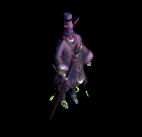 | 宝石(150) | マント(250) | 腕刺青(450) | 十字架(650) | 肩刺青(850) | HP回復(1000) | ||||
| アンデッドライト4 Zin | アンデット | ボス2 | ||||||||
 | 指輪(270) | マント(450) | 弾(810) | 手首(1170) | 矢(1530) | グローブ(1800) | 魔弾(1530) | |||
| アンデッドメイジ Zin | アンデット | 一般4 | ||||||||
 | 指輪(30) | マント(50) | 弾(90) | 手首(130) | 矢(170) | HP回復(200) | 魔弾(170) | |||
| アンデッドメイジ1 Zin | アンデット | セミ2 | ||||||||
 | 指輪(80) | マント(140) | 腕刺青(250) | 十字架(360) | 状態異常回復1(470) | 宝石(550) | ||||
| アンデッドメイジ2 Zin | アンデット | セミ3 | ||||||||
 | 鍵(110) | マント(180) | 弾(320) | 手首(460) | 矢(600) | グローブ(700) | 魔弾(600) | |||
| アンデッドメイジ3 Zin | アンデット | ボス2 | ||||||||
 | 能力向上2(270) | マント(450) | 杖(810) | 能力向上1(1170) | 矢(1530) | 杖(1800) | 本(810) | 魔弾(1530) | ||
| アンデッドメイジ4 Zin | アンデット | ボス3 | ||||||||
 | 指輪(360) | マント(600) | 弾(1080) | 手首(1560) | 肩刺青(2040) | グローブ(2400) | ||||
| アンデッドロック Zin | アンデット | 一般4 | ||||||||
 | 鍵(30) | 状態異常回復2(50) | 弾(90) | 手首(130) | 矢(170) | HP回復(200) | 魔弾(170) | |||
| アンデッドロック1 Zin | アンデット | セミ1 | ||||||||
 | 指輪(50) | マント(90) | 帰還(160) | 手首(230) | 矢(300) | グローブ(350) | 魔弾(300) | |||
| アンデッドロック2 Zin | アンデット | ボス1 | ||||||||
 | 指輪(150) | マント(250) | 弾(450) | マント(650) | 状態異常回復1(850) | イベント(1000) | ||||
| アンデッドロック3 Zin | アンデット | ボス2 | ||||||||
| 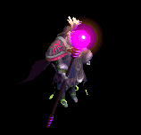 | 宝石(270) | マント(450) | 職業鎧(810) | 手首(1170) | 矢(1530) | グローブ(1800) | 魔弾(1530) | |||
| アンデッドロック4 Zin | アンデット | ボス3 | ||||||||
 | 指輪(360) | マント(600) | 腕刺青(1080) | 手首(1560) | 矢(2040) | 杖(2400) | 本(2400) | 魔弾(2040) | ||
| ボーンキメラZin | アンデット | 一般4 | ||||||||
 | 片手剣(30) | 首(50) | 牙(90) | 職業鎧(130) | 状態異常回復1(170) | 兜・帽子(200) | クロー(30) | 双剣(90) | ||
| ボーンキメラ1 Zin | アンデット | セミ1 | ||||||||
 | 能力向上2(50) | 状態異常回復2(90) | 帰還(160) | 能力向上2(230) | 槍投擲機(300) | イベント(350) | ||||
| ボーンキメラ2 Zin | アンデット | セミ2 | ||||||||
 | 片手剣(80) | 首(140) | 牙(250) | 職業鎧(360) | 槍投擲機(470) | 兜・帽子(550) | クロー(80) | 双剣(250) | ||
| ボーンキメラ3 Zin | アンデット | ボス1 | ||||||||
 | 片手剣(150) | 首(250) | 宝石(450) | cP回復(650) | 肩刺青(850) | HP回復(1000) | クロー(150) | |||
| ボーンキメラ4 Zin | アンデット | ボス2 | ||||||||
 | 片手剣(270) | 状態異常回復2(450) | 牙(810) | 職業鎧(1170) | 槍投擲機(1530) | 兜・帽子(1800) | クロー(270) | 双剣(810) | ||
| ブルーエリゲイト Zin | アンデット | 一般4 | ||||||||
 | 片手剣(30) | 首(50) | 十字架(90) | 十字架(130) | 能力向上2(170) | 兜・帽子(200) | クロー(30) | |||
| ブルーエリゲイト1 Zin | アンデット | セミ2 | ||||||||
 | 宝石(80) | 首(140) | 牙(250) | 職業鎧(360) | 槍投擲機(470) | イベント(550) | 双剣(250) | |||
| ブルーエリゲイト2 Zin | アンデット | セミ3 | ||||||||
 | 片手剣(110) | 状態異常回復2(180) | cP回復(320) | 職業鎧(460) | 槍投擲機(600) | 兜・帽子(700) | クロー(110) | |||
| ブルーエリゲイト3 Zin | アンデット | ボス2 | ||||||||
 | 職業鎧(270) | 首(450) | 牙(810) | 十字架(1170) | 状態異常回復1(1530) | 兜・帽子(1800) | 双剣(810) | |||
| ブルーエリゲイト4 Zin | アンデット | ボス3 | ||||||||
 | 片手剣(360) | 首(600) | 腕刺青(1080) | 職業鎧(1560) | 槍投擲機(2040) | 兜・帽子(2400) | クロー(360) | |||
| 装甲ボーンキメラ Zin | アンデット | 一般4 | ||||||||
 | 片手剣(30) | 首(50) | 牙(90) | 職業鎧(130) | 状態異常回復1(170) | HP回復(200) | クロー(30) | 双剣(90) | ||
| 装甲ボーンキメラ1 Zin | アンデット | セミ1 | ||||||||
 | 片手剣(50) | 首(90) | 帰還(160) | 職業鎧(230) | 肩刺青(300) | イベント(350) | クロー(50) | |||
| 装甲ボーンキメラ2 Zin | アンデット | セミ3 | ||||||||
 | 能力向上2(110) | 首(180) | 牙(320) | 十字架(460) | 槍投擲機(600) | 兜・帽子(700) | 双剣(320) | |||
| 装甲ボーンキメラ3 Zin | アンデット | ボス2 | ||||||||
 | 片手剣(270) | 状態異常回復2(450) | 腕刺青(810) | 職業鎧(1170) | 槍投擲機(1530) | 兜・帽子(1800) | クロー(270) | |||
| 装甲ボーンキメラ4 Zin | アンデット | ボス3 | ||||||||
 | 宝石(360) | 首(600) | 牙(1080) | 能力向上1(1560) | 槍投擲機(2040) | 宝石(2400) | 双剣(1080) | |||
| ハイエルフ Zin | 人間 | 一般4 | ||||||||
 | 片手剣(50) | ブローチ(150) | 足(100) | 能力向上1(80) | 両手剣(20) | 兜・帽子(30) | 鎌(20) | クロー(50) | ||
| ハイエルフ1 Zin | 人間 | セミ1 | ||||||||
 | 片手剣(90) | イヤリング(260) | 帰還(180) | 槍(140) | 槍投擲機(40) | イベント(50) | クロー(90) | 箒(140) | ||
| ハイエルフ2 Zin | 人間 | セミ2 | ||||||||
 | 能力向上2(140) | 状態異常回復2(410) | 腕刺青(280) | 十字架(220) | 槍投擲機(60) | 兜・帽子(80) | ||||
| ハイエルフ3 Zin | 人間 | ボス1 | ||||||||
| 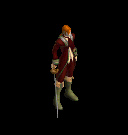 | 片手剣(250) | イヤリング(750) | 足(500) | 槍(400) | 状態異常回復1(100) | 杖(150) | クロー(250) | 本(150) | 箒(400) | |
| ハイエルフ4 Zin | 人間 | ボス2 | ||||||||
 | 片手剣(450) | ブローチ(1350) | cP回復(900) | 槍(720) | 肩刺青(180) | 兜・帽子(270) | クロー(450) | 箒(720) | ||
| エルフ貴族 Zin | 人間 | 一般4 | ||||||||
 | 能力向上2(50) | イヤリング(150) | 足(100) | cP回復(80) | 能力向上2(20) | HP回復(30) | ||||
| エルフ貴族1 Zin | 人間 | セミ2 | ||||||||
 | 片手剣(140) | マント(410) | 能力向上2(280) | 槍(220) | 槍投擲機(60) | 兜・帽子(80) | クロー(140) | 箒(220) | ||
| エルフ貴族2 Zin | 人間 | セミ3 | ||||||||
 | 宝石(180) | イヤリング(530) | 足(350) | 職業鎧(280) | 槍投擲機(70) | 宝石(110) | ||||
| エルフ貴族3 Zin | 人間 | ボス2 | ||||||||
 | 片手剣(450) | ブローチ(1350) | 足(900) | 槍(720) | 槍投擲機(180) | 兜・帽子(270) | クロー(450) | 箒(720) | ||
| エルフ貴族4 Zin | 人間 | ボス3 | ||||||||
 | 片手剣(600) | イヤリング(1800) | 腕刺青(1200) | 鞭(960) | 槍投擲機(240) | 兜・帽子(360) | クロー(600) | |||
| エルフガーディア Zin | 人間 | セミ1 | ||||||||
 | 片手剣(90) | 状態異常回復2(260) | 足(180) | 十字架(140) | 槍投擲機(40) | cP回復(50) | クロー(90) | |||
| エルフガーディア1 Zin | 人間 | セミ3 | ||||||||
 | 片手剣(180) | ブローチ(530) | 帰還(350) | 槍(280) | 状態異常回復1(70) | 兜・帽子(110) | クロー(180) | 箒(280) | ||
| エルフガーディア2 Zin | 人間 | ボス1 | ||||||||
 | 鍵(250) | イヤリング(750) | 足(500) | 槍(400) | 槍投擲機(100) | 兜・帽子(150) | 箒(400) | |||
| エルフガーディア3 Zin | 人間 | ボス2 | ||||||||
 | 片手剣(450) | イヤリング(1350) | 弾(900) | 能力向上1(720) | 肩刺青(180) | 職業鎧(270) | クロー(450) | |||
| エルフガーディア4 Zin | 人間 | ボス3 | ||||||||
 | 片手剣(600) | イヤリング(1800) | 足(1200) | cP回復(960) | 槍投擲機(240) | 兜・帽子(360) | クロー(600) | |||
| ならず者 Zin | 人間 | 一般3 | ||||||||
 | 両手剣(70) | 爪(200) | 腕刺青(130) | 笛(100) | 弓(30) | HP回復(40) | 鎌(70) | 銃(30) | ||
| ならず者1 Zin | 人間 | 一般4 | ||||||||
| 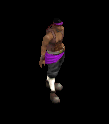 | 鍵(50) | 爪(150) | 牙(100) | 笛(80) | 状態異常回復1(20) | 盾(30) | 双剣(100) | |||
| ならず者2 Zin | 人間 | セミ1 | ||||||||
 | 投擲(90) | 職業鎧(260) | 牙(180) | 能力向上1(140) | 弓(40) | 盾(50) | 双剣(180) | 銃(40) | ||
| ならず者3 Zin | 人間 | セミ2 | ||||||||
 | 宝石(140) | 爪(410) | 宝石(280) | マント(220) | 肩刺青(60) | イベント(80) | ||||
| ならず者4 Zin | 人間 | ボス1 | ||||||||
 | 投擲(250) | 爪(750) | 牙(500) | 笛(400) | 弓(100) | 盾(150) | 双剣(500) | 銃(100) | ||
| 襲撃団 Zin | 人間 | 一般4 | ||||||||
 | 鍵(50) | 爪(150) | 牙(100) | 笛(80) | 弓(20) | HP回復(30) | 双剣(100) | 銃(20) | ||
| 襲撃団1 Zin | 人間 | セミ1 | ||||||||
 | 投擲(90) | 爪(260) | 牙(180) | 能力向上2(140) | 弓(40) | 盾(50) | 双剣(180) | 銃(40) | ||
| 襲撃団2 Zin | 人間 | セミ3 | ||||||||
 | 鍵(180) | ブローチ(530) | 腕刺青(350) | 笛(280) | 弓(70) | 盾(110) | 銃(70) | |||
| 襲撃団3 Zin | 人間 | ボス2 | ||||||||
 | 投擲(450) | 爪(1350) | 牙(900) | 鞭(720) | 両手剣(180) | イベント(270) | 鎌(180) | 双剣(900) | ||
| 襲撃団4 Zin | 人間 | ボス3 | ||||||||
 | 宝石(600) | 爪(1800) | 帰還(1200) | 笛(960) | 腕刺青(240) | 盾(360) | ||||
| 格闘家 Zin | 人間 | セミ1 | ||||||||
 | 投擲(90) | 爪(260) | 牙(180) | マント(140) | 肩刺青(40) | イベント(50) | 双剣(180) | |||
| ストリート戦士 Zin | 人間 | セミ2 | ||||||||
 | 能力向上2(140) | マント(410) | 帰還(280) | 笛(220) | 弓(60) | 盾(80) | 銃(60) | |||
| ルーンファイター Zin | 人間 | セミ3 | ||||||||
 | 両手剣(180) | 爪(530) | 牙(350) | 笛(280) | 状態異常回復1(70) | HP回復(110) | 鎌(180) | 双剣(350) | ||
| 武術マスター Zin | 人間 | ボス2 | ||||||||
 | 鍵(450) | 爪(1350) | 牙(900) | 能力向上1(720) | 弓(180) | 盾(270) | 双剣(900) | |||
| 仙人 Zin | 人間 | ボス3 | ||||||||
 | 投擲(600) | 職業鎧(1800) | 宝石(1200) | 笛(960) | 弓(240) | 盾(360) | 銃(240) | |||
| シーク信者(踊り子) Zin | 人間 | 一般3 | ||||||||
 | 鎧(70) | ブローチ(200) | 弾(130) | 十字架(100) | 腰(30) | 翼(40) | 水晶(40) | |||
| シーク信者(踊り子)1 Zin | 人間 | セミ1 | ||||||||
 | 宝石(90) | 首(260) | スリング(180) | 手首(140) | 状態異常回復1(40) | cP回復(50) | ||||
| シーク信者(踊り子)2 Zin | 人間 | セミ3 | ||||||||
| 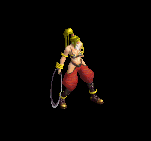 | 鎧(180) | 首(530) | スリング(350) | 鎧(280) | 腰(70) | 翼(110) | 水晶(110) | |||
| シーク信者(踊り子)3 Zin | 人間 | ボス2 | ||||||||
 | 鎧(450) | 首(1350) | cP回復(900) | 手首(720) | 腰(180) | 翼(270) | 水晶(270) | |||
| シーク信者(踊り子)4 Zin | 人間 | ボス3 | ||||||||
 | 鎧(600) | 首(1800) | スリング(1200) | 手首(960) | 腰(240) | 翼(360) | 水晶(360) | |||
| シーク守護者 Zin | 人間 | 一般4 | ||||||||
 | 鎧(50) | 首(150) | 帰還(100) | マント(80) | 腕刺青(20) | 翼(30) | 水晶(30) | |||
| シーク守護者1 Zin | 人間 | セミ1 | ||||||||
 | 能力向上2(90) | 首(260) | スリング(180) | 手首(140) | 腰(40) | イベント(50) | ||||
| シーク守護者2 Zin | 人間 | セミ3 | ||||||||
 | 鍵(180) | 状態異常回復2(530) | スリング(350) | 鎧(280) | 腰(70) | 翼(110) | 水晶(110) | |||
| シーク守護者3 Zin | 人間 | ボス2 | ||||||||
 | 鎧(450) | 首(1350) | 杖(900) | 手首(720) | 両手剣(180) | HP回復(270) | 鎌(180) | 本(900) | ||
| シーク守護者4 Zin | 人間 | ボス3 | ||||||||
 | 鎧(600) | ブローチ(1800) | スリング(1200) | 手首(960) | 腰(240) | 翼(360) | 水晶(360) | |||
| シーク天使 Zin | 人間 | 一般3 | ||||||||
 | 鎧(70) | 首(200) | 帰還(130) | 手首(100) | 腰(30) | 翼(40) | 水晶(40) | |||
| シーク天使1 Zin | 人間 | セミ1 | ||||||||
 | 鎧(90) | 首(260) | スリング(180) | 手首(140) | 腰(40) | 翼(50) | 水晶(50) | |||
| シーク天使2 Zin | 人間 | セミ3 | ||||||||
 | 鍵(180) | マント(530) | スリング(350) | 能力向上2(280) | 状態異常回復1(70) | イベント(110) | ||||
| シーク天使3 Zin | 人間 | ボス2 | ||||||||
 | 鎧(450) | ブローチ(1350) | スリング(900) | 手首(720) | 腰(180) | 翼(270) | 水晶(270) | |||
| シーク天使4 Zin | 人間 | ボス3 | ||||||||
 | 鎧(600) | 首(1800) | 腕刺青(1200) | 手首(960) | 腰(240) | 翼(360) | 水晶(360) | |||
| 逃亡魔法師Zin | 人間 | 一般3 | ||||||||
| 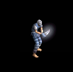 | 宝石(70) | 鈍器(200) | 両手剣(130) | 槍(100) | ステッキ(30) | グローブ(40) | 鎌(130) | 箒(100) | ||
| 逃亡魔法師1 Zin | 人間 | 一般4 | ||||||||
 | 両手剣(50) | ブローチ(150) | cP回復(100) | 職業鎧(80) | 状態異常回復1(20) | 杖(30) | 鎌(50) | 本(30) | ||
| 逃亡魔法師2 Zin | 人間 | セミ1 | ||||||||
 | 投擲(90) | cP回復(260) | 両手剣(180) | 槍(140) | ステッキ(40) | HP回復(50) | 鎌(180) | 箒(140) | ||
| 逃亡魔法師3 Zin | 人間 | セミ2 | ||||||||
| 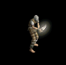 | 鍵(140) | 弾(410) | 両手剣(280) | 能力向上1(220) | 肩刺青(60) | グローブ(80) | 鎌(280) | |||
| 逃亡魔法師4 Zin | 人間 | ボス1 | ||||||||
 | 投擲(250) | ブローチ(750) | 両手剣(500) | 十字架(400) | ステッキ(100) | イベント(150) | 鎌(500) | |||
| 逃亡ハンター Zin | 人間 | 一般4 | ||||||||
 | 投擲(50) | ブローチ(150) | 両手剣(100) | 能力向上1(80) | 状態異常回復1(20) | HP回復(30) | 鎌(100) | |||
| 逃亡ハンター1 Zin | 人間 | セミ1 | ||||||||
 | 能力向上2(90) | 鈍器(260) | 両手剣(180) | 鞭(140) | ステッキ(40) | 宝石(50) | 鎌(180) | |||
| 逃亡ハンター2 Zin | 人間 | セミ3 | ||||||||
| 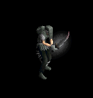 | 投擲(180) | 鈍器(530) | 帰還(350) | 槍(280) | ステッキ(70) | グローブ(110) | 箒(280) | |||
| 逃亡ハンター3 Zin | 人間 | ボス1 | ||||||||
 | 宝石(250) | 状態異常回復2(750) | 両手剣(500) | cP回復(400) | 鞭(100) | イベント(150) | 鎌(500) | |||
| 逃亡ハンター4 Zin | 人間 | ボス2 | ||||||||
 | 投擲(450) | 鈍器(1350) | 両手剣(900) | 槍(720) | ステッキ(180) | グローブ(270) | 鎌(900) | 箒(720) | ||
| 脱獄犯 Zin | 人間 | セミ1 | ||||||||
 | 投擲(90) | ブローチ(260) | 両手剣(180) | 十字架(140) | 肩刺青(40) | cP回復(50) | 鎌(140) | |||
| 脱獄犯1 Zin | 人間 | セミ2 | ||||||||
 | 鍵(140) | 鈍器(410) | 帰還(280) | cP回復(220) | ステッキ(60) | グローブ(80) | ||||
| 脱獄犯2 Zin | 人間 | セミ3 | ||||||||
 | 投擲(180) | 宝石(530) | 両手剣(350) | 槍(280) | 弾(70) | HP回復(110) | 鎌(350) | 箒(280) | ||
| 脱獄犯3 Zin | 人間 | ボス1 | ||||||||
 | 鍵(250) | 鈍器(750) | 両手剣(500) | 能力向上1(400) | ステッキ(100) | グローブ(150) | 鎌(500) | |||
| 脱獄犯4 Zin | 人間 | ボス3 | ||||||||
 | 投擲(600) | ブローチ(1800) | 腕刺青(1200) | 槍(960) | 両手剣(240) | グローブ(360) | 鎌(240) | 箒(960) | ||
| 狂魔(狂った悪魔…) Zin | 悪魔 | 一般4 | ||||||||
 | 宝石(130) | 爪(160) | スリング(70) | 鞭(40) | 矢(20) | HP回復(10) | 魔弾(20) | |||
| 狂魔(狂った悪魔…)1 Zin | 悪魔 | セミ1 | ||||||||
 | 片手剣(230) | 爪(280) | 帰還(120) | 鞭(70) | 状態異常回復1(40) | 兜・帽子(20) | クロー(230) | |||
| 狂魔(狂った悪魔…)2 Zin | 悪魔 | セミ2 | ||||||||
 | 片手剣(360) | 状態異常回復2(440) | スリング(180) | 能力向上1(110) | 矢(60) | 兜・帽子(30) | クロー(360) | 魔弾(60) | ||
| 狂魔(狂った悪魔…)3 Zin | 悪魔 | ボス1 | ||||||||
 | 片手剣(650) | ブローチ(800) | 腕刺青(330) | 鞭(200) | 矢(100) | イベント(50) | クロー(650) | 魔弾(100) | ||
| 狂魔(狂った悪魔…)4 Zin | 悪魔 | ボス2 | ||||||||
 | 片手剣(1170) | 爪(1440) | スリング(590) | 鞭(360) | 矢(180) | 兜・帽子(90) | クロー(1170) | 魔弾(180) | ||
| ゴールデンマスク Zin | 悪魔 | 一般4 | ||||||||
 | 片手剣(130) | ブローチ(160) | スリング(70) | 能力向上1(40) | 状態異常回復1(20) | 兜・帽子(10) | クロー(130) | |||
| ゴールデンマスク1 Zin | 悪魔 | セミ2 | ||||||||
 | 能力向上2(360) | 爪(440) | 帰還(180) | 鞭(110) | 肩刺青(60) | 杖(30) | 本(30) | |||
| ゴールデンマスク2 Zin | 悪魔 | セミ3 | ||||||||
 | 片手剣(460) | 爪(560) | 職業鎧(230) | 十字架(140) | 矢(70) | 兜・帽子(40) | クロー(460) | 魔弾(70) | ||
| ゴールデンマスク3 Zin | 悪魔 | ボス2 | ||||||||
 | 宝石(1170) | ブローチ(1440) | スリング(590) | 鞭(360) | 矢(180) | HP回復(90) | 魔弾(180) | |||
| ゴールデンマスク4 Zin | 悪魔 | ボス3 | ||||||||
 | 片手剣(1560) | 爪(1920) | cP回復(790) | 鞭(480) | 矢(240) | イベント(120) | クロー(1560) | 魔弾(240) | ||
| 剣闘士 Zin | 悪魔 | セミ1 | ||||||||
| 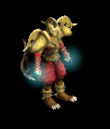 | 宝石(230) | 爪(280) | 腕刺青(120) | 能力向上1(70) | 矢(40) | イベント(20) | 魔弾(40) | |||
| 剣闘士1 Zin | 悪魔 | セミ2 | ||||||||
 | 片手剣(360) | 爪(440) | スリング(180) | 鞭(110) | 状態異常回復1(60) | 兜・帽子(30) | クロー(360) | |||
| 剣闘士2 Zin | 悪魔 | セミ3 | ||||||||
 | 片手剣(460) | 爪(560) | 帰還(230) | 鞭(140) | 矢(70) | HP回復(40) | クロー(460) | 魔弾(70) | ||
| 剣闘士3 Zin | 悪魔 | ボス2 | ||||||||
 | 片手剣(1170) | ブローチ(1440) | スリング(590) | 鞭(360) | 矢(180) | 兜・帽子(90) | クロー(1170) | 魔弾(180) | ||
| 剣闘士4 Zin | 悪魔 | ボス3 | ||||||||
 | 能力向上2(1560) | 爪(1920) | スリング(790) | 十字架(480) | 状態異常回復1(240) | 兜・帽子(120) | ||||
| 古代悪魔 Zin | 悪魔 | 一般4 | ||||||||
 | 指輪(130) | ブローチ(160) | 両手剣(70) | 十字架(40) | 弓(20) | 宝石(10) | 鎌(70) | 銃(20) | ||
| 古代悪魔1 Zin | 悪魔 | セミ1 | ||||||||
| 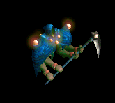 | 鍵(230) | 首(280) | 両手剣(120) | 手首(70) | 状態異常回復1(40) | グローブ(20) | 鎌(120) | |||
| 古代悪魔2 Zin | 悪魔 | セミ3 | ||||||||
 | 指輪(460) | 首(560) | 帰還(230) | 手首(140) | 肩刺青(70) | cP回復(40) | ||||
| 古代悪魔3 Zin | 悪魔 | ボス2 | ||||||||
 | 宝石(1170) | 首(1440) | 両手剣(590) | 能力向上1(360) | 弓(180) | グローブ(90) | 鎌(590) | 銃(180) | ||
| 古代悪魔4 Zin | 悪魔 | ボス3 | ||||||||
 | 指輪(1560) | 状態異常回復2(1920) | 両手剣(790) | 手首(480) | 状態異常回復1(240) | グローブ(120) | 鎌(790) | |||
| 死神 Zin | 悪魔 | 一般4 | ||||||||
 | 指輪(130) | 首(160) | 両手剣(70) | 手首(40) | 弓(20) | グローブ(10) | 鎌(70) | 銃(20) | ||
| 死神1 Zin | 悪魔 | セミ1 | ||||||||
 | 指輪(230) | ブローチ(280) | 十字架(120) | 十字架(70) | 状態異常回復1(40) | グローブ(20) | ||||
| 死神2 Zin | 悪魔 | セミ3 | ||||||||
 | 鍵(460) | 首(560) | cP回復(230) | 手首(140) | 弓(70) | イベント(40) | 銃(70) | |||
| 死神3 Zin | 悪魔 | ボス2 | ||||||||
 | 能力向上2(1170) | 職業鎧(1440) | 両手剣(590) | 能力向上1(360) | 肩刺青(180) | グローブ(90) | 鎌(590) | |||
| 死神4 Zin | 悪魔 | ボス3 | ||||||||
| 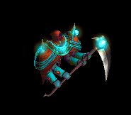 | 指輪(1560) | 首(1920) | 帰還(790) | 手首(480) | 弓(240) | HP回復(120) | 銃(240) | |||
| 邪臣 Zin | 悪魔 | セミ1 | ||||||||
 | 鍵(230) | 首(280) | 腕刺青(120) | 手首(70) | 肩刺青(40) | グローブ(20) | ||||
| 邪臣1 Zin | 悪魔 | セミ2 | ||||||||
 | 指輪(360) | 首(440) | 両手剣(180) | 能力向上1(110) | 状態異常回復1(60) | 杖(30) | 鎌(180) | 本(30) | ||
| 邪臣2 Zin | 悪魔 | セミ3 | ||||||||
 | 鍵(460) | ブローチ(560) | 両手剣(230) | 十字架(140) | 弓(70) | グローブ(40) | 鎌(230) | 銃(70) | ||
| 邪臣3 Zin | 悪魔 | ボス2 | ||||||||
 | 指輪(1170) | 職業鎧(1440) | 帰還(590) | 手首(360) | 杖(180) | イベント(90) | 本(180) | |||
| 邪臣4 Zin | 悪魔 | ボス3 | ||||||||
| 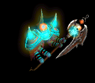 | 鍵(1560) | 首(1920) | 両手剣(790) | 手首(480) | 弓(240) | グローブ(120) | 鎌(790) | 銃(240) | ||
| 魔女 Zin | 悪魔 | 一般3 | ||||||||
| 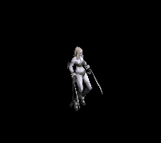 | 鎧(170) | イヤリング(210) | 足(90) | 十字架(50) | ステッキ(30) | 盾(10) | ||||
| 魔女1 Zin | 悪魔 | セミ1 | ||||||||
 | 鎧(230) | ブローチ(280) | cP回復(120) | 笛(70) | ステッキ(40) | イベント(20) | ||||
| 魔女2 Zin | 悪魔 | ボス1 | ||||||||
 | 鍵(650) | イヤリング(800) | 腕刺青(330) | 笛(200) | 状態異常回復1(100) | 盾(50) | ||||
| 魔女3 Zin | 悪魔 | ボス2 | ||||||||
 | 鎧(1170) | イヤリング(1440) | 足(590) | 十字架(360) | ステッキ(180) | 盾(90) | ||||
| 魔女4 Zin | 悪魔 | ボス3 | ||||||||
 | 鎧(1560) | イヤリング(1920) | 帰還(790) | 笛(480) | 状態異常回復1(240) | HP回復(120) | ||||
| サキュバス Zin | 悪魔 | 一般4 | ||||||||
 | 鎧(130) | ブローチ(160) | 弾(70) | 笛(40) | ステッキ(20) | HP回復(10) | ||||
| サキュバス1 Zin | 悪魔 | セミ1 | ||||||||
 | 鎧(230) | イヤリング(280) | 足(120) | 能力向上1(70) | ステッキ(40) | 盾(20) | ||||
| サキュバス2 Zin | 悪魔 | セミ3 | ||||||||
| 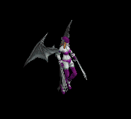 | 鍵(460) | イヤリング(560) | 腕刺青(230) | 笛(140) | 状態異常回復1(70) | 盾(40) | ||||
| サキュバス3 Zin | 悪魔 | ボス2 | ||||||||
 | 鎧(1170) | 状態異常回復2(1440) | 足(590) | 笛(360) | ステッキ(180) | cP回復(90) | ||||
| サキュバス4 Zin | 悪魔 | ボス3 | ||||||||
 | 能力向上2(1560) | イヤリング(1920) | 帰還(790) | マント(480) | 肩刺青(240) | 盾(120) | ||||
| パンタズドリーム Zin | 悪魔 | セミ1 | ||||||||
 | 鎧(230) | ブローチ(280) | 足(120) | 笛(70) | ステッキ(40) | 杖(20) | 本(20) | |||
| パンタズドリーム1 Zin | 悪魔 | セミ2 | ||||||||
 | 鍵(360) | イヤリング(440) | 帰還(180) | 笛(110) | ステッキ(60) | 盾(30) | ||||
| パンタズドリーム2 Zin | 悪魔 | セミ3 | ||||||||
 | 鎧(460) | イヤリング(560) | 足(230) | 笛(140) | 状態異常回復1(70) | イベント(40) | ||||
| パンタズドリーム3 Zin | 悪魔 | ボス1 | ||||||||
 | 鎧(650) | イヤリング(800) | 腕刺青(330) | 能力向上1(200) | ステッキ(100) | 盾(50) | ||||
| パンタズドリーム4 Zin | 悪魔 | ボス3 | ||||||||
 | 鎧(1560) | イヤリング(1920) | 足(790) | 笛(480) | 状態異常回復1(240) | 盾(120) | ||||
| カマキリ戦士 Zin | 悪魔 | セミ2 | ||||||||
 | 宝石(360) | 宝石(440) | 弾(180) | 能力向上1(110) | 腰(60) | 翼(30) | 水晶(30) | |||
| カマキリ戦士1 Zin | 悪魔 | セミ3 | ||||||||
 | 投擲(460) | 鈍器(560) | 十字架(230) | 槍(140) | 肩刺青(70) | 翼(40) | 箒(140) | 水晶(40) | ||
| カマキリ戦士2 Zin | 悪魔 | ボス1 | ||||||||
 | 鍵(650) | 鈍器(800) | 弾(330) | 槍(200) | 腰(100) | イベント(50) | 箒(200) | |||
| カマキリ戦士3 Zin | 悪魔 | ボス2 | ||||||||
 | 両手剣(1170) | ブローチ(1440) | 腕刺青(590) | 槍(360) | 状態異常回復1(180) | HP回復(90) | 鎌(1170) | 箒(360) | ||
| カマキリ戦士4 Zin | 悪魔 | ボス3 | ||||||||
| 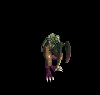 | 投擲(1560) | 鈍器(1920) | cP回復(790) | 槍(480) | 腰(240) | 翼(120) | 箒(480) | 水晶(120) | ||
| ペンティライダー Zin | 悪魔 | セミ1 | ||||||||
 | 鍵(230) | 弾(280) | 腕刺青(120) | 槍(70) | 状態異常回復1(40) | 翼(20) | 箒(70) | 水晶(20) | ||
| ペンティライダー1 Zin | 悪魔 | セミ2 | ||||||||
| 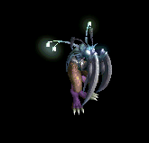 | 投擲(360) | 鈍器(440) | 弾(180) | 槍(110) | 腰(60) | 翼(30) | 箒(110) | 水晶(30) | ||
| ペンティライダー2 Zin | 悪魔 | セミ3 | ||||||||
 | 投擲(460) | 状態異常回復2(560) | cP回復(230) | 能力向上1(140) | 肩刺青(70) | 翼(40) | 水晶(40) | |||
| ペンティライダー3 Zin | 悪魔 | ボス1 | ||||||||
 | 鍵(650) | 鈍器(800) | 帰還(330) | 槍(200) | 腰(100) | イベント(50) | 箒(200) | |||
| ペンティライダー4 Zin | 悪魔 | ボス3 | ||||||||
 | 投擲(1560) | 鈍器(1920) | 弾(790) | 槍(480) | 両手剣(240) | 翼(120) | 鎌(240) | 箒(480) | 水晶(120) | |
| バッタ悪魔 Zin | 悪魔 | 一般4 | ||||||||
 | 投擲(130) | 鈍器(160) | 帰還(70) | cP回復(40) | 腰(20) | HP回復(10) | ||||
| バッタ悪魔1 Zin | 悪魔 | セミ1 | ||||||||
 | 能力向上2(230) | cP回復(280) | 弾(120) | 槍(70) | 状態異常回復1(40) | 翼(20) | 箒(70) | 水晶(20) | ||
| バッタ悪魔2 Zin | 悪魔 | セミ3 | ||||||||
 | 投擲(460) | 鈍器(560) | 腕刺青(230) | 槍(140) | 腰(70) | 職業鎧(40) | 箒(140) | |||
| バッタ悪魔3 Zin | 悪魔 | ボス1 | ||||||||
 | 宝石(650) | 鈍器(800) | 弾(330) | 能力向上1(200) | 腰(100) | 翼(50) | 水晶(50) | |||
| バッタ悪魔4 Zin | 悪魔 | ボス2 | ||||||||
 | 投擲(1170) | 状態異常回復2(1440) | cP回復(590) | 槍(360) | 腰(180) | 翼(90) | 箒(360) | 水晶(90) | ||
| パンプキンヘッド Zin | 悪魔 | 一般4 | ||||||||
| 指輪(130) | 状態異常回復2(160) | 帰還(70) | 能力向上1(40) | 腰(20) | グローブ(10) | |||||
| パンプキンヘッド1 Zin | 悪魔 | セミ1 | ||||||||
 | 指輪(230) | 首(280) | マント(120) | 笛(70) | 状態異常回復1(40) | イベント(20) | ||||
| パンプキンヘッド2 Zin | 悪魔 | セミ3 | ||||||||
 | 鍵(460) | ブローチ(560) | cP回復(230) | 笛(140) | 腰(70) | グローブ(40) | ||||
| パンプキンヘッド3 Zin | 悪魔 | ボス1 | ||||||||
| 指輪(650) | 弾(800) | 腕刺青(330) | 十字架(200) | 腰(100) | HP回復(50) | |||||
| パンプキンヘッド4 Zin | 悪魔 | ボス2 | ||||||||
 | 指輪(1170) | 首(1440) | 足(590) | 笛(360) | 腰(180) | グローブ(90) | ||||
| ジャックランタン Zin | 悪魔 | セミ1 | ||||||||
 | 鍵(230) | 首(280) | 足(120) | 笛(70) | 状態異常回復1(40) | イベント(20) | ||||
| ジャックランタン1 Zin | 悪魔 | セミ2 | ||||||||
 | 指輪(360) | ブローチ(440) | 腕刺青(180) | 笛(110) | 腰(60) | グローブ(30) | ||||
| ジャックランタン2 Zin | 悪魔 | ボス1 | ||||||||
 | 指輪(650) | 首(800) | 弾(330) | 能力向上1(200) | 肩刺青(100) | グローブ(50) | ||||
| ジャックランタン3 Zin | 悪魔 | ボス2 | ||||||||
 | 能力向上2(1170) | 首(1440) | 帰還(590) | 笛(360) | 腰(180) | グローブ(90) | ||||
| ジャックランタン4 Zin | 悪魔 | ボス3 | ||||||||
 | 指輪(1560) | 弾(1920) | 足(790) | マント(480) | 腰(240) | グローブ(120) | ||||
| エルダーパンプキン Zin | 悪魔 | セミ2 | ||||||||
 | 指輪(360) | 首(440) | 弾(180) | 十字架(110) | 腰(60) | HP回復(30) | ||||
| エルダーパンプキン1 Zin | 悪魔 | セミ3 | ||||||||
 | 鍵(460) | 首(560) | 足(230) | 笛(140) | 状態異常回復1(70) | グローブ(40) | ||||
| エルダーパンプキン2 Zin | 悪魔 | ボス1 | ||||||||
 | 指輪(650) | 状態異常回復2(800) | 腕刺青(330) | 能力向上1(200) | 腰(100) | グローブ(50) | ||||
| エルダーパンプキン3 Zin | 悪魔 | ボス2 | ||||||||
 | 宝石(1170) | 首(1440) | 帰還(590) | 笛(360) | 肩刺青(180) | イベント(90) | ||||
| エルダーパンプキン4 Zin | 悪魔 | ボス3 | ||||||||
 | 能力向上2(1560) | 首(1920) | cP回復(790) | 笛(480) | 腰(240) | グローブ(120) | ||||
| ビッグモンキー Zin | 動物 | 一般4 | ||||||||
 | 冠(70) | イヤリング(50) | 牙(40) | 十字架(30) | 肩刺青(20) | 翼(10) | 双剣(40) | 水晶(10) | ||
| ビッグモンキー1 Zin | 動物 | セミ1 | ||||||||
 | 能力向上2(120) | ブローチ(90) | 腕刺青(70) | 職業鎧(50) | 状態異常回復1(40) | イベント(20) | ||||
| ビッグモンキー2 Zin | 動物 | セミ2 | ||||||||
| 冠(190) | イヤリング(140) | 牙(110) | 能力向上1(80) | 矢(60) | 翼(30) | 双剣(110) | 水晶(30) | 魔弾(60) | ||
| ルーンモンキー Zin | 動物 | ボス1 | ||||||||
 | 杖(350) | イヤリング(250) | 牙(200) | 職業鎧(150) | 矢(100) | HP回復(50) | 本(350) | 双剣(200) | 魔弾(100) | |
| ルーンモンキー1 Zin | 動物 | ボス2 | ||||||||
 | 冠(630) | 状態異常回復2(450) | 帰還(360) | 能力向上1(270) | 矢(180) | 翼(90) | 水晶(90) | 魔弾(180) | ||
| マウンテン戦士 Zin | 動物 | 一般4 | ||||||||
 | 冠(70) | イヤリング(50) | 牙(40) | 職業鎧(30) | 矢(20) | イベント(10) | 双剣(40) | 魔弾(20) | ||
| マウンテン戦士1 Zin | 動物 | セミ2 | ||||||||
 | 鍵(190) | 状態異常回復2(140) | 腕刺青(110) | 能力向上1(80) | 矢(60) | 翼(30) | 水晶(30) | 魔弾(60) | ||
| マウンテン戦士2 Zin | 動物 | セミ3 | ||||||||
 | 冠(250) | ブローチ(180) | 宝石(140) | 職業鎧(110) | 状態異常回復1(70) | 翼(40) | 水晶(40) | |||
| マウンテン戦士3 Zin | 動物 | ボス2 | ||||||||
 | 冠(630) | イヤリング(450) | 帰還(360) | 職業鎧(270) | 矢(180) | 翼(90) | 水晶(90) | 魔弾(180) | ||
| マウンテン戦士4 Zin | 動物 | ボス3 | ||||||||
 | 冠(840) | イヤリング(600) | 牙(480) | 十字架(360) | 矢(240) | HP回復(120) | 双剣(480) | 魔弾(240) | ||
| ウィングコング Zin | 動物 | セミ1 | ||||||||
 | 冠(120) | イヤリング(90) | 牙(70) | 能力向上2(50) | 肩刺青(40) | cP回復(20) | 双剣(70) | |||
| ウィングコング1 Zin | 動物 | セミ2 | ||||||||
 | 杖(190) | イヤリング(140) | 能力向上2(110) | 職業鎧(80) | 矢(60) | 翼(30) | 本(190) | 水晶(30) | 魔弾(60) | |
| ウィングコング2 Zin | 動物 | セミ3 | ||||||||
 | 冠(250) | イヤリング(180) | 牙(140) | cP回復(110) | 肩刺青(70) | HP回復(40) | 双剣(140) | |||
| ウィングコング3 Zin | 動物 | ボス2 | ||||||||
 | 能力向上2(630) | 状態異常回復2(450) | 牙(360) | 職業鎧(270) | 矢(180) | 翼(90) | 双剣(360) | 水晶(90) | 魔弾(180) | |
| ウィングコング4 Zin | 動物 | ボス3 | ||||||||
| 冠(840) | イヤリング(600) | 宝石(480) | 職業鎧(360) | 矢(240) | 翼(120) | 水晶(120) | 魔弾(240) | |||
| 蛙 Zin | 動物 | 一般4 | ||||||||
 | 鍵(70) | ブローチ(50) | 弾(40) | 槍(30) | 槍投擲機(20) | 杖(10) | 本(10) | 箒(30) | ||
| 蛙1 Zin | 動物 | セミ1 | ||||||||
 | 投擲(120) | 爪(90) | 足(70) | 槍(50) | 腕刺青(40) | HP回復(20) | 箒(50) | |||
| 蛙2 Zin | 動物 | セミ3 | ||||||||
 | 投擲(250) | 状態異常回復2(180) | 足(140) | 鎧(110) | 槍投擲機(70) | 杖(40) | 本(40) | |||
| 蛙3 Zin | 動物 | ボス2 | ||||||||
| 両手剣(630) | 爪(450) | 帰還(360) | 能力向上1(270) | 肩刺青(180) | イベント(90) | 鎌(630) | ||||
| 蛙4 Zin | 動物 | ボス3 | ||||||||
 | 投擲(840) | 爪(600) | 足(480) | 槍(360) | 槍投擲機(240) | 杖(120) | 本(120) | 箒(360) | ||
| ラジエータカエル Zin | 動物 | 一般4 | ||||||||
 | 投擲(70) | 爪(50) | 腕刺青(40) | 鞭(30) | 槍投擲機(20) | HP回復(10) | ||||
| ラジエータカエル1 Zin | 動物 | セミ2 | ||||||||
 | 鍵(190) | 爪(140) | 足(110) | 槍(80) | 槍投擲機(60) | 杖(30) | 本(30) | 箒(80) | ||
| ラジエータカエル2 Zin | 動物 | ボス1 | ||||||||
 | 投擲(350) | 爪(250) | 弾(200) | 十字架(150) | 状態異常回復1(100) | イベント(50) | ||||
| ラジエータカエル3 Zin | 動物 | ボス2 | ||||||||
 | 投擲(630) | ブローチ(450) | 足(360) | 槍(270) | 槍投擲機(180) | 杖(90) | 本(90) | 箒(270) | ||
| ラジエータカエル4 Zin | 動物 | ボス3 | ||||||||
 | 鍵(840) | 爪(600) | 帰還(480) | 槍(360) | 槍投擲機(240) | 杖(120) | 本(120) | 箒(360) | ||
| ハリネズミカエル Zin | 動物 | セミ1 | ||||||||
| 投擲(120) | 爪(90) | 十字架(70) | 腕刺青(50) | 槍投擲機(40) | 杖(20) | 本(20) | ||||
| ハリネズミカエル1 Zin | 動物 | セミ2 | ||||||||
 | 鍵(190) | 爪(140) | 足(110) | 槍(80) | 槍投擲機(60) | HP回復(30) | 箒(80) | |||
| ハリネズミカエル2 Zin | 動物 | セミ3 | ||||||||
 | 投擲(250) | 爪(180) | 足(140) | 槍(110) | 肩刺青(70) | 杖(40) | 本(40) | 箒(110) | ||
| ハリネズミカエル3 Zin | 動物 | ボス2 | ||||||||
 | 両手剣(630) | 状態異常回復2(450) | 足(360) | 槍(270) | 槍投擲機(180) | cP回復(90) | 鎌(630) | 箒(270) | ||
| ハリネズミカエル4 Zin | 動物 | ボス3 | ||||||||
 | 投擲(840) | 爪(600) | cP回復(480) | cP回復(360) | 槍投擲機(240) | 杖(120) | 本(120) | |||
| カメレオン Zin | 動物 | 一般3 | ||||||||
 | 冠(90) | 鈍器(70) | スリング(50) | 能力向上1(40) | 弓(30) | HP回復(10) | 銃(30) | |||
| カメレオン1 Zin | 動物 | セミ1 | ||||||||
 | 能力向上2(120) | 状態異常回復2(90) | スリング(70) | 鞭(50) | 弓(40) | 盾(20) | 銃(40) | |||
| カメレオン2 Zin | 動物 | セミ3 | ||||||||
 | 冠(250) | 鈍器(180) | 帰還(140) | 十字架(110) | cP回復(70) | 盾(40) | ||||
| カメレオン3 Zin | 動物 | ボス2 | ||||||||
 | 宝石(630) | 宝石(450) | スリング(360) | 鞭(270) | 弓(180) | 盾(90) | 銃(180) | |||
| カメレオン4 Zin | 動物 | ボス3 | ||||||||
 | 冠(840) | 鈍器(600) | 腕刺青(480) | 能力向上1(360) | 弓(240) | イベント(120) | 銃(240) | |||
| ラジエータカメ Zin | 動物 | 一般4 | ||||||||
 | 冠(70) | 状態異常回復2(50) | 帰還(40) | 鞭(30) | 弓(20) | 杖(10) | 本(10) | 銃(20) | ||
| ラジエータカメ1 Zin | 動物 | セミ2 | ||||||||
 | 冠(190) | 鈍器(140) | スリング(110) | 十字架(80) | 弓(60) | 盾(30) | 銃(60) | |||
| ラジエータカメ2 Zin | 動物 | ボス1 | ||||||||
 | 鍵(350) | 鈍器(250) | cP回復(200) | 鞭(150) | 弓(100) | 盾(50) | 銃(100) | |||
| ラジエータカメ3 Zin | 動物 | ボス2 | ||||||||
 | 冠(630) | ブローチ(450) | スリング(360) | 能力向上1(270) | 肩刺青(180) | HP回復(90) | ||||
| ラジエータカメ4 Zin | 動物 | ボス3 | ||||||||
| 杖(840) | 鈍器(600) | 弾(480) | 十字架(360) | 弓(240) | 盾(120) | 本(840) | 銃(240) | |||
| 装甲亀 Zin | 動物 | セミ1 | ||||||||
 | 冠(120) | 状態異常回復2(90) | スリング(70) | 鞭(50) | 弓(40) | 盾(20) | 銃(40) | |||
| 装甲亀1 Zin | 動物 | セミ2 | ||||||||
 | 冠(190) | 鈍器(140) | cP回復(110) | 鞭(80) | 弓(60) | 盾(30) | 銃(60) | |||
| 装甲亀2 Zin | 動物 | セミ3 | ||||||||
 | 能力向上2(250) | ブローチ(180) | 帰還(140) | 能力向上1(110) | 弓(70) | イベント(40) | 銃(70) | |||
| 装甲亀3 Zin | 動物 | ボス1 | ||||||||
 | 冠(350) | 鈍器(250) | スリング(200) | 鞭(150) | 弓(100) | 盾(50) | 銃(100) | |||
| 装甲亀4 Zin | 動物 | ボス3 | ||||||||
 | 冠(840) | 鈍器(600) | 腕刺青(480) | 能力向上1(360) | 両手剣(240) | 盾(120) | 鎌(240) | |||
| ダークバッファロ Zin | 神獣 | 一般3 | ||||||||
 | 能力向上2(120) | 爪(170) | cP回復(90) | 能力向上1(10) | 腰(30) | イベント(70) | ||||
| ダークバッファロ1 Zin | 神獣 | セミ1 | ||||||||
 | 指輪(160) | ブローチ(230) | 弾(120) | 鞭(20) | 腕刺青(40) | 兜・帽子(90) | ||||
| ダークバッファロ2 Zin | 神獣 | セミ2 | ||||||||
 | 指輪(250) | 爪(360) | 腕刺青(190) | 鞭(30) | 腰(60) | HP回復(140) | ||||
| ダークバッファロ3 Zin | 神獣 | ボス1 | ||||||||
 | 指輪(450) | 爪(650) | 弾(350) | 十字架(50) | 肩刺青(100) | 兜・帽子(250) | ||||
| ダークバッファロ4 Zin | 神獣 | ボス2 | ||||||||
 | 指輪(810) | ブローチ(1170) | 弾(630) | 鞭(90) | 腰(180) | 兜・帽子(450) | ||||
| 赤パネルバッファ Zin | 神獣 | 一般4 | ||||||||
 | 指輪(90) | 状態異常回復2(130) | 弾(70) | 鞭(10) | 肩刺青(20) | HP回復(50) | ||||
| 赤パネルバッファ1 Zin | 神獣 | セミ2 | ||||||||
 | 指輪(250) | 爪(360) | 弾(190) | 能力向上1(30) | 腰(60) | 兜・帽子(140) | ||||
| 赤パネルバッファ2 Zin | 神獣 | セミ3 | ||||||||
 | 能力向上2(320) | 爪(460) | 帰還(250) | 鞭(40) | 腰(70) | イベント(180) | ||||
| 赤パネルバッファ3 Zin | 神獣 | ボス2 | ||||||||
 | 指輪(810) | ブローチ(1170) | 弾(630) | 鞭(90) | 腰(180) | 兜・帽子(450) | ||||
| 赤パネルバッファ4 Zin | 神獣 | ボス3 | ||||||||
 | 指輪(1080) | 爪(1560) | 帰還(840) | 鞭(120) | 状態異常回復1(240) | 兜・帽子(600) | ||||
| エメラルドバッファ Zin | 神獣 | セミ1 | ||||||||
| 指輪(160) | ブローチ(230) | 弾(120) | 鞭(20) | 腰(40) | 兜・帽子(90) | |||||
| エメラルドバッファ1 Zin | 神獣 | セミ2 | ||||||||
 | 指輪(250) | 爪(360) | 弾(190) | 十字架(30) | 能力向上2(60) | イベント(140) | ||||
| エメラルドバッファ2 Zin | 神獣 | セミ3 | ||||||||
 | 指輪(320) | 爪(460) | 弾(250) | 鞭(40) | 腰(70) | 兜・帽子(180) | ||||
| エメラルドバッファ3 Zin | 神獣 | ボス2 | ||||||||
 | 指輪(810) | 状態異常回復2(1170) | 帰還(630) | 鞭(90) | 腰(180) | 兜・帽子(450) | ||||
| エメラルドバッファ4 Zin | 神獣 | ボス3 | ||||||||
 | 指輪(1080) | 爪(1560) | 弾(840) | 鞭(120) | 腰(240) | HP回復(600) | ||||
| ユニコーン Zin | 神獣 | 一般4 | ||||||||
 | 冠(90) | マント(130) | 牙(70) | 槍(10) | 弓(20) | 翼(50) | 箒(10) | 双剣(70) | 水晶(50) | 銃(20) |
| ユニコーン1 Zin | 神獣 | セミ1 | ||||||||
 | 冠(160) | マント(230) | 牙(120) | 鎧(20) | 肩刺青(40) | HP回復(90) | 双剣(120) | |||
| ユニコーン2 Zin | 神獣 | ボス1 | ||||||||
 | 能力向上2(450) | ブローチ(650) | 能力向上2(350) | 槍(50) | 弓(100) | 翼(250) | 箒(50) | 水晶(250) | 銃(100) | |
| ユニコーン3 Zin | 神獣 | ボス2 | ||||||||
 | 冠(810) | マント(1170) | 牙(630) | 槍(90) | cP回復(180) | イベント(450) | 箒(90) | 双剣(630) | ||
| ユニコーン4 Zin | 神獣 | ボス3 | ||||||||
 | 冠(1080) | マント(1560) | 宝石(840) | 鞭(120) | 弓(240) | 翼(600) | 水晶(600) | 銃(240) | ||
| ペガサス Zin | 神獣 | 一般4 | ||||||||
 | 冠(90) | マント(130) | 帰還(70) | 鞭(10) | 弓(20) | HP回復(50) | 銃(20) | |||
| ペガサス1 Zin | 神獣 | セミ1 | ||||||||
 | 杖(160) | ブローチ(230) | 牙(120) | 槍(20) | 弓(40) | 翼(90) | 本(160) | 箒(20) | 双剣(120) | 水晶(90) |
| ペガサス2 Zin | 神獣 | セミ3 | ||||||||
 | 冠(320) | マント(460) | 宝石(250) | 能力向上1(40) | 弓(70) | 翼(180) | 水晶(180) | 銃(70) | ||
| ペガサス3 Zin | 神獣 | ボス2 | ||||||||
 | 能力向上2(810) | マント(1170) | 腕刺青(630) | 槍(90) | 肩刺青(180) | 翼(450) | 箒(90) | 水晶(450) | ||
| ペガサス4 Zin | 神獣 | ボス3 | ||||||||
| 冠(1080) | マント(1560) | 牙(840) | 槍(120) | 弓(240) | cP回復(600) | 箒(120) | 双剣(840) | 銃(240) | ||
| ブルーウイング Zin | 神獣 | セミ1 | ||||||||
 | 冠(160) | マント(230) | 帰還(120) | 能力向上1(20) | 弓(40) | 翼(90) | 水晶(90) | 銃(40) | ||
| ブルーウイング1 Zin | 神獣 | セミ2 | ||||||||
 | 杖(250) | 状態異常回復2(360) | 牙(190) | 槍(30) | 弓(60) | 翼(140) | 本(250) | 箒(30) | 双剣(190) | 水晶(140) |
| ブルーウイング2 Zin | 神獣 | ボス1 | ||||||||
| 冠(450) | マント(650) | 牙(350) | 槍(50) | 弓(100) | HP回復(250) | 箒(50) | 双剣(350) | 銃(100) | ||
| ブルーウイング3 Zin | 神獣 | ボス2 | ||||||||
 | 冠(810) | ブローチ(1170) | 牙(630) | 槍(90) | 弓(180) | 翼(450) | 箒(90) | 双剣(630) | 水晶(450) | 銃(180) |
| ブルーウイング4 Zin | 神獣 | ボス3 | ||||||||
 | 能力向上2(1080) | マント(1560) | 牙(840) | 十字架(120) | 弓(240) | イベント(600) | 双剣(840) | 銃(240) | ||
| 使徒 Zin | 神獣 | 一般3 | ||||||||
 | 鎧(120) | 鈍器(170) | 腕刺青(90) | 笛(10) | 肩刺青(30) | HP回復(70) | ||||
| 使徒1 Zin | 神獣 | セミ1 | ||||||||
 | 能力向上2(160) | 鈍器(230) | スリング(120) | 笛(20) | cP回復(40) | 盾(90) | ||||
| 使徒2 Zin | 神獣 | ボス1 | ||||||||
 | 鎧(450) | 状態異常回復2(650) | 腕刺青(350) | 能力向上1(50) | 矢(100) | 盾(250) | 魔弾(100) | |||
| 使徒3 Zin | 神獣 | ボス2 | ||||||||
 | 鎧(810) | 鈍器(1170) | スリング(630) | 笛(90) | 矢(180) | イベント(450) | 魔弾(180) | |||
| 使徒4 Zin | 神獣 | ボス3 | ||||||||
 | 鎧(1080) | ブローチ(1560) | スリング(840) | 笛(120) | 状態異常回復1(240) | 盾(600) | ||||
| 審判官 Zin | 神獣 | 一般4 | ||||||||
 | 能力向上2(90) | 鈍器(130) | 帰還(70) | 笛(10) | 矢(20) | HP回復(50) | 魔弾(20) | |||
| 審判官1 Zin | 神獣 | セミ2 | ||||||||
 | 鎧(250) | 状態異常回復2(360) | スリング(190) | 笛(30) | 肩刺青(60) | 盾(140) | ||||
| 審判官2 Zin | 神獣 | セミ3 | ||||||||
 | 杖(320) | 鈍器(460) | 杖(250) | 能力向上1(40) | 矢(70) | 盾(180) | 本(320) | 魔弾(70) | ||
| 審判官3 Zin | 神獣 | ボス2 | ||||||||
 | 鎧(810) | ブローチ(1170) | スリング(630) | 笛(90) | 腕刺青(180) | 盾(450) | ||||
| 審判官4 Zin | 神獣 | ボス3 | ||||||||
 | 能力向上2(1080) | 鈍器(1560) | スリング(840) | 笛(120) | 矢(240) | イベント(600) | 魔弾(240) | |||
| ウィークネス天使 Zin | 神獣 | セミ1 | ||||||||
 | 鎧(160) | 鈍器(230) | スリング(120) | 笛(20) | 状態異常回復1(40) | 盾(90) | ||||
| ウィークネス天使1 Zin | 神獣 | セミ2 | ||||||||
 | 能力向上2(250) | ブローチ(360) | スリング(190) | 笛(30) | 矢(60) | 盾(140) | 魔弾(60) | |||
| ウィークネス天使2 Zin | 神獣 | セミ3 | ||||||||
 | 鎧(320) | 鈍器(460) | 腕刺青(250) | 十字架(40) | 状態異常回復1(70) | 盾(180) | ||||
| ウィークネス天使3 Zin | 神獣 | ボス1 | ||||||||
 | 鎧(450) | 鈍器(650) | スリング(350) | 笛(50) | 矢(100) | 盾(250) | 魔弾(100) | |||
| ウィークネス天使4 Zin | 神獣 | ボス3 | ||||||||
 | 鎧(1080) | 鈍器(1560) | スリング(840) | 笛(120) | 矢(240) | 肩刺青(600) | 魔弾(240) | |||
| 堕天使 Zin | 神獣 | 一般3 | ||||||||
 | 投擲(120) | ブローチ(170) | 帰還(90) | 能力向上1(10) | 状態異常回復1(30) | HP回復(70) | ||||
| 堕天使1 Zin | 神獣 | セミ1 | ||||||||
| 鍵(160) | イヤリング(230) | 足(120) | 手首(20) | ステッキ(40) | グローブ(90) | |||||
| 堕天使2 Zin | 神獣 | セミ3 | ||||||||
 | 投擲(320) | イヤリング(460) | 足(250) | 手首(40) | cP回復(70) | グローブ(180) | ||||
| 堕天使3 Zin | 神獣 | ボス2 | ||||||||
 | 鍵(810) | イヤリング(1170) | 弾(630) | 手首(90) | ステッキ(180) | イベント(450) | ||||
| 堕天使4 Zin | 神獣 | ボス3 | ||||||||
| 投擲(1080) | イヤリング(1560) | 足(840) | 手首(120) | ステッキ(240) | グローブ(600) | |||||
| イーグルヘッド Zin | 神獣 | 一般4 | ||||||||
 | 投擲(90) | 弾(130) | 足(70) | 手首(10) | ステッキ(20) | 宝石(50) | ||||
| イーグルヘッド1 Zin | 神獣 | セミ2 | ||||||||
 | 投擲(250) | イヤリング(360) | 腕刺青(190) | 十字架(30) | 肩刺青(60) | イベント(140) | ||||
| イーグルヘッド2 Zin | 神獣 | セミ3 | ||||||||
 | 鍵(320) | イヤリング(460) | 足(250) | 手首(40) | ステッキ(70) | HP回復(180) | ||||
| イーグルヘッド3 Zin | 神獣 | ボス2 | ||||||||
 | 投擲(810) | イヤリング(1170) | 足(630) | 鞭(90) | 能力向上2(180) | グローブ(450) | ||||
| イーグルヘッド4 Zin | 神獣 | ボス3 | ||||||||
 | 鍵(1080) | イヤリング(1560) | 足(840) | 手首(120) | ステッキ(240) | グローブ(600) | ||||
| ライオンヘッド Zin | 神獣 | セミ1 | ||||||||
 | 投擲(160) | イヤリング(230) | cP回復(120) | 能力向上2(20) | ステッキ(40) | イベント(90) | ||||
| ライオンヘッド1 Zin | 神獣 | セミ2 | ||||||||
 | 投擲(250) | イヤリング(360) | 足(190) | 手首(30) | ステッキ(60) | グローブ(140) | ||||
| ライオンヘッド2 Zin | 神獣 | セミ3 | ||||||||
 | 鍵(320) | イヤリング(460) | 宝石(250) | 手首(40) | 能力向上2(70) | グローブ(180) | ||||
| ライオンヘッド3 Zin | 神獣 | ボス1 | ||||||||
 | 投擲(450) | 状態異常回復2(650) | 足(350) | 能力向上1(50) | ステッキ(100) | HP回復(250) | ||||
| ライオンヘッド4 Zin | 神獣 | ボス3 | ||||||||
 | 鍵(1080) | イヤリング(1560) | 足(840) | 手首(120) | cP回復(240) | グローブ(600) | ||||
| 悪霊 | 神獣 | 一般2 | ||||||||
| | 水晶(250) | 笛(380) | 翼(250) | |||||||
| ゴースト | アンデット | 一般1 | ||||||||
| 笛(410) | 翼(10) | 鍵(10) | マント(230) | イヤリング(210) | ブローチ(150) | 水晶(10) | ||||
| 幽霊 | アンデット | 一般2 | ||||||||
| | 笛(380) | 翼(250) | 矢(380) | マント(210) | イヤリング(190) | ブローチ(160) | 水晶(250) | 魔弾(380) | ||
| スペクター | アンデット | 一般3 | ||||||||
| | 笛(360) | 翼(240) | 矢(360) | マント(200) | イヤリング(180) | ブローチ(170) | 水晶(240) | 魔弾(360) | ||
| スクリマー | アンデット | セミ1 | ||||||||
| | 笛(390) | 翼(260) | イベント(390) | マント(220) | イヤリング(200) | ブローチ(180) | 水晶(260) | |||
| ファントム | アンデット | ボス1 | ||||||||
| 笛(470) | 翼(310) | 鍵(470) | マント(260) | イヤリング(240) | ブローチ(190) | 水晶(310) | ||||
| ゴースト Ex | アンデット | 一般1 | ||||||||
| 笛(410) | 翼(270) | 鍵(10) | マント(230) | イヤリング(210) | ブローチ(150) | 水晶(270) | ||||
| 幽霊 Ex | アンデット | 一般2 | ||||||||
| | 笛(380) | 翼(250) | 矢(380) | マント(210) | イヤリング(190) | ブローチ(160) | 水晶(250) | 魔弾(380) | ||
| スペクター Ex | アンデット | 一般3 | ||||||||
| | 笛(360) | 翼(240) | 矢(360) | マント(200) | イヤリング(180) | ブローチ(170) | 水晶(240) | 魔弾(360) | ||
| スクリマー Ex | アンデット | セミ1 | ||||||||
| | 笛(450) | 翼(300) | イベント(450) | マント(250) | イヤリング(230) | ブローチ(180) | 水晶(300) | |||
| ファントム Ex | アンデット | ボス1 | ||||||||
| 笛(1200) | 翼(800) | 鍵(1200) | マント(670) | イヤリング(600) | ブローチ(190) | 水晶(800) | ||||
| 泥棒 | 人間 | 一般1 | ||||||||
| | 杖(410) | スリング(270) | 弾(410) | 腰(230) | 首(210) | 能力向上2(160) | 本(410) | |||
| 堕落魔術師 | 人間 | 一般3 | ||||||||
| | 杖(360) | スリング(240) | イベント(360) | マント(200) | 首(180) | 能力向上2(140) | 本(360) | |||
| 黒魔術師 | 人間 | 一般4 | ||||||||
| | 杖(300) | スリング(200) | 弾(300) | グローブ(170) | 爪(150) | 宝石(120) | 本(300) | |||
| 魔術師 | 人間 | セミ1 | ||||||||
| | 杖(390) | スリング(260) | 状態異常回復2(100) | 職業鎧(220) | 首(200) | 能力向上2(160) | 本(390) | |||
| 破壊術師 | 人間 | ボス1 | ||||||||
| | 杖(470) | スリング(310) | 弾(470) | 兜・帽子(260) | 首(240) | 能力向上2(190) | 本(470) | |||
| 泥棒 Ex | 人間 | 一般1 | ||||||||
| | 杖(410) | スリング(270) | 弾(410) | 腰(230) | 首(210) | 能力向上2(160) | 本(410) | |||
| 堕落魔術師 Ex | 人間 | 一般3 | ||||||||
| | 杖(360) | スリング(240) | イベント(360) | マント(200) | 首(180) | 能力向上2(140) | 本(360) | |||
| 黒魔術師 Ex | 人間 | 一般4 | ||||||||
| | 杖(300) | スリング(200) | 弾(300) | グローブ(170) | 爪(150) | 宝石(120) | 本(300) | |||
| 魔術師 Ex | 人間 | セミ1 | ||||||||
| | 杖(450) | スリング(300) | 状態異常回復2(110) | 職業鎧(250) | 首(230) | 能力向上2(180) | 本(450) | |||
| 破壊術師 Ex | 人間 | ボス1 | ||||||||
| | 杖(1200) | スリング(800) | 弾(1200) | 兜・帽子(670) | 首(600) | 能力向上2(480) | 本(1200) | |||
| レッドアイ魔法師 | 人間 | 一般4 | ||||||||
| | ステッキ(300) | 笛(200) | 矢(300) | マント(170) | 冠(150) | ブローチ(180) | 魔弾(300) | |||
| レッドアイ隊員 | 人間 | セミ1 | ||||||||
| | ステッキ(390) | 鞭(260) | cP回復(390) | マント(220) | 冠(200) | ブローチ(190) | ||||
| レッドアイ隊長 | 人間 | セミ2 | ||||||||
| | ステッキ(420) | 笛(280) | 矢(420) | マント(230) | 冠(210) | ブローチ(200) | 魔弾(420) | |||
| レッドアイ大術師 | 人間 | ボス1 | ||||||||
| | ステッキ(470) | 杖(310) | 状態異常回復2(120) | マント(260) | 冠(240) | ブローチ(210) | 本(310) | |||
| レッドアイ議長 | 人間 | ボス2 | ||||||||
| | ステッキ(490) | 笛(330) | 弾(490) | マント(270) | イヤリング(250) | ブローチ(220) | ||||
| レッドアイ魔法師 Ex | 人間 | 一般4 | ||||||||
| | ステッキ(300) | 笛(200) | 矢(300) | マント(170) | 冠(150) | ブローチ(180) | 魔弾(300) | |||
| レッドアイ隊員 Ex | 人間 | セミ1 | ||||||||
| | ステッキ(450) | 鞭(300) | cP回復(450) | マント(250) | 冠(230) | ブローチ(190) | ||||
| レッドアイ隊長 Ex | 人間 | セミ2 | ||||||||
| | ステッキ(650) | 笛(430) | 矢(650) | マント(360) | 冠(330) | ブローチ(200) | 魔弾(650) | |||
| レッドアイ大術師 Ex | 人間 | ボス1 | ||||||||
| | ステッキ(1200) | 杖(800) | 状態異常回復2(300) | マント(670) | 冠(600) | ブローチ(210) | 本(800) | |||
| レッドアイ議長 Ex | 人間 | ボス2 | ||||||||
| | ステッキ(2000) | 笛(1330) | 弾(2000) | マント(1110) | イヤリング(1000) | ブローチ(220) | ||||
| 呪われた悪霊 | 神獣 | 一般4 | ||||||||
| 銃(200) | 投擲(100) | 弓(200) | ||||||||
| 死の影 | 神獣 | セミ2 | ||||||||
| | 鎌(100) | 両手剣(100) | スリング(280) | |||||||
| 黒い炎 | 神獣 | ボス1 | ||||||||
| | 箒(100) | 水晶(310) | 槍(100) | 翼(310) | ||||||
| 深淵の強者 | 神獣 | ボス3 | ||||||||
| | 水晶(340) | スリング(510) | 翼(340) | |||||||
| 悪霊 Ex | 神獣 | 一般2 | ||||||||
| | 笛(380) | 翼(250) | 盾(380) | 兜・帽子(210) | 指輪(190) | 特殊1(150) | 水晶(250) | |||
| 呪われた悪霊 Ex | 神獣 | 一般4 | ||||||||
| 投擲(300) | 弓(200) | 盾(300) | マント(170) | 指輪(150) | 特殊1(120) | 銃(200) | ||||
| 死の影 Ex | 神獣 | セミ2 | ||||||||
| | 両手剣(650) | スリング(430) | 盾(650) | グローブ(360) | 手首(330) | 特殊1(260) | 鎌(650) | |||
| 黒い炎 Ex | 神獣 | ボス1 | ||||||||
| | 槍(1200) | 翼(800) | HP回復(1200) | 職業鎧(670) | 指輪(600) | 特殊1(480) | 箒(1200) | 水晶(800) | ||
| 深淵の強者 Ex | 神獣 | ボス3 | ||||||||
| | スリング(2800) | 翼(1870) | 弾(2800) | 兜・帽子(1560) | イヤリング(1400) | 特殊1(1120) | 水晶(1870) | |||
| 番人 | 悪魔 | 一般3 | ||||||||
| | 笛(360) | 翼(240) | 状態異常回復1(360) | 兜・帽子(200) | 冠(180) | 帰還(140) | 水晶(240) | |||
| 監視者 | 悪魔 | 一般4 | ||||||||
| | 笛(300) | 翼(200) | 状態異常回復1(300) | 兜・帽子(170) | 首(150) | 帰還(120) | 水晶(200) | |||
| 見識者 | 悪魔 | セミ2 | ||||||||
| | 投擲(420) | 翼(280) | 状態異常回復1(420) | 兜・帽子(230) | 冠(210) | 帰還(170) | 水晶(280) | |||
| ガウス | 悪魔 | セミ3 | ||||||||
| 笛(450) | 翼(300) | 鍵(450) | 兜・帽子(250) | 首(230) | 帰還(180) | 水晶(300) | ||||
| イビルアイ | 悪魔 | ボス2 | ||||||||
| | 投擲(490) | 翼(330) | cP回復(490) | 兜・帽子(270) | 冠(250) | 帰還(200) | 水晶(330) | |||
| 見張り Ex | 悪魔 | 一般3 | ||||||||
| | 笛(360) | 翼(240) | 状態異常回復1(360) | 兜・帽子(200) | 冠(180) | 帰還(140) | 水晶(240) | |||
| 監視者 Ex | 悪魔 | 一般4 | ||||||||
| | 笛(300) | 翼(200) | 状態異常回復1(300) | 兜・帽子(170) | 首(150) | 帰還(120) | 水晶(200) | |||
| 見識者 Ex | 悪魔 | セミ2 | ||||||||
| | 投擲(650) | 翼(430) | 状態異常回復1(650) | 兜・帽子(360) | 冠(330) | 帰還(260) | 水晶(430) | |||
| ガウス Ex | 悪魔 | セミ3 | ||||||||
| 笛(800) | 翼(530) | 鍵(50) | 兜・帽子(440) | 首(400) | 帰還(320) | 水晶(530) | ||||
| エビルアイ Ex | 悪魔 | ボス2 | ||||||||
| | 投擲(2000) | 翼(1330) | cP回復(2000) | 兜・帽子(1110) | 冠(1000) | 帰還(800) | 水晶(1330) | |||
| ワニ亀 | 動物 | 一般1 | ||||||||
| ステッキ(410) | 杖(270) | 盾(410) | 鎧(230) | 冠(210) | 能力向上2(160) | 本(270) | ||||
| 象亀 | 動物 | 一般2 | ||||||||
| | ステッキ(380) | 杖(250) | 状態異常回復2(100) | 鎧(210) | 冠(190) | 能力向上2(150) | 本(250) | |||
| 鎧亀 | 動物 | 一般3 | ||||||||
| | ステッキ(360) | 杖(240) | 盾(360) | 鎧(200) | 冠(180) | 能力向上2(140) | 本(240) | |||
| 神秘の亀 | 動物 | セミ1 | ||||||||
| | ステッキ(390) | 杖(260) | cP回復(390) | 鎧(220) | 冠(200) | 能力向上2(160) | 本(260) | |||
| 竜王亀 | 動物 | ボス1 | ||||||||
| | ステッキ(470) | 杖(310) | 盾(470) | 鎧(260) | 冠(240) | 能力向上2(190) | 本(310) | |||
| ワニ亀 Ex | 動物 | 一般1 | ||||||||
| ステッキ(410) | 杖(270) | 盾(410) | 鎧(230) | 冠(210) | 能力向上2(160) | 本(270) | ||||
| 象亀 Ex | 動物 | 一般2 | ||||||||
| | ステッキ(380) | 杖(250) | 状態異常回復2(100) | 鎧(210) | 冠(190) | 能力向上2(150) | 本(250) | |||
| 鎧亀 Ex | 動物 | 一般3 | ||||||||
| | ステッキ(360) | 杖(240) | 盾(360) | 鎧(200) | 冠(180) | 能力向上2(140) | 本(240) | |||
| 神秘の亀 Ex | 動物 | セミ1 | ||||||||
| | ステッキ(450) | 杖(300) | cP回復(450) | 鎧(250) | 冠(230) | 能力向上2(180) | 本(300) | |||
| 竜王亀 Ex | 動物 | ボス1 | ||||||||
| | ステッキ(1200) | 杖(800) | 盾(1200) | 鎧(670) | 冠(600) | 能力向上2(480) | 本(800) | |||
| ヴァンパイア | アンデット | 一般3 | ||||||||
| | 鞭(360) | 牙(240) | イベント(360) | 職業鎧(200) | 指輪(180) | 特殊1(140) | 双剣(240) | |||
| ヴァンパイア男爵 | アンデット | セミ1 | ||||||||
| | 鞭(390) | 笛(260) | イベント(390) | 職業鎧(220) | 指輪(200) | 特殊1(160) | ||||
| ヴァンパイア伯爵 | アンデット | セミ2 | ||||||||
| | 鞭(420) | 牙(280) | 弾(420) | 職業鎧(230) | 指輪(210) | 特殊1(170) | 双剣(280) | |||
| ヴァンパイア公爵 | アンデット | ボス1 | ||||||||
| | 鞭(470) | 笛(310) | cP回復(470) | 職業鎧(260) | 指輪(240) | 特殊1(190) | ||||
| ヴァンパイア君主 | アンデット | ボス2 | ||||||||
| | 鞭(490) | 牙(330) | HP回復(490) | 職業鎧(270) | 指輪(250) | 特殊1(200) | 双剣(330) | |||
| ヴァンパイア Ex | アンデット | 一般3 | ||||||||
| | 鞭(360) | 牙(240) | イベント(360) | 職業鎧(200) | 指輪(180) | ブローチ(200) | 双剣(240) | |||
| ヴァンパイア男爵 Ex | アンデット | セミ1 | ||||||||
| | 鞭(450) | 笛(300) | イベント(450) | 職業鎧(250) | 指輪(230) | ブローチ(250) | ||||
| ヴァンパイア伯爵 Ex | アンデット | セミ2 | ||||||||
| | 鞭(650) | 牙(430) | 弾(650) | 職業鎧(360) | 指輪(330) | ブローチ(300) | 双剣(430) | |||
| ヴァンパイア公爵 Ex | アンデット | ボス1 | ||||||||
| | 鞭(1200) | 笛(800) | cP回復(1200) | 職業鎧(670) | 指輪(600) | ブローチ(400) | ||||
| ヴァンパイア君主 Ex | アンデット | ボス2 | ||||||||
| | 鞭(2000) | 牙(1330) | HP回復(2000) | 職業鎧(1110) | 指輪(1000) | ブローチ(500) | 双剣(1330) | |||
| 土蜘蛛 | 動物 | 一般2 | ||||||||
| | 片手剣(380) | 投擲(250) | 矢(380) | グローブ(210) | 首(190) | 帰還(150) | クロー(380) | 魔弾(380) | ||
| 皇帝蜘蛛 | 動物 | 一般3 | ||||||||
| | 片手剣(360) | 槍(240) | 矢(360) | グローブ(200) | 首(180) | 能力向上1(140) | クロー(360) | 箒(240) | 魔弾(360) | |
| 女郎蜘蛛 | 動物 | セミ1 | ||||||||
| | 片手剣(390) | 槍(260) | 矢(390) | グローブ(220) | 首(200) | 帰還(160) | クロー(390) | 箒(260) | 魔弾(390) | |
| 猛毒蜘蛛 | 動物 | ボス1 | ||||||||
| 片手剣(470) | 投擲(310) | 矢(470) | グローブ(260) | 首(240) | 宝石(190) | クロー(470) | 魔弾(470) | |||
| 土蜘蛛 Ex | 動物 | 一般2 | ||||||||
| | 片手剣(380) | 投擲(250) | 矢(380) | グローブ(210) | 首(190) | 帰還(150) | クロー(380) | 魔弾(380) | ||
| 皇帝蜘蛛 Ex | 動物 | 一般3 | ||||||||
| | 片手剣(360) | 槍(240) | 矢(360) | グローブ(200) | 首(180) | 能力向上1(140) | クロー(360) | 箒(240) | 魔弾(360) | |
| 女郎蜘蛛 Ex | 動物 | セミ1 | ||||||||
| | 片手剣(450) | 槍(300) | 矢(450) | グローブ(250) | 首(230) | 帰還(180) | クロー(450) | 箒(300) | 魔弾(450) | |
| 猛毒蜘蛛 Ex | 動物 | ボス1 | ||||||||
| 片手剣(1200) | 投擲(800) | 矢(1200) | グローブ(670) | 首(600) | 宝石(480) | クロー(1200) | 魔弾(1200) | |||
| スコルピオ | 動物 | 一般1 | ||||||||
| | 弓(410) | 槍(270) | 盾(410) | 兜・帽子(230) | イヤリング(210) | 特殊1(160) | 箒(270) | 銃(410) | ||
| 毒サソリ | 動物 | 一般2 | ||||||||
| | 弓(380) | 槍(250) | 矢(380) | 兜・帽子(210) | 手首(190) | 特殊1(150) | 箒(250) | 銃(380) | 魔弾(380) | |
| 鋏サソリ | 動物 | 一般3 | ||||||||
| | 弓(360) | 槍(240) | 盾(360) | 兜・帽子(200) | イヤリング(180) | 特殊1(140) | 箒(240) | 銃(360) | ||
| スコルピオハンタ | 動物 | セミ2 | ||||||||
| | 弓(420) | 槍(280) | 矢(420) | 兜・帽子(230) | イヤリング(210) | 特殊1(170) | 箒(280) | 銃(420) | 魔弾(420) | |
| スノースコルピオ | 動物 | ボス2 | ||||||||
| | 弓(490) | 槍(330) | 盾(490) | 兜・帽子(270) | 手首(250) | 特殊1(200) | 箒(330) | 銃(490) | ||
| スコルピオ Ex | 動物 | 一般1 | ||||||||
| | 弓(410) | 槍(270) | 盾(410) | 兜・帽子(230) | イヤリング(210) | 特殊1(160) | 箒(270) | 銃(410) | ||
| 毒サソリ Ex | 動物 | 一般2 | ||||||||
| | 弓(380) | 槍(250) | 矢(380) | 兜・帽子(210) | 手首(190) | 特殊1(150) | 箒(250) | 銃(380) | 魔弾(380) | |
| 鋏サソリ Ex | 動物 | 一般3 | ||||||||
| | 弓(360) | 槍(240) | 盾(360) | 兜・帽子(200) | イヤリング(180) | 特殊1(140) | 箒(240) | 銃(360) | ||
| スコルピオハンタ Ex | 動物 | セミ2 | ||||||||
| | 弓(650) | 槍(430) | 矢(650) | 兜・帽子(360) | イヤリング(330) | 特殊1(260) | 箒(430) | 銃(650) | 魔弾(650) | |
| スノースコルピオ Ex | 動物 | ボス2 | ||||||||
| | 弓(2000) | 槍(1330) | 盾(2000) | 兜・帽子(1110) | 手首(1000) | 特殊1(800) | 箒(1330) | 銃(2000) | ||
| ゼリーフィッシュ | 動物 | 一般1 | ||||||||
| | 鞭(410) | スリング(270) | 弾(410) | 腰(230) | 手首(210) | 帰還(160) | ||||
| スライム | 動物 | 一般2 | ||||||||
| | 鞭(380) | スリング(250) | 弾(380) | 腰(210) | イヤリング(190) | 特殊1(150) | ||||
| オーカーゼリー | 動物 | 一般3 | ||||||||
| | 鞭(360) | スリング(240) | 弾(360) | 腰(200) | 手首(180) | 帰還(140) | ||||
| クリスタルイカ | 動物 | セミ1 | ||||||||
| | 鞭(390) | スリング(260) | 弾(390) | 腰(220) | 手首(200) | 能力向上2(160) | ||||
| ダイオウイカ | 動物 | ボス1 | ||||||||
| | 鞭(470) | スリング(310) | 弾(470) | 腰(260) | 手首(240) | 帰還(190) | ||||
| ゼリーフィッシュ Ex | 動物 | 一般1 | ||||||||
| | 鞭(410) | スリング(270) | 弾(410) | 腰(230) | 手首(210) | 帰還(160) | ||||
| スライム Ex | 動物 | 一般2 | ||||||||
| | 鞭(380) | スリング(250) | 弾(380) | 腰(210) | イヤリング(190) | 特殊1(150) | ||||
| オーカーゼリー Ex | 動物 | 一般3 | ||||||||
| | 鞭(360) | スリング(240) | 弾(360) | 腰(200) | 手首(180) | 帰還(140) | ||||
| クリスタルイカ Ex | 動物 | セミ1 | ||||||||
| | 鞭(450) | スリング(300) | 弾(450) | 腰(250) | 手首(230) | 能力向上2(180) | ||||
| ダイオウイカ Ex | 動物 | ボス1 | ||||||||
| | 鞭(1200) | スリング(800) | 弾(1200) | 腰(670) | 手首(600) | 帰還(480) | ||||
| 昆虫の大群 | 動物 | 一般2 | ||||||||
| | 笛(380) | 翼(250) | イベント(380) | 腰(210) | 首(190) | 帰還(150) | 水晶(250) | |||
| 蚊の大群 | 動物 | 一般3 | ||||||||
| | 笛(360) | 翼(240) | イベント(360) | 足(200) | イヤリング(180) | 帰還(140) | 水晶(240) | |||
| イナゴの大群 | 動物 | セミ1 | ||||||||
| | 笛(390) | 翼(260) | イベント(390) | 兜・帽子(220) | 首(200) | 帰還(160) | 水晶(260) | |||
| 殺人昆虫の大群 | 動物 | ボス1 | ||||||||
| | 笛(470) | 翼(310) | イベント(470) | マント(260) | イヤリング(240) | 帰還(190) | 水晶(310) | |||
| 昆虫の大群 Ex | 動物 | 一般2 | ||||||||
| | 笛(380) | 翼(250) | イベント(380) | 腰(210) | 首(190) | 帰還(150) | 水晶(250) | |||
| 蚊の大群 Ex | 動物 | 一般3 | ||||||||
| | 笛(360) | 翼(240) | イベント(360) | 足(200) | イヤリング(180) | 帰還(140) | 水晶(240) | |||
| イナゴの大群 Ex | 動物 | セミ1 | ||||||||
| | 笛(450) | 翼(300) | イベント(450) | 兜・帽子(250) | 首(230) | 帰還(180) | 水晶(300) | |||
| 殺人昆虫の大群 Ex | 動物 | ボス1 | ||||||||
| | 笛(1200) | 翼(800) | イベント(1200) | マント(670) | イヤリング(600) | 帰還(480) | 水晶(800) | |||
| オクトパス | 神獣 | 一般1 | ||||||||
| | 双剣(270) | 投擲(100) | 牙(270) | |||||||
| コルダス | 神獣 | 一般2 | ||||||||
| 双剣(250) | 投擲(100) | 牙(250) | ||||||||
| コールドアイ | 神獣 | 一般3 | ||||||||
| 双剣(240) | 投擲(100) | 牙(240) | ||||||||
| フリーザー | 神獣 | セミ1 | ||||||||
| | 双剣(260) | 投擲(100) | 牙(260) | |||||||
| クーラー | 神獣 | ボス1 | ||||||||
| | 双剣(310) | 投擲(100) | 牙(310) | |||||||
| オクトパス Ex | 神獣 | 一般1 | ||||||||
| | 投擲(410) | 牙(270) | イベント(410) | マント(230) | 首(210) | 肩刺青(170) | 双剣(270) | |||
| コルダス Ex | 神獣 | 一般2 | ||||||||
| 投擲(380) | 牙(250) | イベント(380) | マント(210) | 首(190) | 肩刺青(180) | 双剣(250) | ||||
| コールドアイ Ex | 神獣 | 一般3 | ||||||||
| 投擲(360) | 牙(240) | イベント(360) | マント(200) | 首(180) | 肩刺青(190) | 双剣(240) | ||||
| フリーザー Ex | 神獣 | セミ1 | ||||||||
| | 投擲(450) | 牙(300) | イベント(450) | マント(250) | 首(230) | 肩刺青(200) | 双剣(300) | |||
| クーラー Ex | 神獣 | ボス1 | ||||||||
| | 投擲(1200) | 牙(800) | イベント(1200) | マント(670) | 首(600) | 肩刺青(210) | 双剣(800) | |||
| ストーンガゴイル | 神獣 | 一般1 | ||||||||
| | 水晶(270) | 鞭(410) | 翼(270) | |||||||
| ブロンズガゴイル | 神獣 | 一般4 | ||||||||
| 水晶(200) | 鞭(300) | 翼(200) | ||||||||
| アイアンガゴイル | 神獣 | セミ1 | ||||||||
| | 水晶(260) | 鞭(390) | 翼(260) | |||||||
| 水晶ガゴイル | 神獣 | セミ2 | ||||||||
| | 水晶(280) | 鞭(420) | 翼(280) | |||||||
| 超合金ガゴイル | 神獣 | ボス2 | ||||||||
| | 鞭(490) | 投擲(330) | ||||||||
| ストーンガゴイル Ex | 神獣 | 一般1 | ||||||||
| | 鞭(410) | 翼(270) | 鍵(10) | 兜・帽子(230) | 爪(210) | 能力向上1(160) | 水晶(270) | |||
| ブロンズガゴイル Ex | 神獣 | 一般4 | ||||||||
| 鞭(300) | 翼(200) | 鍵(10) | 兜・帽子(170) | 爪(150) | 能力向上1(120) | 水晶(200) | ||||
| アイアンガゴイル Ex | 神獣 | セミ1 | ||||||||
| | 鞭(450) | 翼(300) | 鍵(20) | 兜・帽子(250) | 爪(230) | 能力向上1(180) | 水晶(300) | |||
| 水晶ガゴイル Ex | 神獣 | セミ2 | ||||||||
| | 鞭(650) | 翼(430) | 鍵(40) | 兜・帽子(360) | 爪(330) | 能力向上1(260) | 水晶(430) | |||
| 超合金ガゴイル Ex | 神獣 | ボス2 | ||||||||
| | 鞭(2000) | 投擲(1330) | 鍵(60) | 兜・帽子(1110) | 爪(1000) | 能力向上1(800) | ||||
| ベイシャゴーレム | 神獣 | 一般2 | ||||||||
| | 鎌(100) | 両手剣(100) | 杖(250) | 本(250) | ||||||
| 泥ゴーレム | 神獣 | 一般3 | ||||||||
| | 鎌(100) | 両手剣(100) | 杖(240) | 本(240) | ||||||
| 石ゴーレム | 神獣 | 一般4 | ||||||||
| | 鎌(100) | 両手剣(100) | ステッキ(200) | |||||||
| 金属ゴーレム | 神獣 | セミ3 | ||||||||
| | 鎌(100) | 両手剣(100) | スリング(300) | |||||||
| 金剛石ゴーレム | 神獣 | ボス1 | ||||||||
| | 鎌(100) | 両手剣(100) | 鈍器(310) | |||||||
| ベイシャゴーレム Ex | 神獣 | 一般2 | ||||||||
| | 両手剣(380) | 杖(250) | 状態異常回復2(100) | 足(210) | 爪(190) | 腕刺青(130) | 鎌(380) | 本(250) | ||
| 泥ゴーレム Ex | 神獣 | 一般3 | ||||||||
| | 両手剣(360) | 杖(240) | 状態異常回復2(90) | 足(200) | 槍投擲機(180) | 腕刺青(140) | 鎌(360) | 本(240) | ||
| 石ゴーレム Ex | 神獣 | 一般4 | ||||||||
| | 両手剣(300) | ステッキ(200) | 状態異常回復2(80) | 足(170) | 槍投擲機(150) | 腕刺青(150) | 鎌(300) | |||
| 金属ゴーレム Ex | 神獣 | セミ3 | ||||||||
| | 両手剣(800) | スリング(530) | 状態異常回復2(200) | 足(440) | 槍投擲機(400) | 腕刺青(160) | 鎌(800) | |||
| 金剛石ゴーレム Ex | 神獣 | ボス1 | ||||||||
| | 両手剣(1200) | 鈍器(800) | 状態異常回復2(300) | 足(670) | 冠(600) | 腕刺青(170) | 鎌(1200) | |||
| ブルーニックス | 神獣 | 一般2 | ||||||||
| | クロー(250) | 鈍器(100) | 片手剣(250) | |||||||
| ブルーメロウ | 神獣 | 一般3 | ||||||||
| | クロー(240) | 鈍器(100) | 片手剣(240) | |||||||
| ブルーマーマン | 神獣 | 一般4 | ||||||||
| | クロー(200) | 鈍器(100) | 片手剣(200) | |||||||
| マーマンウォリア | 神獣 | セミ2 | ||||||||
| クロー(280) | 鈍器(100) | 片手剣(280) | ||||||||
| ポセイドン | 神獣 | ボス2 | ||||||||
| | クロー(330) | 鈍器(100) | 片手剣(330) | |||||||
| ブルーニックス Ex | 神獣 | 一般2 | ||||||||
| | 鈍器(380) | 片手剣(250) | 鍵(30) | 鎧(210) | イヤリング(190) | 肩刺青(110) | クロー(250) | |||
| ブルーメロウ Ex | 神獣 | 一般3 | ||||||||
| | 鈍器(360) | 片手剣(240) | イベント(360) | 鎧(200) | イヤリング(180) | 肩刺青(120) | クロー(240) | |||
| ブルーマーマン Ex | 神獣 | 一般4 | ||||||||
| | 鈍器(300) | 片手剣(200) | イベント(300) | 鎧(170) | イヤリング(150) | 肩刺青(130) | クロー(200) | |||
| マーマンウォリア Ex | 神獣 | セミ2 | ||||||||
| 鈍器(650) | 片手剣(430) | イベント(650) | 鎧(360) | イヤリング(330) | 肩刺青(140) | クロー(430) | ||||
| デーモン傭兵 | 悪魔 | 一般1 | ||||||||
| | 笛(410) | 鈍器(270) | 状態異常回復2(100) | マント(230) | 冠(210) | 能力向上1(160) | ||||
| デーモン兵士 | 悪魔 | 一般3 | ||||||||
| | 鞭(360) | 翼(240) | 鍵(20) | グローブ(200) | 指輪(180) | 宝石(140) | 水晶(240) | |||
| ホーンドデーモン | 悪魔 | セミ1 | ||||||||
| | ステッキ(390) | 翼(260) | 状態異常回復2(100) | マント(220) | 手首(200) | 宝石(160) | 水晶(260) | |||
| デーモン将軍 | 悪魔 | セミ3 | ||||||||
| | 槍(450) | 片手剣(300) | 弾(450) | 職業鎧(250) | 爪(230) | 特殊1(180) | クロー(300) | 箒(450) | ||
| バフォメット | 悪魔 | ボス3 | ||||||||
| | 槍(510) | 鞭(340) | cP回復(510) | 足(280) | 槍投擲機(260) | 特殊1(200) | 箒(510) | |||
| デーモン傭兵 Ex | 悪魔 | 一般1 | ||||||||
| | 笛(410) | 鈍器(270) | 状態異常回復2(100) | マント(230) | 冠(210) | 能力向上1(160) | ||||
| デーモン兵士 Ex | 悪魔 | 一般3 | ||||||||
| | 鞭(360) | 翼(240) | 鍵(40) | グローブ(200) | 指輪(180) | 宝石(140) | 水晶(240) | |||
| ホーンドデーモン Ex | 悪魔 | セミ1 | ||||||||
| | ステッキ(450) | 翼(300) | 状態異常回復2(110) | マント(250) | 手首(230) | 宝石(180) | 水晶(300) | |||
| デーモン将軍 Ex | 悪魔 | セミ3 | ||||||||
| | 槍(800) | 片手剣(530) | 弾(800) | 職業鎧(440) | 爪(400) | 特殊1(320) | クロー(530) | 箒(800) | ||
| バフォメット Ex | 悪魔 | ボス3 | ||||||||
| | 槍(2800) | 鞭(1870) | cP回復(2800) | 足(1560) | 槍投擲機(1400) | 特殊1(1120) | 箒(2800) | |||
| ポセイドン Ex | 神獣 | ボス2 | ||||||||
| | 鈍器(2000) | 片手剣(1330) | 鍵(210) | 鎧(1110) | イヤリング(1000) | 肩刺青(150) | クロー(1330) | |||
| 大骸骨 Zin | アンデット | 一般4 | ||||||||
| | 宝石(30) | 状態異常回復2(50) | 腕刺青(90) | 肩刺青(130) | ステッキ(170) | HP回復(200) | ||||
| 骸骨魔法師 Zin | アンデット | 一般4 | ||||||||
| | 宝石(40) | マント(70) | 帰還(120) | マント(170) | 矢(220) | HP回復(260) | 魔弾(220) | |||
| ボーンドラゴン Zin | アンデット | 一般4 | ||||||||
| | 片手剣(30) | 首(50) | 牙(90) | 職業鎧(130) | 状態異常回復1(170) | 兜・帽子(200) | クロー(30) | 双剣(90) | ||
| ハイエルフ Zin | 人間 | 一般4 | ||||||||
| | 片手剣(50) | ブローチ(150) | 足(100) | 能力向上1(80) | 両手剣(20) | 兜・帽子(30) | 鎌(20) | クロー(50) | ||
| さすらう傭兵 Zin | 人間 | 一般4 | ||||||||
| | 両手剣(70) | 爪(200) | 腕刺青(130) | 笛(100) | 弓(30) | HP回復(40) | 鎌(70) | 銃(30) | ||
| 時の旅人 Zin | 人間 | 一般4 | ||||||||
| | 鎧(70) | ブローチ(200) | 弾(130) | 十字架(100) | 腰(30) | 翼(40) | 水晶(40) | |||
| スコフィールダー Zin | 人間 | 一般4 | ||||||||
| 宝石(70) | 鈍器(200) | 両手剣(130) | 槍(100) | ステッキ(30) | グローブ(40) | 鎌(130) | 箒(100) | |||
| 堕落オーガ Zin | 悪魔 | 一般4 | ||||||||
| | 宝石(130) | 爪(160) | スリング(70) | 鞭(40) | 矢(20) | HP回復(10) | 魔弾(20) | |||
| 引導者 Zin | 悪魔 | 一般4 | ||||||||
| | 指輪(130) | 首(160) | 両手剣(70) | 手首(40) | 弓(20) | グローブ(10) | 鎌(70) | 銃(20) | ||
| サキュバス Zin | 悪魔 | 一般4 | ||||||||
| | 鎧(130) | ブローチ(160) | 弾(70) | 笛(40) | ステッキ(20) | HP回復(10) | ||||
| かまいたち Zin | 悪魔 | 一般4 | ||||||||
| | 宝石(360) | 宝石(440) | 弾(180) | 能力向上1(110) | 腰(60) | 翼(30) | 水晶(30) | |||
| ジャックランタン Zin | 悪魔 | 一般4 | ||||||||
| 指輪(130) | 状態異常回復2(160) | 帰還(70) | 能力向上1(40) | 腰(20) | グローブ(10) | |||||
| ホワイトゴルゴ Zin | 動物 | 一般4 | ||||||||
| | 冠(70) | イヤリング(50) | 牙(40) | 十字架(30) | 肩刺青(20) | 翼(10) | 双剣(40) | 水晶(10) | ||
| フロッグ Zin | 動物 | 一般4 | ||||||||
| | 鍵(70) | ブローチ(50) | 弾(40) | 槍(30) | 槍投擲機(20) | 杖(10) | 本(10) | 箒(30) | ||
| カラフルトカゲ Zin | 動物 | 一般4 | ||||||||
| | 冠(90) | 鈍器(70) | スリング(50) | 能力向上1(40) | 弓(30) | HP回復(10) | 銃(30) | |||
| ゴルゴン Zin | 神獣 | 一般4 | ||||||||
| | 能力向上2(120) | 爪(170) | cP回復(90) | 能力向上1(10) | 腰(30) | イベント(70) | ||||
| ユニコーン Zin | 神獣 | 一般4 | ||||||||
| | 冠(90) | マント(130) | 牙(70) | 槍(10) | 弓(20) | 翼(50) | 箒(10) | 双剣(70) | 水晶(50) | 銃(20) |
| アーカン Zin | 神獣 | 一般4 | ||||||||
| | 能力向上2(90) | 鈍器(130) | 帰還(70) | 笛(10) | 矢(20) | HP回復(50) | 魔弾(20) | |||
| グリフォン Zin | 神獣 | 一般4 | ||||||||
| | 投擲(90) | 弾(130) | 足(70) | 手首(10) | ステッキ(20) | 宝石(50) | ||||
| ハゲワシ闘士 Zin | 悪魔 | セミ1 | ||||||||
| | 片手剣(1380) | 弓(920) | 盾(1380) | グローブ(770) | 手首(690) | 腕刺青(120) | クロー(1380) | 銃(920) | ||
| イーグル狂戦士 Zin | 悪魔 | セミ1 | ||||||||
| | 片手剣(1560) | 弓(1040) | 矢(1560) | グローブ(870) | 手首(780) | 腕刺青(130) | クロー(1560) | 銃(1040) | 魔弾(1560) | |
| ハゲワシ剣士 Zin | 悪魔 | セミ1 | ||||||||
| | 片手剣(650) | 両手剣(430) | 盾(650) | グローブ(360) | 手首(330) | 腕刺青(140) | 鎌(430) | クロー(650) | ||
| ハゲワシ勇者 Zin | 悪魔 | ボス1 | ||||||||
| | 片手剣(1000) | 弓(670) | 盾(1000) | グローブ(560) | 手首(500) | 腕刺青(150) | クロー(1000) | 銃(670) | ||
| 時の苗木 Zin | 神獣 | セミ1 | ||||||||
| | 杖(1560) | 鞭(1040) | イベント(1560) | 腰(870) | 指輪(780) | 能力向上1(620) | 本(1560) | |||
| 時の木 Zin | 神獣 | セミ1 | ||||||||
| | 杖(1200) | 片手剣(800) | HP回復(1200) | グローブ(670) | 首(600) | 能力向上1(480) | クロー(800) | 本(1200) | ||
| 時の大樹 Zin | 神獣 | セミ1 | ||||||||
| | 杖(1200) | 両手剣(800) | cP回復(1200) | 腰(670) | 冠(600) | 能力向上1(480) | 鎌(800) | 本(1200) | ||
| 時の老樹 Zin | 神獣 | セミ1 | ||||||||
| | 杖(650) | 鈍器(430) | HP回復(650) | 腰(360) | イヤリング(330) | 能力向上1(260) | 本(650) | |||
| 時の猛獣 Zin | 動物 | ボス1 | ||||||||
| | 翼(1000) | 笛(670) | 鍵(130) | 兜・帽子(560) | 爪(500) | 宝石(400) | 水晶(1000) | |||
| 戦慄のサソリ Zin | 動物 | ボス2 | ||||||||
| | 弓(1100) | 槍(730) | 盾(1100) | 兜・帽子(610) | 手首(550) | 特殊1(440) | 箒(730) | 銃(1100) | ||
| ダークアーチャー Zin | 人間 | ボス1 | ||||||||
| 弓(1000) | 片手剣(670) | イベント(1000) | グローブ(560) | 手首(500) | 腕刺青(190) | クロー(670) | 銃(1000) | |||
| モリネル守護神 | 神獣 | ボス1 | ||||||||
| | 両手剣(1000) | 鈍器(670) | 状態異常回復2(250) | 足(560) | 冠(500) | 腕刺青(170) | 鎌(1000) | |||
| 森の守り人 Zin | 悪魔 | セミ2 | ||||||||
| | 投擲(750) | 翼(500) | 状態異常回復1(750) | 兜・帽子(420) | 冠(380) | 帰還(300) | 水晶(500) | |||
| ガウス Zin | 悪魔 | セミ3 | ||||||||
| 笛(900) | 翼(600) | 鍵(40) | 兜・帽子(500) | 首(450) | 帰還(360) | 水晶(600) | ||||
| エルフの猟犬 Zin | 動物 | セミ1 | ||||||||
| | 牙(650) | 鞭(430) | 鍵(50) | 職業鎧(360) | 槍投擲機(330) | 特殊1(260) | 双剣(650) | |||
| デビルスカラー Ex[2] | 人間 | 一般4 | ||||||||
| | 鞭(300) | 牙(200) | cP回復(300) | 腰(170) | イヤリング(150) | 肩刺青(130) | 双剣(200) | |||
| ボーンドラゴン Zin | アンデット | 一般4 | ||||||||
| | 片手剣(30) | 首(50) | 牙(90) | 職業鎧(130) | 状態異常回復1(170) | 兜・帽子(200) | クロー(30) | 双剣(90) | ||
| 骸骨魔法師 Zin | アンデット | 一般4 | ||||||||
| | 宝石(40) | マント(70) | 帰還(120) | マント(170) | 矢(220) | HP回復(260) | 魔弾(220) | |||
| 大骸骨 Zin | アンデット | 一般4 | ||||||||
| | 宝石(30) | 状態異常回復2(50) | 腕刺青(90) | 肩刺青(130) | ステッキ(170) | HP回復(200) | ||||
| ハイエルフ Zin | 人間 | 一般4 | ||||||||
| | 片手剣(50) | ブローチ(150) | 足(100) | 能力向上1(80) | 両手剣(20) | 兜・帽子(30) | 鎌(20) | クロー(50) | ||
| さすらう傭兵 Zin | 人間 | 一般4 | ||||||||
| | 両手剣(70) | 爪(200) | 腕刺青(130) | 笛(100) | 弓(30) | HP回復(40) | 鎌(70) | 銃(30) | ||
| サキュバス Zin | 悪魔 | 一般4 | ||||||||
| | 鎧(130) | ブローチ(160) | 弾(70) | 笛(40) | ステッキ(20) | HP回復(10) | ||||
| かまいたち Zin | 悪魔 | 一般4 | ||||||||
| | 宝石(360) | 宝石(440) | 弾(180) | 能力向上1(110) | 腰(60) | 翼(30) | 水晶(30) | |||
| ジャックランタン Zin | 悪魔 | 一般4 | ||||||||
| 指輪(130) | 状態異常回復2(160) | 帰還(70) | 能力向上1(40) | 腰(20) | グローブ(10) | |||||
| ホワイトゴルゴ Zin | 動物 | 一般4 | ||||||||
| | 冠(70) | イヤリング(50) | 牙(40) | 十字架(30) | 肩刺青(20) | 翼(10) | 双剣(40) | 水晶(10) | ||
| フロッグ Zin | 動物 | 一般4 | ||||||||
| | 鍵(70) | ブローチ(50) | 弾(40) | 槍(30) | 槍投擲機(20) | 杖(10) | 本(10) | 箒(30) | ||
| カラフルトカゲ Zin | 動物 | 一般4 | ||||||||
| | 冠(90) | 鈍器(70) | スリング(50) | 能力向上1(40) | 弓(30) | HP回復(10) | 銃(30) | |||
| ゴルゴン Zin | 神獣 | 一般4 | ||||||||
| | 能力向上2(120) | 爪(170) | cP回復(90) | 能力向上1(10) | 腰(30) | イベント(70) | ||||
| ユニコーン Zin | 神獣 | 一般4 | ||||||||
| | 冠(90) | マント(130) | 牙(70) | 槍(10) | 弓(20) | 翼(50) | 箒(10) | 双剣(70) | 水晶(50) | 銃(20) |
| グリフォン Zin | 神獣 | 一般4 | ||||||||
| | 投擲(90) | 弾(130) | 足(70) | 手首(10) | ステッキ(20) | 宝石(50) | ||||
| 引導者 Zin | 悪魔 | 一般4 | ||||||||
| | 指輪(130) | 首(160) | 両手剣(70) | 手首(40) | 弓(20) | グローブ(10) | 鎌(70) | |||
| 堕落オーガ Zin | 悪魔 | 一般4 | ||||||||
| | 宝石(130) | 爪(160) | スリング(70) | 鞭(40) | 矢(20) | HP回復(10) | 魔弾(20) | |||
| スコフィールダー Zin | 人間 | 一般4 | ||||||||
| 宝石(70) | 鈍器(200) | 両手剣(130) | 槍(100) | ステッキ(30) | グローブ(40) | 鎌(130) | 箒(100) | |||
| 時の旅人 Zin | 人間 | 一般4 | ||||||||
| | 鎧(70) | ブローチ(200) | 弾(130) | 十字架(100) | 腰(30) | 翼(40) | 水晶(40) | |||
| スイッチモグラZin | 動物 | ボス1 | ||||||||
| | 笛(1000) | ステッキ(670) | 弾(1000) | 職業鎧(560) | 指輪(500) | 能力向上1(400) | ||||
| フィクサー Zin | 悪魔 | ボス3 | ||||||||
| | 鎧(1560) | イヤリング(1920) | 足(790) | 笛(480) | 状態異常回復1(240) | 盾(120) | ||||
| ボイドラスターEv | 神獣 | 一般3 | ||||||||
| 笛(1560) | ステッキ(1040) | 盾(1560) | マント(870) | 指輪(780) | 特殊1(620) | |||||
| マゴットEv | 動物 | 一般3 | ||||||||
| | 鈍器(1560) | スリング(1040) | イベント(1560) | マント(870) | 冠(780) | 帰還(620) | ||||
| 大型モグラEv | 動物 | 一般3 | ||||||||
| | 両手剣(1560) | ステッキ(1040) | 弾(1560) | 職業鎧(870) | 指輪(780) | 能力向上1(620) | 鎌(1560) | |||
| 鎧霊Ev | アンデット | 一般3 | ||||||||
| | 弓(1560) | 片手剣(1040) | 弾(1560) | 鎧(870) | 首(780) | 能力向上1(620) | クロー(1040) | 銃(1560) | ||
| デスピンサーEv | 動物 | 一般3 | ||||||||
| | 弓(1560) | 槍(1040) | 盾(1560) | 兜・帽子(870) | イヤリング(780) | 特殊1(620) | 箒(1040) | 銃(1560) | ||
| 骸骨騎士Ev | アンデット | 一般3 | ||||||||
| | 鈍器(1560) | スリング(1040) | 矢(1560) | 職業鎧(870) | 爪(780) | 能力向上1(620) | 魔弾(1560) | |||
| ゾンビEv | アンデット | 一般3 | ||||||||
| | 投擲(1560) | 牙(1040) | イベント(1560) | 兜・帽子(870) | 爪(780) | 帰還(620) | 双剣(1040) | |||
| オーガEv | 悪魔 | 一般3 | ||||||||
| | 鈍器(1560) | 杖(1040) | イベント(1560) | 鎧(870) | イヤリング(780) | 能力向上1(620) | 本(1040) | |||
| ビッグシェルEv | 動物 | 一般3 | ||||||||
| | ステッキ(1560) | 杖(1040) | 盾(1560) | 鎧(870) | 冠(780) | 能力向上2(620) | 本(1040) | |||
| 巨人骸骨Ev | 人間 | 一般3 | ||||||||
| | 鈍器(1560) | 牙(1040) | 弾(1560) | 足(870) | 冠(780) | 帰還(620) | 双剣(1040) | |||
| ウェアーゴートEv | 悪魔 | 一般3 | ||||||||
| | 鞭(1560) | 翼(1040) | 鍵(1560) | グローブ(870) | 指輪(780) | 宝石(620) | 水晶(1040) | |||
| プレーガーEv | アンデット | 一般3 | ||||||||
| | スリング(1560) | ステッキ(1040) | 弾(1560) | 腰(870) | 首(780) | ブローチ(140) | ||||
| クレイゴーレムEv | 神獣 | 一般3 | ||||||||
| | 両手剣(1560) | 杖(1040) | 状態異常回復2(390) | 足(870) | 槍投擲機(780) | 腕刺青(140) | 鎌(1560) | 本(1040) | ||
| リザードチャージEv | 悪魔 | 一般3 | ||||||||
| | ステッキ(1560) | 槍(1040) | イベント(1560) | 職業鎧(870) | 首(780) | 能力向上2(620) | 箒(1040) | |||
| 鷲狂戦士Ev | 悪魔 | 一般3 | ||||||||
| | 片手剣(1560) | 弓(1040) | 矢(1560) | グローブ(870) | 手首(780) | 腕刺青(130) | クロー(1560) | 銃(1040) | 魔弾(1560) | |
| 原始人Ev | 人間 | 一般3 | ||||||||
| | 笛(1560) | 牙(1040) | 状態異常回復1(1560) | 足(870) | 槍投擲機(780) | 十字架(70) | 双剣(1040) | |||
| コートナイトEv | 人間 | 一般3 | ||||||||
| | 槍(1560) | 両手剣(1040) | イベント(1560) | 兜・帽子(870) | 手首(780) | 十字架(130) | 鎌(1040) | 箒(1560) | ||
| ソードスパイダーEv | 動物 | 一般3 | ||||||||
| | 片手剣(1560) | 槍(1040) | 矢(1560) | グローブ(870) | 首(780) | 能力向上1(620) | クロー(1560) | 箒(1040) | 魔弾(1560) | |
| 包帯人間Ev | アンデット | 一般3 | ||||||||
| | 槍(1560) | 杖(1040) | 矢(1560) | 腰(870) | 手首(780) | 能力向上2(620) | 本(1040) | 箒(1560) | 魔弾(1560) | |
| 骸骨狂戦士Ev | アンデット | 一般3 | ||||||||
| | 両手剣(1560) | 鈍器(1040) | 矢(1560) | 足(870) | 槍投擲機(780) | 帰還(620) | 鎌(1560) | 魔弾(1560) | ||
| 骸骨剣士Ev | アンデット | 一般3 | ||||||||
| | 片手剣(1560) | 弓(1040) | 矢(1560) | 兜・帽子(870) | 槍投擲機(780) | 帰還(620) | クロー(1560) | 銃(1040) | 魔弾(1560) | |
| シューターEv | 人間 | 一般3 | ||||||||
| | 弓(1560) | 片手剣(1040) | 矢(1560) | グローブ(870) | 手首(780) | 腕刺青(170) | クロー(1040) | 銃(1560) | 魔弾(1560) | |
| サイドウォーカーEv | 動物 | 一般3 | ||||||||
| | 投擲(1560) | 両手剣(1040) | 盾(1560) | 足(870) | 爪(780) | 宝石(620) | 鎌(1040) | |||
| レッドアイ所員Ev | 人間 | 一般3 | ||||||||
| | 鞭(1560) | 投擲(1040) | 弾(1560) | 腰(870) | イヤリング(780) | 肩刺青(120) | ||||
| ブラックベアーEv | 動物 | 一般3 | ||||||||
| | 牙(1560) | 鞭(1040) | 状態異常回復1(1560) | グローブ(870) | 爪(780) | 宝石(620) | 双剣(1560) | |||
| ゴブリンEv | 悪魔 | 一般3 | ||||||||
| | 牙(1560) | スリング(1040) | 弾(1560) | 腰(870) | 爪(780) | 肩刺青(140) | 双剣(1560) | |||
| ウルフEv | 動物 | 一般3 | ||||||||
| | 牙(1560) | 弓(1040) | 状態異常回復1(1560) | マント(870) | 槍投擲機(780) | 特殊1(620) | 双剣(1560) | 銃(1040) | ||
| アイウィングEv | 悪魔 | 一般3 | ||||||||
| | 笛(1560) | 翼(1040) | 状態異常回復1(1560) | 兜・帽子(870) | 冠(780) | 帰還(620) | 水晶(1040) | |||
| エルフ戦士Ev | 人間 | 一般3 | ||||||||
| | 片手剣(1560) | 弓(1040) | 矢(1560) | 鎧(870) | 指輪(780) | 腕刺青(120) | クロー(1560) | 銃(1040) | 魔弾(1560) | |
| ヴァンパイアEv | アンデット | 一般3 | ||||||||
| | 鞭(1560) | 牙(1040) | イベント(1560) | 職業鎧(870) | 指輪(780) | ブローチ(200) | 双剣(1040) | |||
| リザードキリングEv | 悪魔 | 一般3 | ||||||||
| | 槍(1560) | 両手剣(1040) | イベント(1560) | 鎧(870) | 槍投擲機(780) | 肩刺青(110) | 鎌(1040) | 箒(1560) | ||
| キャストアイEv | 神獣 | 一般3 | ||||||||
| 投擲(1560) | 牙(1040) | イベント(1560) | マント(870) | 首(780) | 肩刺青(190) | 双剣(1040) | ||||
| ラティアンEv | 悪魔 | 一般3 | ||||||||
| | 投擲(1560) | 笛(1040) | 弾(1560) | 足(870) | 手首(780) | 帰還(620) | ||||
| ファントムEv | アンデット | 一般3 | ||||||||
| | 笛(1560) | 翼(1040) | 矢(1560) | マント(870) | イヤリング(780) | ブローチ(170) | 水晶(1040) | 魔弾(1560) | ||
| ブレイジャーEv | 神獣 | 一般3 | ||||||||
| | スリング(1560) | 牙(1040) | 弾(1560) | グローブ(870) | 手首(780) | 能力向上2(620) | 双剣(1040) | |||
| 殺人蚊の群れEv | 動物 | 一般3 | ||||||||
| | 笛(1560) | 翼(1040) | イベント(1560) | 足(870) | イヤリング(780) | 帰還(620) | 水晶(1040) | |||
| アクアスライムEv | 動物 | 一般3 | ||||||||
| | 鞭(1560) | スリング(1040) | 弾(1560) | 腰(870) | 手首(780) | 帰還(620) | ||||
| メロウEv | 神獣 | 一般3 | ||||||||
| | 鈍器(1560) | 片手剣(1040) | イベント(1560) | 鎧(870) | イヤリング(780) | 肩刺青(120) | クロー(1040) | |||
| エクソシストEv | 人間 | 一般3 | ||||||||
| | 鈍器(1560) | 翼(1040) | 状態異常回復2(390) | 職業鎧(870) | 冠(780) | 十字架(190) | 水晶(1040) | |||
| トランクマンEv | 神獣 | 一般3 | ||||||||
| | 杖(1560) | 鞭(1040) | イベント(1560) | 腰(870) | 指輪(780) | 能力向上1(620) | 本(1560) | |||
| スナッチャーEv | 人間 | 一般3 | ||||||||
| | 投擲(1560) | ステッキ(1040) | 鍵(170) | 職業鎧(870) | 爪(780) | 特殊1(620) | ||||
| 堕落魔法師Ev | 人間 | 一般3 | ||||||||
| | 杖(1560) | スリング(1040) | イベント(1560) | マント(870) | 首(780) | 能力向上2(620) | 本(1560) | |||
| ブラックメイジEv | 人間 | 一般4 | ||||||||
| | 杖(1200) | スリング(800) | 弾(1200) | グローブ(670) | 爪(600) | 宝石(480) | 本(1200) | |||
| 偽聖職者Ev | 人間 | 一般4 | ||||||||
| | 鈍器(1200) | 翼(800) | 盾(1200) | 職業鎧(670) | 首(600) | 十字架(200) | 水晶(800) | |||
| トレントEv | 神獣 | 一般4 | ||||||||
| | 杖(1200) | 両手剣(800) | cP回復(1200) | 腰(670) | 冠(600) | 能力向上1(480) | 鎌(800) | 本(1200) | ||
| マーマンEv | 神獣 | 一般4 | ||||||||
| | 鈍器(1200) | 片手剣(800) | イベント(1200) | 鎧(670) | イヤリング(600) | 肩刺青(130) | クロー(800) | |||
| エルフ暗殺者Ev | 人間 | 一般4 | ||||||||
| | 片手剣(1200) | 投擲(800) | 盾(1200) | 兜・帽子(670) | 指輪(600) | 腕刺青(130) | クロー(1200) | |||
| マーブルガゴイルEv | 神獣 | 一般4 | ||||||||
| 鞭(1200) | 翼(800) | 鍵(40) | 兜・帽子(670) | 爪(600) | 能力向上1(480) | 水晶(800) | ||||
| リプリートマーキEv | 神獣 | 一般4 | ||||||||
| 投擲(1200) | 弓(800) | 盾(1200) | マント(670) | 指輪(600) | 特殊1(480) | |||||
| レッドアイ魔法師Ev | 人間 | 一般4 | ||||||||
| | ステッキ(1200) | 笛(800) | 矢(1200) | マント(670) | 冠(600) | ブローチ(180) | 魔弾(1200) | |||
| ラットシーフEv | 悪魔 | 一般4 | ||||||||
| | 投擲(1200) | ステッキ(800) | 矢(1200) | 足(670) | 槍投擲機(600) | 能力向上2(480) | 魔弾(1200) | |||
| ドゥームスフィアEv | 悪魔 | 一般4 | ||||||||
| | 笛(1200) | 翼(800) | 状態異常回復1(1200) | 兜・帽子(670) | 首(600) | 帰還(480) | 水晶(800) | |||
| ファミリアEv | 悪魔 | 一般4 | ||||||||
| | 牙(1200) | スリング(800) | 弾(1200) | 腰(670) | 爪(600) | 肩刺青(150) | 双剣(1200) | |||
| デビルスカラーEv | 人間 | 一般4 | ||||||||
| | 鞭(1200) | 牙(800) | cP回復(1200) | 腰(670) | イヤリング(600) | 肩刺青(130) | 双剣(800) | |||
| ブラウンベアーEv | 動物 | 一般4 | ||||||||
| | 牙(1200) | 笛(800) | HP回復(1200) | 足(670) | 爪(600) | 宝石(480) | 双剣(1200) | |||
| サティロスEv | 神獣 | 一般4 | ||||||||
| | 笛(1200) | 槍(800) | 状態異常回復1(1200) | 職業鎧(670) | 槍投擲機(600) | 宝石(480) | 箒(800) | |||
| リザードトルーパEv | 悪魔 | 一般4 | ||||||||
| ステッキ(1200) | 弓(800) | 矢(1200) | 職業鎧(670) | 首(600) | 能力向上2(480) | 銃(800) | 魔弾(1200) | |||
| エンバームドEv | アンデット | 一般4 | ||||||||
| | 槍(1200) | 鞭(800) | 状態異常回復1(1200) | 腰(670) | 手首(600) | 能力向上2(480) | 箒(1200) | |||
| レッドアイ護衛兵Ev | 人間 | 一般4 | ||||||||
| | 槍(1200) | 両手剣(800) | 鍵(70) | 鎧(670) | 手首(600) | 十字架(140) | 鎌(800) | 箒(1200) | ||
| ロックゴーレムEv | 神獣 | 一般4 | ||||||||
| | 両手剣(1200) | ステッキ(800) | 状態異常回復2(300) | 足(670) | 槍投擲機(600) | 腕刺青(150) | 鎌(1200) | |||
| オーガソルジャーEv | 悪魔 | 一般4 | ||||||||
| | 鈍器(1200) | スリング(800) | 弾(1200) | 鎧(670) | イヤリング(600) | 能力向上1(480) | ||||
| 幽霊鎧Ev | アンデット | 一般4 | ||||||||
| | 弓(1200) | 両手剣(800) | 盾(1200) | 鎧(670) | 手首(600) | 能力向上1(480) | 鎌(800) | 銃(1200) | ||
| クローラーEv | 動物 | 一般4 | ||||||||
| | 鈍器(1200) | 片手剣(800) | イベント(1200) | マント(670) | 冠(600) | 帰還(480) | クロー(800) | |||
| キクロップスEv | 人間 | セミ1 | ||||||||
| | スリング(650) | 杖(430) | 弾(650) | 足(360) | 爪(330) | 帰還(260) | 本(430) | |||
| トライアングルEv | 動物 | セミ1 | ||||||||
| | ステッキ(650) | 杖(430) | cP回復(650) | 鎧(360) | 冠(330) | 能力向上2(260) | 本(430) | |||
| バンシーEv | アンデット | セミ1 | ||||||||
| | 笛(650) | 翼(430) | イベント(650) | マント(360) | イヤリング(330) | ブローチ(180) | 水晶(430) | |||
| マインスィーパEv | 動物 | セミ2 | ||||||||
| | 鞭(750) | 杖(500) | 弾(750) | グローブ(420) | 指輪(380) | 能力向上1(300) | 本(500) | |||
| 古代ヴァンパイアEv | アンデット | セミ2 | ||||||||
| | 鞭(750) | 牙(500) | 弾(750) | 職業鎧(420) | 指輪(380) | ブローチ(300) | 双剣(500) | |||
| メタルゴーレムEv | 神獣 | セミ3 | ||||||||
| | 両手剣(900) | スリング(600) | 状態異常回復2(230) | 足(500) | 槍投擲機(450) | 腕刺青(160) | 鎌(900) | |||
| エルフガーディアEv | 人間 | セミ3 | ||||||||
| | 片手剣(180) | ブローチ(530) | 帰還(350) | 槍(280) | 状態異常回復1(70) | 兜・帽子(110) | クロー(180) | 箒(280) | ||
| デビルEv | 悪魔 | セミ3 | ||||||||
| | 鞭(900) | 牙(600) | 矢(900) | マント(500) | 指輪(450) | 十字架(210) | 双剣(600) | 魔弾(900) | ||
| 火炎悪魔Ev | 神獣 | ボス1 | ||||||||
| | スリング(1000) | 牙(670) | 弾(1000) | グローブ(560) | 手首(500) | 能力向上2(400) | 双剣(670) | |||
| 地獄の騎士Ev | アンデット | ボス1 | ||||||||
| | 鈍器(1000) | ステッキ(670) | 矢(1000) | 鎧(560) | 爪(500) | 能力向上1(400) | 魔弾(1000) | |||
| スノースコルピオEv | 動物 | ボス2 | ||||||||
| | 弓(1100) | 槍(730) | 盾(1100) | 兜・帽子(610) | 手首(550) | 特殊1(440) | 箒(730) | 銃(1100) | ||
| アークリッチEv | アンデット | ボス3 | ||||||||
| | 杖(1200) | 投擲(800) | 状態異常回復2(300) | グローブ(670) | 冠(600) | 宝石(480) | 本(1200) | |||
| バフォメットEv | 悪魔 | ボス3 | ||||||||
| | 槍(1200) | 鞭(800) | cP回復(1200) | 足(670) | 槍投擲機(600) | 特殊1(480) | 箒(1200) | |||
| ヘルハウンドEv | 動物 | ボス2 | ||||||||
| | 牙(1100) | 両手剣(730) | 鍵(70) | 職業鎧(610) | 槍投擲機(550) | 特殊1(440) | 鎌(730) | 双剣(1100) | ||
| 斧骸骨戦士Sp | アンデット | 一般4 | ||||||||
| 両手剣(1200) | 鈍器(800) | 矢(1200) | 足(700) | 槍投擲機(600) | 帰還(500) | 鎌(1200) | 魔弾(1200) | |||
| 両刀骸骨戦士Sp | アンデット | 一般4 | ||||||||
| | 片手剣(1200) | 弓(800) | 矢(1200) | 兜・帽子(700) | 槍投擲機(600) | 帰還(500) | クロー(1200) | 銃(800) | 魔弾(1200) | |
| ゴーストSp | アンデット | 一般4 | ||||||||
| 笛(1200) | 翼(800) | 鍵(100) | マント(700) | イヤリング(600) | ブローチ(150) | 水晶(800) | ||||
| アンデッドライトSp | アンデット | セミ1 | ||||||||
| | 鍵(50) | 状態異常回復2(100) | 帰還(150) | cP回復(200) | 矢(300) | イベント(400) | 魔弾(300) | |||
| ヴァンパイアSp | アンデット | 一般4 | ||||||||
| | 鞭(1500) | 牙(1000) | イベント(1500) | 職業鎧(900) | 指輪(800) | ブローチ(200) | 双剣(1000) | |||
| 斧槍兵Sp | 人間 | 一般4 | ||||||||
| | 槍(1400) | 両手剣(900) | 状態異常回復1(1400) | 鎧(800) | 手首(700) | 十字架(100) | 鎌(900) | 箒(1400) | ||
| サキュバスSp | 悪魔 | セミ1 | ||||||||
| | 鎧(1200) | ブローチ(500) | 弾(700) | 笛(600) | 職業鎧(500) | HP回復(100) | ||||
| 狂魔Sp | 悪魔 | 一般4 | ||||||||
| | 片手剣(1200) | ブローチ(1400) | 投擲(1400) | 鞭(100) | 矢(200) | 兜・帽子(100) | クロー(1100) | 魔弾(200) | ||
| 狂魔Sp | 悪魔 | セミ1 | ||||||||
| | 片手剣(600) | 爪(700) | スリング(200) | 翼(1100) | 状態異常回復1(100) | 兜・帽子(200) | クロー(400) | 水晶(1100) | ||
| 古代悪魔Sp | 悪魔 | セミ1 | ||||||||
| | 指輪(1500) | ブローチ(700) | 職業鎧(1000) | 十字架(100) | 弓(300) | 冠(1000) | 本(700) | 銃(300) | ||
| 鬼イナゴSp | 悪魔 | 一般4 | ||||||||
| | 投擲(1100) | 鈍器(800) | 帰還(300) | cP回復(400) | 腰(700) | HP回復(400) | ||||
| ペンティライダー2 Sp | 悪魔 | 一般4 | ||||||||
| | 投擲(800) | 状態異常回復2(500) | cP回復(400) | 能力向上1(400) | 肩刺青(600) | 翼(500) | 水晶(500) | |||
| ジャックランタン4 Sp | 悪魔 | 一般4 | ||||||||
| | 指輪(1300) | 状態異常回復2(1500) | 帰還(700) | 能力向上1(400) | 腰(200) | グローブ(100) | ||||
| 赤パネルバッファ4 Sp | 神獣 | 一般4 | ||||||||
| | 指輪(1100) | 爪(1500) | 帰還(800) | 鞭(200) | 状態異常回復1(300) | 兜・帽子(600) | ||||
| ラジエータカエル1 Sp | 動物 | 一般4 | ||||||||
| | 鍵(200) | 爪(500) | 足(700) | 槍(1100) | 槍投擲機(600) | 杖(800) | 本(1100) | 箒(1100) | ||
| ハリネズミカエル4 Sp | 動物 | 一般4 | ||||||||
| | 投擲(840) | 爪(600) | cP回復(500) | 槍投擲機(300) | 杖(100) | 本(200) | ||||
| 堕天使Sp | 神獣 | セミ1 | ||||||||
| 投擲(600) | ブローチ(800) | 帰還(300) | 能力向上1(300) | 状態異常回復1(300) | HP回復(300) | |||||
| ウィークネス天使3 Sp | 神獣 | セミ1 | ||||||||
| | 鎧(750) | 鈍器(1000) | スリング(600) | 笛(500) | 矢(700) | 盾(800) | 魔弾(700) | |||
| エアスライムSp | 動物 | 一般4 | ||||||||
| | 鞭(1300) | スリング(900) | 弾(1400) | 腰(700) | イヤリング(700) | 特殊1(600) | ||||
| アクアスライムSp | 動物 | 一般4 | ||||||||
| | 鞭(1500) | スリング(1000) | 弾(1600) | 腰(900) | 手首(800) | 帰還(600) | ||||
| クラーケンSp | 動物 | 一般4 | ||||||||
| | 鞭(1000) | スリング(670) | 弾(1000) | 腰(560) | 手首(500) | 帰還(400) | ||||
| 淡水亀Sp | 動物 | 一般4 | ||||||||
| | ステッキ(700) | 杖(600) | 盾(500) | 鎧(900) | 冠(500) | 能力向上2(400) | 本(700) | |||
| ブルーウイングSp | 神獣 | セミ1 | ||||||||
| | 冠(1000) | マント(600) | 帰還(400) | 能力向上1(500) | 弓(600) | 翼(800) | 水晶(800) | 銃(600) | ||
| ペガサスSp | 神獣 | セミ1 | ||||||||
| 冠(1080) | マント(1500) | 牙(900) | 槍(120) | 弓(300) | cP回復(600) | 箒(120) | 双剣(900) | 銃(300) | ||
| ブルーエリゲイト4 Sp | アンデット | セミ1 | ||||||||
| | 片手剣(300) | 首(500) | 十字架(900) | 能力向上2(500) | 兜・帽子(1000) | クロー(1100) | ||||
| アンデッド魔法師Sp | アンデット | 一般4 | ||||||||
| | 宝石(300) | マント(900) | 帰還(400) | 矢(1100) | HP回復(400) | 魔弾(1100) | ||||
| アンデッドライト3 Sp | アンデット | セミ1 | ||||||||
| 宝石(100) | マント(300) | 腕刺青(400) | 十字架(600) | 肩刺青(900) | HP回復(1000) | |||||
| リザードマンSp | 悪魔 | 一般4 | ||||||||
| | 槍(1210) | 両手剣(810) | イベント(1210) | 鎧(670) | 槍投擲機(610) | 肩刺青(90) | 鎌(810) | 箒(1210) | ||
| インプSp | 悪魔 | 一般4 | ||||||||
| | 牙(1200) | スリング(700) | 弾(600) | 腰(400) | 爪(300) | 肩刺青(700) | 双剣(1200) | |||
| 狂魔2 Sp | 悪魔 | セミ1 | ||||||||
| | 片手剣(600) | 爪(700) | スリング(200) | 翼(1100) | 状態異常回復1(100) | 兜・帽子(200) | クロー(400) | 水晶(1100) | ||
| サキュバス3 Sp | 悪魔 | セミ1 | ||||||||
| | 鎧(1200) | ブローチ(500) | 弾(700) | 笛(600) | 職業鎧(500) | HP回復(100) | ||||
| テンプラーSp | 人間 | 一般4 | ||||||||
| | 槍(1400) | 両手剣(900) | 状態異常回復1(1400) | 鎧(800) | 手首(700) | 十字架(100) | 鎌(900) | 箒(1400) | ||
| ワイトSp | アンデット | セミ1 | ||||||||
| 杖(700) | 翼(400) | イベント(600) | グローブ(400) | 冠(300) | 宝石(300) | 本(700) | 水晶(400) | |||
| スリップワーカーSp | アンデット | 一般4 | ||||||||
| | スリング(1200) | 弾(800) | ステッキ(1200) | 兜・帽子(700) | 首(600) | ブローチ(100) | ||||
| ピエンドSp | 悪魔 | 一般4 | ||||||||
| | 鞭(1200) | 杖(800) | 状態異常回復1(1200) | 腰(700) | 指輪(600) | 十字架(200) | 本(800) | |||
| デーモンSp | 悪魔 | セミ1 | ||||||||
| | 鞭(750) | 杖(500) | cP回復(750) | 腰(400) | 指輪(400) | 十字架(200) | 本(500) | |||
| 逃亡魔法師Sp | 人間 | 一般4 | ||||||||
| | 宝石(1000) | 鈍器(1400) | 両手剣(800) | 槍(700) | ステッキ(600) | グローブ(400) | 鎌(1400) | 箒(700) | ||
| パンプキンヘッドSp | 悪魔 | 一般4 | ||||||||
| 指輪(1300) | 状態異常回復2(1500) | 帰還(700) | 能力向上1(400) | 腰(200) | グローブ(100) | |||||
| 覚醒サキュバスZin | 悪魔 | セミ1 | ||||||||
| | 鎧(130) | ブローチ(160) | 弾(70) | 笛(40) | ステッキ(20) | HP回復(10) | ||||
| 覚醒ボーンキメラZin | アンデット | セミ1 | ||||||||
| | 能力向上2(50) | 状態異常回復2(90) | 帰還(160) | 能力向上2(230) | 槍投擲機(300) | イベント(350) | ||||
| 覚醒逃亡ハンターZin | 人間 | セミ1 | ||||||||
| | 能力向上2(90) | 鈍器(260) | 両手剣(180) | 鞭(140) | ステッキ(40) | 宝石(50) | 鎌(180) | |||
| 覚醒パンプキンZin | 悪魔 | セミ1 | ||||||||
| | 指輪(130) | 状態異常回復2(160) | 帰還(70) | 能力向上1(40) | 腰(20) | グローブ(10) | ||||
| 覚醒ウォリアZin | 動物 | セミ1 | ||||||||
| カラフルトカゲ Sp | 動物 | 一般4 | ||||||||
| 冠(90) | 鈍器(70) | スリング(50) | 能力向上1(40) | 弓(30) | HP回復(10) | 銃(30) | ||||
| 大型骸骨 Sp | アンデット | 一般4 | ||||||||
| | 鈍器(1560) | スリング(1040) | 矢(870) | 爪(780) | 能力向上1(620) | 魔弾(870) | ||||
| カメレオン Sp | 動物 | 一般4 | ||||||||
| | 冠(90) | 鈍器(70) | スリング(50) | 能力向上1(40) | 弓(30) | HP回復(10) | 銃(30) | |||
| 逃亡ハンター Sp | 人間 | 一般4 | ||||||||
| | 宝石(1000) | 鈍器(1400) | 両手剣(800) | 槍(700) | ステッキ(600) | グローブ(400) | 鎌(1400) | 箒(700) | ||
| 踊り子 Sp | 人間 | 一般4 | ||||||||
| | 鎧(70) | ブローチ(200) | 弾(130) | 十字架(100) | 腰(30) | 翼(40) | 水晶(40) | |||
| さすらう傭兵 Zin[2] | 人間 | 一般4 | ||||||||
| | 両手剣(70) | 爪(200) | 腕刺青(130) | 笛(100) | 弓(30) | HP回復(40) | 鎌(70) | 銃(30) | ||
| サティロス Sp | 神獣 | 一般4 | ||||||||
| | 笛(1200) | 槍(800) | 状態異常回復1(1200) | 職業鎧(670) | 槍投擲機(600) | 宝石(480) | 箒(800) | |||
| ハイエルフ Sp | 人間 | 一般4 | ||||||||
| | 片手剣(50) | ブローチ(150) | 足(100) | 能力向上1(80) | 両手剣(20) | 兜・帽子(30) | 鎌(20) | クロー(50) | ||
| 大骸骨 Sp | アンデット | 一般4 | ||||||||
| | 宝石(30) | 状態異常回復2(50) | 腕刺青(90) | 肩刺青(130) | ステッキ(170) | HP回復(200) | ||||
| アンデッドロック Sp | アンデット | 一般4 | ||||||||
| | 宝石(300) | マント(900) | 帰還(400) | 矢(1100) | HP回復(400) | 魔弾(1100) |